Time agnostic
Diario di bordo del tirocinio presso OpenCitations.
Prossimo incontro (11/08/2021)
Cosa ho fatto
- Novità relative alla cache:
- Per utilizzare la cache, l'utente passa l'url del triplestore da usare come cache nel nuovo campo "cache_triplestore_url" del file di configurazione, che di default ha come valore una stringa vuota. I metodi usati per gestire la cache sono generici, non specifici per Blazegraph. Pertanto, la cache è utilizzabile sia tramite la classe AgnosticQuery, che tramite la classe BlazegraphQuery che eredita dalla prima.
- Vantaggi del meccanismo di cache:
- Tutti i grafi del passato ricostruiti vengono salvati su triplestore e mai sulla RAM. L'impatto del processo sulla RAM in caso di molte entità è quindi abbattuto.
- Le query agnostiche sul tempo vengono lanciate sul triplestore di cache e non su dei grafi salvati in RAM, quindi sono ordini di magnitudo più veloci.
- Se una query viene lanciata una seconda volta, la storia delle entità rilevanti per quella query non viene ricostruita, ma ricavata dalla cache.
- Svantaggi della cache:
- Occupa spazio.
- Non permette di accelerare il processo di scoperta delle entità rilevanti per una query. Le variabili devono comunque essere risolte ogni volta. Se si tratta di variabili in triple isolate, per esempio, la ricerca su tutte le query di update va ripetuta.
- L'implementazione della cache ha richiesto modifiche profonde, che non hanno riguardato solo l'aggiunta di nuovi metodi, ma anche un ripensamento di quelli già esistenti.
- Metodi nuovi:
- _cache_entity_graph: dato un grafo e un timestamp, salva quel grafo nel triplestore in un named-graph il cui URI ha la forma "https://github.com/opencitations/time-agnostic-library/{timestamp}".
- _cache_provenance: salva unicamente il nome dello snapshot collegato all'entità tramite prov:spacializationOf. Lo scopo è quello di poter verificare, in un secondo momento, quali snapshot sono già in cache e quali no.
- _entity_in_cache: data un entità, restituisce True se il grafo di quell'entità è in cache, False altrimenti.
- _store_relevant_timestamps: data un'entità, cerca nel dataset (non nella cache) i timestamp in cui quell'entità ha subito modifiche, quindi li salva. Lo scopo è restituire in output solo snapshot significativi per una certa query, non tutti gli snapshot del dataset.
- Metodo di supporto empty_the_cache, che permette di cancellare l'intera cache.
- Per quanto riguarda i metodi preesistenti, alcuni sono stati modificati per poter funzionare sia con che senza cache:
- run_agnostic_query: in caso di cache, lancia la time-travel query su tutti i grafi della cache rilevanti per quella query, ognuno dei quali corrisponde a uno snapshot. In pratica, la query dell'utente viene modificata aggiungendo "FROM https://github.com/opencitations/time-agnostic-library/{timestamp}", dove timestamp è uno dei tempi rilevanti salvati tramite il già citato _store_relevant_timestamps.
- _rebuild_relevant_entity: se un'entità è in cache, vengono salvati i suoi timestamp rilevanti e la funzione viene interrotta, saltando la ricostruzione dell'entità. Se non è in cache ma c'è una cache, l'entità viene ricostruita e salvata in cache. Se una cache non c'è, l'entità viene ricostruita e salvata in RAM.
- _align_snapshots: all'interno del triplestore di cache, se c'è una cache, i grafi delle entità che non sono cambiate in uno snapshot in cui sono assenti vengono copiate in quello snapshot. Se non c'è una cache, il metodo opera come in passato.
- _explicit_solvable_variables: se c'è una cache, le variabili in triple non isolate di una query agnostica sul tempo vengono esplicitate tramite il triplestore di cache.
- Tutti i nuovi metodi sono stati testati.
- Tutte le query testate in passato senza cache sono state testate con la cache.
- Tutti i metodi già esistenti e modificati per gestire la cache sono stati ritestati senza la cache, con la cache vuota e con la cache piena.
- Metodi nuovi:
- È adesso possibile effettuare query su una specifica versione. È sufficiente inizializzare la classe AgnosticQuery specificando un tempo.
query = """ PREFIX pro: <http://purl.org/spar/pro/> PREFIX rdf: <http://www.w3.org/1999/02/22-rdf-syntax-ns#> SELECT DISTINCT ?o WHERE { <https://github.com/arcangelo7/time_agnostic/ar/15519> pro:isHeldBy ?o; rdf:type pro:RoleInTime. } """ agnostic_query = AgnosticQuery(query, on_time="2021-05-31T18:19:47") agnostic_query.run_agnostic_query()- Il tempo può essere indicato in qualunque formato standard e non deve essere necessariamente esistente tra gli snapshot. Se non esiste, viene considerato quello immediatamente precedente. Infine, se il campo on_time non viene specificato, la query avviene su tutte le versioni.
- Non sono stati introdotti metodi nuovi per effettuare query su una versione, ma sono stati modificati quelli già esistenti.
- Se il campo on_time è stato specificato, per ciascuna entità viene ricostruita solo quella specifica versione, non tutta la storia.
- Tutte le query precedentemente testate come time-travel queries sono state nuovamente testate su una singola versione.
- È stato aggiunto il supporto per gli inverse property paths.
- time-agnostic-library è ufficialmente una libreria scaricabile con pip! https://pypi.org/project/time-agnostic-library/1.0.0b0/
- Il README è stato aggiornato con una guida a come installare e utilizzare la libreria. È anche disponibile una versione della documentazione su https://time-agnostic-library.readthedocs.io, che si auto ricostruisce a ogni push.
- La versione 1.0.0-beta è su Zenodo con il seguente DOI 10.5281/zenodo.5172996.
Cosa non ho capito
- Ho riflettuto su come si potrebbero implementare query sui delta, e mi sono accorto che in realtà ci sono dei modi per farle senza libreria. Consideriamo la query: "Voglio tutti gli id il cui DOI è stato modificato". Posso ottenere una risposta senza scrivere una singola linea di codice con la seguente query:
prefix datacite: <http://purl.org/spar/datacite/> prefix oco: <https://w3id.org/oc/ontology/> prefix prov: <http://www.w3.org/ns/prov#> SELECT DISTINCT ?id WHERE { ?se prov:specializationOf ?id; oco:hasUpdateQuery ?updateQuery. ?id a datacite:Identifier. FILTER CONTAINS (?updateQuery, "http://www.essepuntato.it/2010/06/literalreification/hasLiteralValue") }Cosa ne pensi?
- Posso ottenere in Python un meccanismo di object swap? Per esempio, posso forzare l'utilizzo di una certa classe se mi accorgo che l'utente ha usato quella sbagliata? Poniamo che l'utente utilizzi per sbaglio la classe AgnosticQuery per sfruttare gli indici testuali di Blazegraph al posto della classe BlazegraphQuery. Posso aggiustare il tiro via codice?
- Ho cercato i classificatori PyPI che più si addicessero alla mia libreria per quanto riguarda l'argomento (https://pypi.org/classifiers/). Non mi sembra ce ne siano di davvero pertinenti, per cui ho scelto solo Libraries :: Python Modules. Ritieni che ce ne siano altri più appropriati?
- Non capisco come usare i trattini per nominare una libreria Python. Le librerie vengono nominate solo con i trattini alti, installate con i trattini indifferentemente alti o bassi, importate solo con i trattini bassi.
Archivio
Cosa ho fatto
- Ho letto:
- Peroni, S., Shotton, D., Vitali, F. (2016). A document-inspired way for tracking changes of RDF data. https://w3id.org/oc/paper/occ-driftalod2016.html.
- Daquino, M., Peroni, S., Shotton D. (2020). The OpenCitations Data Model. https://figshare.com/articles/online_resource/Metadata_for_the_OpenCitations_Corpus/3443876/7
- Documentazione delle seguenti librerie e API: Crossref REST API, REST API for COCI, oc_ocdm.
- Ho sfogliato il lavoro fin qui svolto da Arianna Moretti.
- Ho scritto il seguente codice con lo scopo di comprendere il funzionamento di tutte le librerie e API su menzionate, nonché di produrre output utili in vista della realizzazione del dataset su "Scientometrics": scientometrics.py.
- Ho ottenuto in output tre file json:
- Una lista di 20 lavori (articoli, libri, atti di convegni, etc) presenti nella rivista "Scientometrics", con relativi metadati: scientometrics.json.
- I dati citazionali per tutti i riferimenti in uscita relativi ai DOI di 20 lavori presenti nella rivista "Scientometrics": references.json.
- Una lista di grafi conformi a OCDM v2.0.1 contenente 20 entità di tipo BibliographicResource relative a 20 lavori presenti in "Scientometrics", con metadati relativi a titolo e data di pubblicazione: graph.json.
import requests, requests_cache, json
from oc_ocdm.graph import GraphSet
from oc_ocdm.storer import Storer
from oc_ocdm.support import create_date
from rdflib import URIRef
def get_journal_data(journal_issn, i_am_polite):
journal_data = requests.get(url = f'http://api.crossref.org/journals/{{{journal_issn}}}/works?mailto={i_am_polite}')
journal_data_json = journal_data.json()
return journal_data_json
def get_all_references_from_journal(journal_data_json):
journal_data_items = journal_data_json["message"]["items"]
all_references = list()
for item in journal_data_items:
references = requests.get(url = f'https://w3id.org/oc/index/coci/api/v1/references/{item["DOI"]}?format=json')
references_json = references.json()
all_references.append(references_json)
return all_references
def update_graph(journal_data_json, graphset):
journal_data_items = journal_data_json["message"]["items"]
for item in journal_data_items:
try:
# a volte gli articoli ritornati da crossref non hanno il campo "author". È molto raro, ma accade.
responsible_agent_name = item["author"][0]["given"] + " " + item["author"][0]["family"]
responsible_agent = scientometrics_graphset.add_ra(responsible_agent_name)
responsible_agent.has_given_name(item["author"][0]["given"])
responsible_agent.has_family_name(item["author"][0]["family"])
# non ho ancora gestito il problema dell'omonimia, ma sono consapevole che vada gestito
scientometrics_br = scientometrics_graphset.add_br(responsible_agent)
scientometrics_br.has_title(item["title"][0])
iso_date_string = create_date([item["published-print"]["date-parts"][0][0]])
scientometrics_br.has_pub_date(iso_date_string)
except KeyError:
pass
graphset.commit_changes()
# Crossref test
requests_cache.install_cache('cache')
issn_web_scientometrics = "1588-2861"
my_mail = "arcangelo.massari@studio.unibo.it"
journal_data = get_journal_data(issn_web_scientometrics, my_mail)
# REST API for COCI test
all_references = get_all_references_from_journal(journal_data)
# oc_ocdm test
scientometrics_graphset = GraphSet("https://arcangelo7.github.io/time_agnostic/")
update_graph(journal_data, scientometrics_graphset)
# Retrieved data dump
with open('data/scientometrics.json', 'w') as outfile:
json.dump(journal_data, outfile)
with open('data/references.json', 'w') as outfile:
json.dump(all_references, outfile)
storer = Storer(scientometrics_graphset)
storer.store_graphs_in_file("data/graph.json", "./")
Cosa non ho capito
- Non posso accedere a The OpenCitations Data Model su SpringerLink (https://link.springer.com/chapter/10.1007%2F978-3-030-62466-8_28) neanche tramite proxy Unibo. È diverso rispetto a quello pubblicato su figshare? (https://figshare.com/articles/online_resource/Metadata_for_the_OpenCitations_Corpus/3443876/7)
- Gli articoli di "Scientometrics" ritornati tramite GET a http://api.crossref.org/journals/{1588-2861}/works, dove 1588-2861 è l'ISSN web di "Scientometrics", sono 20 alla volta. Tramite il parametro rows è possibile aumentare questo numero a massimo 1000. Come faccio a ritornarli tutti?
- A quale ISSN di "Scientometrics" devo fare riferimento, quello web (1588-2861), quello stampa (0138-9130) o entrambi?
- Per creare una nuova entità di qualunque tipo, sia essa una Bibliographic
Resource o una Citation, occorre passare in input al metodo corrispondente il
responsible agent. Ad esempio,
scientometrics_graphset.add_br(responsible_agent). Dato che l'OCDM prevede il Responsible agent come tipo, credo ci si riferisca ad esso. Su questo ho due dubbi:- Nel grafo finale non vedo il collegamento tra i Responsible Agents e le corrispondenti Bibliographic Resources. Entrambi vengono indicati da un URL nella forma [dataset URL][entity dataset identifier] - ad esempio https://arcangelo7.github.io/time_agnostic/ra/6 - ma il grafo non riporta qual è la Bibliographic Resource corrispondente. Fa fede il numero? Ovvero il Responsible Agent 6 è responsabile della Bibliographic Resource 6?
- Di alcuni autori viene riportato l'ORCID, di altri no. Suggerimenti su come gestire le omonimie?
Cosa ho fatto
- Ho riorganizzato il codice utilizzando la programmazione a oggetti per rendere lo sviluppo più mantenibile.
- Utilizzando il parametro cursor, ho aumentato da 20 a 6065 il numero di works contenuti in "Scientometrics" ritornati tramite Crossref. Ora ci sono tutti.
- Ho generato 3 output corrispondenti a 3 grafi, di cui si elencano i rispettivi
metadati considerati:
- MetadataSet (dcat:Dataset)
- Titolo (dcterms:title)
- Descrizione (dcterms:description)
- Data di modifica (dcterms:modified)
- Provenance (prov:Entity)
- Descrizione (dcterms:description)
- is snapshot of (prov:specializationOf)
- Attribuzione (prov:wasAttributedTo)
- Data di creazione (prov:generatedAtTime)
- Graphset (set di grafi sulle entità bibliografiche)
- BibliographicResource, per la rivista, i suoi articoli e gli articoli
citati dai suoi articoli (fabio:Expression, fabio:Journal,
fabio:JournalArticle)
- Tipo (rdf:type)
- Titolo (dcterms:title)
- Sottotitolo, laddove presente (fabio:hasSubtitle)
- Identificatore, DOI per gli articoli, ISSN per la rivista (datacite:hasIdentifier)
- Se articolo, autore (pro:isDocumentContextFor)
- Se articolo, data di pubblicazione, laddove presente (prism:publicationDate)
- Se articolo, rivista di appartenenza (frbr:partOf)
- Formato (frbr:embodiment)
- Citation (cito:Citation, cito:JournalSelfCitation,
cito:AuthorSelfCitation, cito:DistantCitation)
- Tipo (rdf:type)
- Documento citante (cito:hasCitingEntity)
- Documento citato (cito:hasCitedEntity)
- Data di creazione (cito:hasCitationCreationDate)
- Time span (cito:hasCitationTimeSpan)
- ResourceEmbodiment (fabio:manifestation, fabio:DigitalManifestation,
fabio:PrintObject)
- Tipo, laddove presente (rdf:type)
- Media type, laddove presente (dcterms:format)
- Pagina iniziale, laddove presente (prism:startingPage)
- Pagina finale, laddove presente (prism:endingPage)
- URL, laddove presente (frbr:exemplar)
- ResponsibleAgent (foaf:Agent)
- Tipo (rdf:type)
- Identificativo, ovvero ORCID, laddove presente (datacite:hasIdentifier)
- Nome, laddove presente (foaf:givenName)
- Cognome, laddove presente (foaf:familyName)
- Nome completo, laddove presente (foaf:name)
- AgentRole (pro:RoleInTime)
- Tipo (rdf:type)
- Tipo di ruolo (pro:withRole)
- Is held by (pro:isHeldBy)
- Identifier (datacite:Identifier)
- Tipo (rdf:type)
- Tipo di identificatore (datacite:usesIdentifierScheme)
- Stringa (literalreification:hasLiteralValue)
- BibliographicResource, per la rivista, i suoi articoli e gli articoli
citati dai suoi articoli (fabio:Expression, fabio:Journal,
fabio:JournalArticle)
- MetadataSet (dcat:Dataset)
- La mappatura è avvenuta nel modo più generico e rivista-indipendente possibile. Dovrebbe essere possibile utilizzare lo stesso software per mappare seguendo l'ocdm qualunque rivista ritornata da Crossref.
- È stata implementata una barra di caricamento per mostrare all'utente quanto occorra aspettare per ricevere tutti i dati tramite le varie API.
- Il codice è disponibile alla seguente repository: https://github.com/arcangelo7/time_agnostic/blob/main/dataset_builder.py. Purtroppo, non è stato possibile caricare gli output su GitHub date le loro dimensioni.
Cosa non ho capito
- Come faccio a esprimere che un certo issue fa parte di un certo volume utilizzando l'OCDM? Una BibliographicResource ha come metodo has_number, che però è generico.
- Un AgentRole ha tra i suoi metodi has_next. A questo proposito, la
documentazione di oc_ocdm dice:
The previous role in a sequence of agent roles of the same type associated with the same bibliographic resource (so as to define, for instance, an ordered list of authors).
Tuttavia, il documento The Open Citations Data Model parla di "following role", non di "previous". Credo faccia quindi fede quest'ultimo. In ogni caso, non ho capito a cosa ci si sta riferendo, per ragioni affini a quelle della domanda successiva. - Come faccio a collegare una BibliographicResource ai suoi ResponsibleAgents? È presente il metodo has_contributor, che però riceve come argomento un AgentRole, non un ResponsibleAgent. Devo quindi avere tanti AgentRoles quanti sono i ResponsibleAgents e usarli come intermediari tra la BibliographicResource e i ResponsibleAgents? Sembrerebbe di sì, dato che tale predicato viene mappato con pro:isDocumentContextFor, che presenta la stessa contorsione logica: è come se invece di dire "The Open Citations Data Model è scritto da Silvio Peroni" dicessi "The Open Citations Data Model è il contesto nel quale il ruolo di autore di Silvio Peroni si manifesta".
- Alcuni articoli di rivista hanno sia una data di pubblicazione a stampa, che una data per la pubblicazione digitale. Tuttavia, OCDM prevede un'unica data di pubblicazione attraverso il metodo has_pub_date. Quale uso delle due? Oltre a questo, come tipo di ResourceEmbodiment devo indicare sia il formato stampa che il formato digitale?
- Tra i predicati di una Citation c'è has_citation_characterization. A questo
proposito, la documentazione dell'OCDM recita:
The citation function characterizing the purpose of the citation.
Tuttavia, non ho capito cosa voglia dire. - Ogni articolo di Scientometrics cita altri articoli sia della rivista stessa che di riviste esterne. Devo creare una BibliograficResource per ciascuna degli articoli esterni a Scientometrics?
- Crossref riporta le reference di ciascun articolo indicando, tra gli altri, la
"key". Che cosa indica? Ad esempio:
{ "DOI": "10.1126/science.280.5364.698", "author": "M. Heller", "doi-asserted-by": "crossref", "first-page": "698", "journal-title": "Science", "key": "207_CR21", "unstructured": "Heller, M., H. Eisenberg (1998), Can Patents Deter Innovation? The Anticommons in Biomedical Research, Science, 280: 698\u2013701.", "volume": "280", "year": "1998" } - I dati sulle reference riportati da Crossref e dall'API for COCI sono spesso uguali, ma non sempre: a volte il COCI riporta citazioni che Crossref non riporta e viceversa. Quale dei due fa fede? Entrambi?
- A causa dell'elevato numero di articoli, i tempi di risposta di Crossref e dell'API for COCI sono biblici, si parla di ore. Per questo motivo, una volta ottenuti i dati la prima volta, li ho messi in cache per non doverli più richiedere. Inoltre, attraverso un dizionario, ho evitato di chiedere due volte metadati già richiesti al COCI. Oltre a queste misure, c'è qualcosa che non so e che dovrei fare per rendere i tempi di esecuzione accettabili?
- Ammettendo che le esecuzioni dei GET a Crossref e COCI siano istantanee, la creazione del grafo vero e proprio avendo i dati occupa il 95% di 16 GB di RAM DDR4 a 3000 MHz e dura ugualmente uno sproposito (per rendere l'idea, aprire qualunque altro programma che non sia Python causa il crash dello script per out of memory). Inoltre, volendo esportare il risultato in json, questo pesa oltre 400 MB. Non è quindi caricabile su GitHub, neanche usando Git Large File Storage, perché andrei velocemente oltre il GB mensile gratuito consentito. Con questa mole di dati diventa insomma veramente complicato lavorare. Consigli?
- Idealmente, mi sarebbe piaciuto creare un software che, preso in input un ISSN, ritornasse in output il grafo relativo a quella rivista rispettando l'OCDM. Tuttavia, a causa dei lunghi tempi d'attesa, e quindi del rischio di crash lungo il percorso, sono stato costretto a spezzettare il processo su più funzioni da chiamare manualmente. È possibile realizzare l'ideale?
Cosa ho fatto
- Ho letto:
- Peroni, S., Shotton, D., Vitali, F. (2012). Scholarly publishing and Linked Data: describing roles, statuses, temporal and contextual extents. Association for Computing Machinery, New York. Retrieved from https://doi.org/10.1145/2362499.2362502.
- Vi ho appreso con entusiasmo che dietro l'entità apparentemente contorta pro:RoleInTime si cela invece la possibilità di definire feature tempo e contesto-dipendenti e di effettuare query più profonde.
- Peroni, S., Shotton, D. (2012). FaBiO and CiTO: Ontologies for describing bibliographic resources and citations. Journal of Web Semantics, Volume 17, Pages 33-43. Retrieved from https://doi.org/10.1016/j.websem.2012.08.001.
- Ne ho tratto informazioni sulla genesi di FaBio E CiTO e in particolare sul valore del predicato cito:hasCitationCharacterization.
- Documentazione di Blazegraph.
- Il Graphset contiene adesso informazioni sui volumi e sugli issues, rappresentati come BibliographicResources rispettivamente di tipo JournalVolume e JournalIssue, aventi come predicati fabio:hasSequenceIdentifier e frbr:partOf.
- Gli AgentRoles (pro:RoleInTime) presentano adesso il predicato oco:hasNext, avente come oggetto il ruolo successivo in una sequenza di agent roles dello stesso tipo associati alla stessa risorsa bibliografica, allo scopo di definire, ad esempio, una lista ordinata di autori.
- La data di pubblicazione considerata (prism:publicationDate) è adesso quella contenuta nel campo "issued". Sono stati inoltre creati tanti ResourceEmbodiment quante sono le manifestazioni, indicando la pagina iniziale e finale per i formati a stampa, il media-type e l'URL per i formati digitali.
- Sono state aggiunte tante entità di tipo BibliographicReference quante sono le reference riportate da Crossref con un DOI. Il loro contenuto, proveniente dal campo "unstructured", è stato riportato tramite c40:hasContent. Ciascuna BibliographicReference è stata collegata alla rispettiva BibliographicResource tramite biro:references. Allo stesso tempo, ogni BiblographicResource è stata collegata alle rispettive BibliographicReferences tramie frbr:part.
- È stata create una nuova classe, DatasetAutoEnhancer, pensata per contenere
metodi e proprietà che migliorino la qualità del dataset in maniera automatica.
Al momento presenta:
- il metodo merge_by_id, il quale unisce due entità nel caso in cui gli identificativi ad esse associate coincidano. Nella fattispecie, unisce due BibliographicResources con lo stesso DOI e due ResponsibleAgents con lo stesso ORCID.
- Il metodo privato _generate_snaphot, che si occupa di aggiornare il grafo
sulla provenance registrando i delta rispetto a quello precedente, in
particolare:
- Crea lo snaphsot.
- Definisce la data di creazione (has_generation_time).
- Definisce di quale entità è lo snaphot (is_snapshot_of).
- Definisce l'azione di update effettuata tramite una SPARQL query (has_update_action). La SPARQL query è stata a sua volta generata tramite il metodo get_update_query del modulo support.query_utils di oc_ocdm.
- Associa allo snapshot precedente la data di invalidazione (has_invalidation_time).
- Collega lo snapshot a quello precedente (derives_from).
- Definisce la risorsa primaria da cui hanno origine i metadati nello snapshot, ovvero Crossref (has_primary_source).
- Definisce l'agente responsabile delle modifiche (has_resp_agent).
- È stata implementata una nuova classe, Support, che contiene i seguenti metodi:
- zip_data, per comprimere i dati in un archivio.
- minify_json, per minificare i file json in modo che siano parsabili dal metodo load della classe Reader di oc_ocdm.
- measure_runtime, per misurare i tempi di esecuzione delle varie funzioni.
- dump_dataset, per conservare i dataset in un file json.
- dump_json, per salvare gli oggetti json in un file.
Cosa non ho capito
- Non mi è mai capitato per "Scientometrics", ma come mi comporto se viene indicato l'issue e non il volume? Creo un entità Volume vuota e le collego l'issue?
-
Con il seguente codice ho espresso la relazione oco:hasNext per tutti gli AgentRoles (riporto solo le parti del codice rilevanti)
A livello di AgentRole, il grafo finale riporta correttamente il successivo AgentRole. Tuttavia, guardando le proprietà pro:isDocumentContextFor delle BibliographicResources, la lista risulta disordinata. Sto sbagliando io o è un bug della libreria?author_agent_roles = list() for author in item["author"]: # [...] author_ar = journal_graphset.add_ar(your_orcid) author_ar.create_author() author_ar.is_held_by(item_ra) item_br.has_contributor(author_ar) author_agent_roles.append(author_ar) for index, author_agent_role in enumerate(author_agent_roles): if index+1 < len(author_agent_roles): author_agent_role.has_next(author_agent_roles[index+1]) - Nel caso in cui per un articolo venga riportata una sola pagina e non un intervallo di pagine, è corretto indicare quella pagina sia come pagina iniziale che come pagina finale? Perché OCDM prevede solo i predicati per gli intervalli di pagine e non per le pagine singole.
- Una BibliographiResource ha tra i suoi predicati has_edition. La documentazione
riporta:
An identifier for one of several alternative editions of a particular bibliographic resource.
Non ho capito a cosa ci si riferisca. - Sono riuscito ad avviare il NanoSparqlServer di Blazegraph utilizzando il
comando:
java -server -Xmx4g -jar blazegraph.jar. In questo modo, la workbench è diventata disponibile all'indirizzo http://localhost:9999/blazegraph/. Tuttavia, non ho capito cosa passare come triplestore_url al metodo upload_all della classe Storer di oc_ocdm. Ho provato a passare sia http://localhost:9999/blazegraph/ che http://localhost:9999/bigdata/sparql e l'output del metodo è stato in entrambi i casi True, il che sembrerebbe incoraggiante, ma attraverso l'endpoint SPARQL della workbench mi sono accorto di non aver caricato alcuna tripla. A quale URL devo fare il POST? - Allo scopo di aumentare la provenance, ho inizialmente provato ad aprire il grafo precedentemente creato utilizzando i metodi load e import_entities_from_graph della classe Reader di oc_ocdm. Tuttavia, il secondo metodo ritorna una lista di GraphEntity, che non mi permette di utilizzare metodi propri della classe GraphSet, come get_id() o get_br(), costringendomi a ciclare su tutti gli elementi della lista e controllare manualmente di che classe sono istanza. Inoltre, per qualche motivo che ignoro, il metodo import_entities_from_graph richiede notevolmente più tempo che creare il grafo da zero. Ho quindi deciso di aumentare la provenance direttamente durante la creazione del GraphSet, ovvero tramite più commit successivi. È corretto?
- Per quanto riguarda la creazione di uno snapshot, quanto deve essere esplicitato e quanto viene fatto in automatico? Mi spiego meglio: quando unisco un'entità a un'altra tramite il metodo merge, tutto ciò che ruota attorno a quelle entità rimane invariato. Ad esempio, se unisco due risorse bibliografiche dopo aver scoperto che hanno lo stesso DOI, le rispettive entità di tipo Identifier non vengono unite a loro volta. Confermi che io lo debba fare manualmente? Allo stesso tempo, la risorsa che è scomparsa dopo essere stata unita continua a essere richiamata in altre parti del grafo anche se non esiste più.
- Quando faccio un merge devo generare uno snapshost sia per la risorsa unita che per quella contenitore? Perché ho notato che così facendo si creano snapshot duplicati.
- Tra i metadati di uno snapshot c'è la sua descrizione. Per ottenerla devo parsare la stringa con la SPARQL query. Posso certamente farlo io da zero, ma non vorrei reinventare la ruota. Esistono delle librerie per farlo? Ne ho trovate alcune ma mi sembrano molto amatoriali.
-
Allo scopo di ottenere i DOI a partire dal contenuto delle
BibliographicReferences - ovvero il campo "unstructured" riportato da Crossref -
ho provato a effetturare delle query su Crossref. Per fare un esempio:
https://api.crossref.org/works?query.bibliographic=Carberry%2C+Josiah.+%E2%80%9CToward+a+Unified+Theory+of+High-Energy+Metaphysics%3A+Silly+String+Theory.%E2%80%9D+Journal+of+Psychoceramics+5.11+%282008%29%3A+1-3.- Come funziona lo score? Perché ho notato che a volte risultati con score superiore a 100 sono sbagliati.
- La query non ritorna solo il risultato migliore, ma un numero variabile di hits più o meno pertinenti. Come faccio a ottimizzare la ricerca perché ritorni solo il risultato più pertinente? Ho provato con il parametro enable-multiple-hits impostato a false (peraltro di default), ma senza successo.
- È questo il metodo migliore per ottenere un DOI da una reference non strutturata?
- Persiste il problema della memoria. Ho provato ad aggiungere due banchetti che
avevo in un altro PC e portare la RAM a 32 GB, ho attivato l'X.M.P., l'ho
overclockata e ho portato il file di paging a 8 GB, ma non è bastato, il
processo di creazione ed esportazione dei grafi l'ha nuovamente saturata.
Riporto uno screen del messaggio di errore:
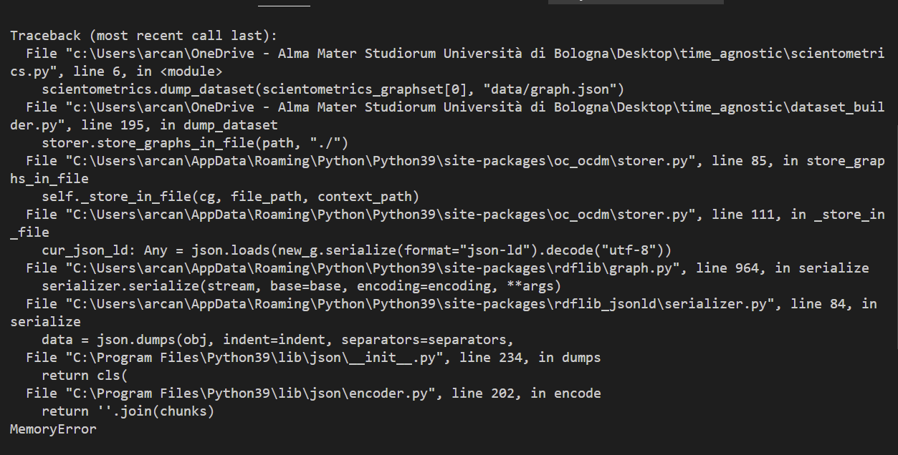Utilizzando Jupyer Notebook e il monitoraggio risorse, ho potuto eseguire i vari passaggi singolarmente, per misurare quanta RAM occorresse a ciascuno:
-
Creare il graphset ha occupato circa 18.4 GB
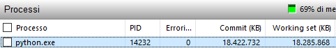 -
Creare il grafo sulla provenance ha portato la memoria occupata a circa 26.8 GB
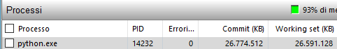 - Infine, il dump del dataset sulla provenance ha fatto crashare il programma.
-
- Durante l'ultimo incontro hai fatto due riferimenti che sono rimasti in sospeso:
- A proposito di OpenCitations Meta, hai menzionato un articolo che introduce a OpenCitations. Ho verificato di non averlo letto. Potresti inviarmelo?
- Hai menzionato alcune questioni di cui discutere dopo la risposta alle domande, che però non sono più state discusse.
Note
La documentazione del metodo import_entities_from_graph della classe Reader di oc_ocdm non è aggiornata. Il metodo vuole infatti tre argomenti obbligatori, non due: il GraphSet, il Graph e il responsible agent. Quest'ultimo non viene menzionato dalla documentazione.
Cosa ho fatto
- Ho caricato dati e provenance su Blazegraph.
- Ho implementato:
- un sistema di gestione delle richieste tramite api più raffinato, con un timeout, un numero massimo di tentativi separati da intervalli progressivamente crescenti tramite backoff factor e con la possibilità di salvare gli errori in un file di log;
- una funzione che effettua query SPARQL su un triplestore al fine di verificare l'esistenza di entità associate allo stesso id. Nel caso le trovi, recupera i grafi associati e li unisce;
- una funzione che effettua query SPARQL su un triplestore al fine di ottenere tutti i DOI degli articoli appartenenti a una determinata rivista e i DOI di tutti gli articoli da essi citati. Dopodiché, controlla se su COCI sono presenti altri DOI di articoli citati e, se li trova, recupera il grafo dell'entità citante e gli aggancia le varie entità relative alla risorsa citata, ovvero l'Identifier, la BibliographicResource e la Citation (data di creazione, timespan, journal o author self-citation). Per quanto riguarda i DOI degli articoli citati già presenti sul triplestore, vengono aggiunte alle rispettive entità Citation il timespan e se sono autocitazioni della rivista o dell'autore;
- una gestione più sofisticata di volume, issue e articoli:
- se ci sono sia volume che issue l'articolo fa parte dell'issue, l'issue del volume e il volume della rivista;
- se c'è solo il volume, l'articolo fa parte del volume e il volume della rivista;
- se c'è solo l'issue, l'articolo fa parte dell'issue e l'issue della rivista;
- se non ci sono né issue né volume l'articolo fa parte della rivista.
- Ho aperto i seguenti issue:
- Ho letto:
- International DOI Foundation. (2019). DOI® Handbook. https://doi.org/10.1000/182.
- Sì, ho seriamente letto tutto l'handbook.
- Fecher, B., & Friesike, S. (2014). Open Science: One Term, Five Schools of Thought. In S. Bartling & S. Friesike (Eds.), Opening Science (pp. 17–47). Springer International Publishing. https://doi.org/10.1007/978-3-319-00026-8_2.
- Kramer, B., & Bosman, J. (2015, June 18). The good, the efficient and the open—Changing research workflows and the need to move from Open Access to Open Science. CERN Workshop on Innovations in Scholarly Communication (OAI9), University of Geneva, Geneva, Switzerland. https://www.slideshare.net/bmkramer/the-good-the-efficient-and-the-open-oai9.
- Woelfle, M., Olliaro, P., & Todd, M. H. (2011). Open science is a research accelerator. Nature Chemistry, 3(10), 745–748. https://doi.org/10.1038/nchem.1149.
- UNESCO. (2020). First draft of the UNESCO Recommendation on Open Science (Programme and Meeting Document SC-PCB-SPP/2020/OS/R1; p. 16). https://unesdoc.unesco.org/ark:/48223/pf0000374837.
- Documentazione di rdflib.
- International DOI Foundation. (2019). DOI® Handbook. https://doi.org/10.1000/182.
- Ho seguito il corso Semantic Web Technologies del Prof. Harald Sack, reperibile all'indirizzo https://open.hpi.de/courses/semanticweb, al fine di approfondire la mia conoscenza di SPARQL 1.1.
Cosa non ho capito
-
Allo scopo di ottenere tutte le triple di cui un'entità è soggetto da un triplestore, oc_ocdm fornisce
il metodo import_entity_from_triplestore della classe Reader. Ecco un esempio di come ho provato a
utilizzarla:
Nonostante l'entità esista ottengo però un ValueError, con messaggio di errore: "The required entity was not found or was not recognised as a proper OCDM entity". Dico che l'entità esiste perché facendo il medesimo CONSTRUCT tramite endpoint SPARQL ottengo i risultati attesi. Sto utilizzando correttamente il metodo? Ho infine risolto il problema utilizzando la classe SPARQLStore di rdflib o SPARQLWrapper, ma visto che oc_ocdm fornisce già uno shortcut preferirei utilizzare quello.g = GraphSet("https://github.com/arcangelo7/time_agnostic/") qres = Reader().import_entity_from_triplestore(g, "http://localhost:9999/blazegraph/sparql", URIRef("https://github.com/arcangelo7/time_agnostic/br/1"),"https://orcid.org/0000-0002-8420-0696") - La documentazione della classe SPARQLStore di rdflib, reperibile a questo indirizzo, afferma:
An RDFLib store around a SPARQL endpoint This is context-aware and should work as expected when a context is specified. For ConjunctiveGraphs, reading is done from the "default graph". Exactly what this means depends on your endpoint, because SPARQL does not offer a simple way to query the union of all graphs as it would be expected for a ConjuntiveGraph. This is why we recommend using Dataset instead, which is motivated by the SPARQL 1.1.
Non ho capito cosa intenda dire. - Dopo avere unito le entità associate agli stessi id è necessario caricare le modifiche sul triplestore. Dal codice di oc_ocdm ho inteso che la libreria si occupa di elaborare la query di update, definendo cosa vada cancellato e cosa aggiunto, ma dai tentativi fatti mi continuano a risultare 0 modifiche, per cui la query non viene lanciata. Sospetto c'entri qualcosa il metodo commit_changes(), il cui funzionamento mi risulta però oscuro.
- Non sono riuscito ad aggiornare la provenance a partire da un grafo di provenance preesistente.
Cosa ho fatto
- Le query SPARQL precedentemente effettuate tramite SPARQLStore utilizzano adesso SPARQLWrapper.
- Grafi di provenance e grafi sui dati vengono adesso generati in base alla storia pregressa tramite un indice.
- Effettuati i miglioramenti automatici, le nuove triple e loro provenance vengono adesso caricate correttamente sul triplestore.
- Grazie alla spiegazione fornitami da Simone, sono riuscito a importare correttamente un grafo da file json tramite metodo import_entities_from_graph della classe Reader di oc_ocdm.
- Sono state implementate due nuove funzioni, merge_by_id_from_file e add_coci_data_from_file, che anziché lavorare a partire da un triplestore lavorano a partire da un file. Di conseguenza, è possibile ottenere in output un nuovo file modificato anziché un upload su un triplestore. In questo modo potrò sia avere un file di backup che inviare a Cristian dei file rdf customizzati in base alle sue esigenze.
- Cristian mi ha fatto notare che avevo considerato solo gli autori come AgentRole. Ora il grafo iniziale comprende anche i publisher.
- Risolti alcuni bug nella funzione add_coci_data_from_triplestore:
- Le entità di tipo cito:Citation preesistenti venivano prima ricercate solo tramite il DOI name del citato e non anche tramite il DOI name del citante.
- Le nuove entità venivano prima generate senza tenere conto dell'ultimo indice, provocando sovrapposizioni.
- Specificare l'argomento res nella ricreazione di un grafo preesistente permette adesso di prescindere dalla funzione di merge poiché, anche se presenti più entità associate ai medesimi identificativi, viene riprodotto solo il grafo dell'entità di interesse corrente.
- Nel caso in cui la funzione venga lanciata più volte sul medesimo triplestore, è stato aggiunto un controllo per cui le stesse informazioni non vengano aggiunte più volte.
- Risolto un bug in merge_by_id_from_triplestore per cui le entità venivano unite a loro stesse.
- Aggiunta una nuova funzione di supporto che prende in input il percorso di un file rdf e restituisce in output un oggetto di tipo GraphSet.
- Tutte le funzioni hanno adesso parametri e output tipati, in osservanza di PEP 3107, allo scopo di aumentare la leggibilità del codice, sia per gli altri che per me. Si tratta quindi di semplici annotazioni, che non causeranno un'eccezione TypeError se non rispettate.
- Il vantaggio del lavorare con una certa mole di dati è che, mentre gli script vengono eseguiti, si
ha
molto tempo per leggere:
- Belhajjame, K., B’Far, R., Cheney, J., Coppens, S., Cresswell, S., Gil, Y., Groth, P., Klyne, G., Lebo, T., McCusker, J., Miles, S., Myers, J., Sahoo, S., & Tilmes, C. (2013). PROV-DM: The PROV Data Model (L. Moreau & P. Missier, Eds.). World Wide Web Consortium. https://www.w3.org/TR/prov-dm/.
- Wolfe, M. (2017, August 9). CC0 and Data Citation. https://www.library.ucdavis.edu/news/cc0-and-data-citation/.
- Wilkinson, M. D., Dumontier, M., Aalbersberg, I. J., Appleton, G., Axton, M., Baak, A., Blomberg, N., Boiten, J.-W., da Silva Santos, L. B., Bourne, P. E., Bouwman, J., Brookes, A. J., Clark, T., Crosas, M., Dillo, I., Dumon, O., Edmunds, S., Evelo, C. T., Finkers, R., … Mons, B. (2016). The FAIR Guiding Principles for scientific data management and stewardship. Scientific Data, 3, 160018. https://doi.org/10.1038/sdata.2016.18.
- GO FAIR. (2018). FAIR Principles. https://www.go-fair.org/fair-principles/.
- Open Knowledge Foundation. (2015). Open Definition 2.1. https://opendefinition.org/od/2.1/en/.
- Landi, A., Thompson, M., Giannuzzi, V., Bonifazi, F., Labastida, I., da Silva Santos, L. O. B., & Roos, M. (2020). The “A” of FAIR – As Open as Possible, as Closed as Necessary. Data Intelligence, 2(1–2), 47–55. https://doi.org/10.1162/dint_a_00027.
- Lin, D., Crabtree, J., Dillo, I., Downs, R. R., Edmunds, R., Giaretta, D., De Giusti, M., L’Hours, H., Hugo, W., Jenkyns, R., Khodiyar, V., Martone, M. E., Mokrane, M., Navale, V., Petters, J., Sierman, B., Sokolova, D. V., Stockhause, M., & Westbrook, J. (2020). The TRUST Principles for digital repositories. Scientific Data, 7(1), 144. https://doi.org/10.1038/s41597-020-0486-7.
- Michener, W. K. (2015). Ten Simple Rules for Creating a Good Data Management Plan. PLOS Computational Biology, 11(10), e1004525. https://doi.org/10.1371/journal.pcbi.1004525.
- Haak, L. L., Fenner, M., Paglione, L., Pentz, E., & Ratner, H. (2012). ORCID: A system to uniquely identify researchers. Learned Publishing, 25(4), 259–264. https://doi.org/10.1087/20120404.
- Meng, X.-L. (2020). Reproducibility, Replicability, and Reliability. Harvard Data Science Review, 2(4). https://doi.org/10.1162/99608f92.dbfce7f9.
- Baker, M. (2016). 1,500 scientists lift the lid on reproducibility. Nature, 533(7604),
452–454.
https://doi.org/10.1038/533452a.
- Vince il premio lettura più sconcertante della settimana, una di quelle che cambia il modo di vedere le cose.
Cosa non ho capito
- Talvolta, provando a fare un merge tra due BibliographicResources, ottengo un errore
di tipo TypeError
che dice:
[BibliographicResource.contains_discourse_element] Expected argument type: de. Provided argument type: BibliographicReference.
Poiché non sto in alcun modo utilizzando entità di tipo DiscourseElement, sospetto che si tratti di un bug. - Portata a termine l'operazione di merge sulle entità associate agli stessi id e caricate le novità sul triplestore, ho riscontrato le stesse stranezze nell'output già riportate sul diario di bordo in data 23/03 (Cosa non ho capito, punto 7). Da quello che ho visto, se unisco A a B, ad A viene associato l'id di B e B viene cancellata. Il problema è che A si ritrova ad essere associata a due entità di tipo datacite:Identifier che in realtà sono identiche, perché appunto A e B sono state unite in quando associate agli stessi id. Inoltre, l'entità B, nonostante sia stata cancellata, continua ad avere degli ingoing links da parte di tutte quelle entità che ad essa si riferivano in passato. C'è qualcosa del metodo merge che non sto capendo o qualcosa che dovrei fare e non sto facendo?
- È preferibile avere funzioni distinte che lavorino su triplestore e file o è meglio avere un'unica funzione che, a seconda degli argomenti passati, lavora indifferentemente su entrambi?
- Non so quanto sia ottimale effettuare query SPARQL su un'entità Graph di rdflib, perché credo manchi delle ottimizzazioni di un triplestore. Quando mi hai detto che devo lavorare sia su triplestore che su file intendevi che devo produrre entrambi gli output o che devo creare funzioni che lavorino in entrambe le modalità?
- Cristian mi ha detto che le librerie con cui lavora per produrre graph embeddings tendono a prendere in input un file tsv e non json. Tramite rdflib posso serializzare rdf in una moltitudine di notazioni, quali turtle, nt, json-ld, rdf/xml ed n3, ma onestamente non ho mai visto un grafo rdf serializzato in tsv. Si può fare?
- Mi piacerebbe portare avanti nuove idee per quanto riguarda possibili miglioramenti automatici del
grafo, poiché quelle che ho al momento non mi convincono:
- Correggere i DOI names sbagliati. Dato che è materia d'esame e che coinvolge altre 3 persone non mi sembra corretto occuparmene da solo per il tirocinio.
- Strutturare i campi unstructured forniti da Crossref precedentemente non considerati. Per farlo dovrei utilizzare nuovamente l'API di Crossref, mentre vorrei capire se è possibile migliorare ulteriormente quello che ho già senza chiedere altre risorse esterne.
- Arricchire i metadati delle entità citate, che mi convince poco per le stesse ragioni del punto precedente, ovvero che dovrei rivolgermi all'API di Crossref.
Cosa ho fatto
- Ho implementato l'algoritmo add_reference_data_without_doi che, preso in input un file json contenente l'output di Crossref con le informazioni sui lavori di una determinata rivista, controlla quali reference non hanno DOI name e hanno altri metadati oltre all'unstructured. Dopodiché, chiama il metodo privato _generate_crossref_query_from_metadata, che trasforma i metadati in una stringa di query da lanciare tramite API di Crossref. Se la ricerca va a buon fine, seleziona il primo risultato, cerca sul triplestore l'entità citante corrente, verifica che il DOI name della citata trovata non esista già (FILTER NOT EXISTS) e solo allora crea Identifier, BibliographicResource e Citation corrispondenti e li aggiunge al preexisting graph dell'entità citante corrente.
- Ho implementato il metodo add_crossref_reference_data, che arricchisce il dataset corredando le risorse bibliografiche citate di numerose informazioni tratte da Crossref, quali publisher, titolo, sottotitolo, volume, issue, data di pubblicazione, resource embodiment e autori, ciascuna correttamente mappata seguendo l'OCDM.
- Il metodo merge_by_id_from_triplestore unisce adesso anche le entità di tipo datacite:Identifier associate alle entità unite sulla base dell'identificativo.
- È stato implementato il metodo _get_entity_and_ids_from_res, che si occupa di restituire un'entità e la lista delle entità degli id associati dato un URIRef e un triplestore.
- Il metodo _manage_br_type si occupa adesso di assegnare a ciascuna risorsa bibliografica il tipo corretto, tra book, book-chapter, component, journal-article, monograph, other, posted-content, proceeding-article, report e report-series.
- Sono stati estratti dal metodo generate_graph tre nuovi metodi privati statici, i quali sono stati
riutilizzati dal metodo add_crossref_reference_data:
- _manage_author_ra_ar;
- _manage_volume_issue;
- _manage_resource_embdiment.
- Prima di avventurarmi nella scrittura di un programma di editing interattivo per Knowledge Graph, ho
esplorato la letteratura esistente sull'argomento:
- Wright J., Rodríguez Méndez S.J., Haller A., Taylor K., Omran P.G. (2020) Schímatos: A
SHACL-Based Web-Form Generator for Knowledge Graph Editing. In: Pan J.Z. et al. (eds) The
Semantic Web – ISWC 2020. ISWC 2020. Lecture Notes in Computer Science, vol 12507. Springer,
Cham. https://doi.org/10.1007/978-3-030-62466-8_5.
- L'articolo introduce Schímatos, un editor di KG interattivo, che si occupa della validazione degli input utilizzando SHACL Shapes Constraint Language (https://www.w3.org/TR/shacl/). Non sembra esserci però un modo immediato per riutilizzare il software con KG che non siano WikiData. Sembra infatti essere soltanto una demo a scopo dimostrativo, per quanto molto interessante.
- Heyvaert P., Dimou A., Verborgh R., Mannens E., Van de Walle R. (2016) Graph-Based Editing
of Linked Data Mappings Using the RMLEditor. In: Sack H., Rizzo G., Steinmetz N., Mladenić
D., Auer S., Lange C. (eds) The Semantic Web. ESWC 2016. Lecture Notes in Computer Science,
vol 9989. Springer, Cham. https://doi.org/10.1007/978-3-319-47602-5_25.
- RMLEditor offre una GUI per consentire ai data publishers, esperti di dominio, di modellare la conoscenza derivata da dati di origini multiple ed eterogenee. RMLEditor utilizza RML come linguaggio di mappatura sottostante. Ad oggi è presente una demo che permette di modellare fino a 20 nodi per un massimo di 2 MB per singolo file.
- Ho letto la documentazione e ho provato a usare Web-Karma (https://github.com/usc-isi-i2/Web-Karma), un tool per modificare un KG in base a un'ontologia specificata. Problema: non ha un sistema di validazione rispetto all'ontologia ed è possibile modificare l'ontologia stessa, intenzionalmente o per errore. In sintesi, utilizzabile solo da chi conosce già molto bene il data model.
- Wright J., Rodríguez Méndez S.J., Haller A., Taylor K., Omran P.G. (2020) Schímatos: A
SHACL-Based Web-Form Generator for Knowledge Graph Editing. In: Pan J.Z. et al. (eds) The
Semantic Web – ISWC 2020. ISWC 2020. Lecture Notes in Computer Science, vol 12507. Springer,
Cham. https://doi.org/10.1007/978-3-030-62466-8_5.
- Ho letto la documentazione di Flask, allo scopo di utilizzare Python per il back-end della mia applicazione di KG editing. Ho anche letto la documentazione di Jinja, dato che è il template-engine predefinito di Flask.
- Utilizzando Flask per il server, Jinja2 come motore di template e Blazegraph come database ho implementato una prima interfaccia grafica che mostra dieci triple.
Cosa non ho capito
- Oltre ai due bug del metodo merge di oc_ocdm già rilevati in 07/04/2021 (Cosa
non ho capito, punti 1 e 2) credo di averne trovato un terzo specifico per il merge tra
entità di tipo datacite:Identifier. Ho miniaturizzato e commentato il codice utilizzato al fine di
rendere l'errore più facile da comprendere e riprodurre. Inoltre, mi piacerebbe capire se io stia
procedendo nel modo corretto prima di mandare un'altra mail a Simone.
Se a questo punto provo a fare l'upload attraverso il metodo upload_all passando il graphset, l'upload non avviene a causa di un errore nella formattazione della query di upload. In particolare, pare che manchi un ";" prima di un INSERT.
from oc_ocdm.graph.graph_entity import GraphEntity from oc_ocdm.graph import GraphSet from rdflib import URIRef, Graph from SPARQLWrapper import SPARQLWrapper, JSON, RDFXML def get_entity_from_res(res:URIRef, graphset:GraphSet) -> GraphEntity: res = URIRef(res) query = f""" CONSTRUCT {{<{res}> ?p ?o}} WHERE {{<{res}> ?p ?o}} """ sparql.setQuery(query) sparql.setReturnFormat(RDFXML) results = sparql.query().convert() preexisting_graph = Graph().parse(data=results.serialize(format='xml'), format='xml') entity = graphset.add_id(resp_agent="https://orcid.org/0000-0002-8420-0696", res=res, preexisting_graph=preexisting_graph) return entity # Estrai Identifier e DOI name di tutte le br dal triplestore queryString = """ PREFIX datacite: <http://purl.org/spar/datacite/> PREFIX fabio: <http://purl.org/spar/fabio/> PREFIX literal: <http://www.essepuntato.it/2010/06/literalreification/> SELECT ?id ?literalValue WHERE {{ ?s a fabio:Expression; datacite:hasIdentifier ?id. ?id literal:hasLiteralValue ?literalValue. }} """ sparql = SPARQLWrapper("http://localhost:9999/bigdata/sparql") sparql.setQuery(queryString) sparql.setReturnFormat(JSON) results = sparql.query().convert() dois_found = dict() graphset = GraphSet(base_iri="https://github.com/arcangelo7/time_agnostic/", wanted_label=False) for result in results["results"]["bindings"]: # Se il DOI name è già stato trovato e l'Identifier è diverso da quello già trovato if result["literalValue"]["value"] in dois_found and result["id"]["value"] != dois_found[result["literalValue"]["value"]]: id_duplicated_entity = get_entity_from_res(result["id"]["value"], graphset) id_preexisting_entity = get_entity_from_res(dois_found[result["literalValue"]["value"]], graphset) print(f"Merging entity {id_preexisting_entity.res} with {id_duplicated_entity.res}") id_preexisting_entity.merge(id_duplicated_entity) else: # Registra di aver trovato questo DOI name e che è associato a questo Identifier dois_found[result["literalValue"]["value"]] = result["id"]["value"] - Per qualche ragione a volte l'update_query vuota non è "" ma None. Il metodo upload_all della classe
Storer di oc_ocdm non gestiste il caso in cui l'update_query sia None, sollevando un'eccezione nel
momento in cui viene fatta la seguente concatenazione: query_string += " ; " + update_query, dato
che non è possibile concatenare una stringa con None. Ho risolto in locale aggiungendo:
Tuttavia, dato che l'update_query vuota dovrebbe sempre essere "" e non None, credo ci sia un altro bug a monte.
# for idx, entity in enumerate(self.a_set.res_to_entity.values()): # update_query, n_added, n_removed = get_update_query(entity, entity_type=self._class_to_entity_type(entity)) if update_query == "" or update_query is None: skipped_queries += 1 - Non ho trovato documentazione su tutti i possibili metadati delle reference di un work restituite da
Crossref, quindi ho scoperto tramite un algoritmo che, sui quasi 7000 articoli citanti di
Scientometrics, i citati posso riportare le chiavi sotto elencate. Di fianco a ciascuna viene
indicato tramite quale notazione sono state usate nella query a Crossref al fine di recuperare il
DOI name:
- journal-title → query.bibliographic=value&
- author → query.author=value&
- journal-title → query.container-title=value&
- ISBN → filter=isbn:value
- year → filter=from-index-date:value,
- Perché proprio from-index-date? Perché nella documentazione si legge:
When using time filters to retrieve periodic, incremental metadata updates, the from-index-date filter should be used over from-update-date, from-deposit-date, from-created-date and from-pub-date. The timestamp that from-index-date filters on is guaranteed to be updated every time there is a change to metadata requiring a reindex.
- Perché proprio from-index-date? Perché nella documentazione si legge:
- issue
- volume-title
- series-title
- edition
- key
- first-page
- volume
- isbn-type
- Ti risulta che io non possa fare query a Crossref utilizzando quelle informazioni?
- È possibile utilizzare volume-title e series-title come valore della field query query.container-title?
- I risultati ottenuti finora sono sorprendentemente buoni, vale la pena restringere ulteriormente la ricerca?
- Cristian mi ha detto che per il suo progetto un'informazione rilevante è l'affiliazione degli autori. Credo che l'OCDM non la preveda, giusto?
- Se una risorsa bibliografica viene indicata da Crossref come di tipo "posted-content" con quale tipo di BibliographicResource presente nell'OCDM devo mapparla?
Cosa ho fatto
- Novità relative al Knowledge Graph Editor:
- È stata aggiunta una textarea che permette di effettuare query SPARQL.
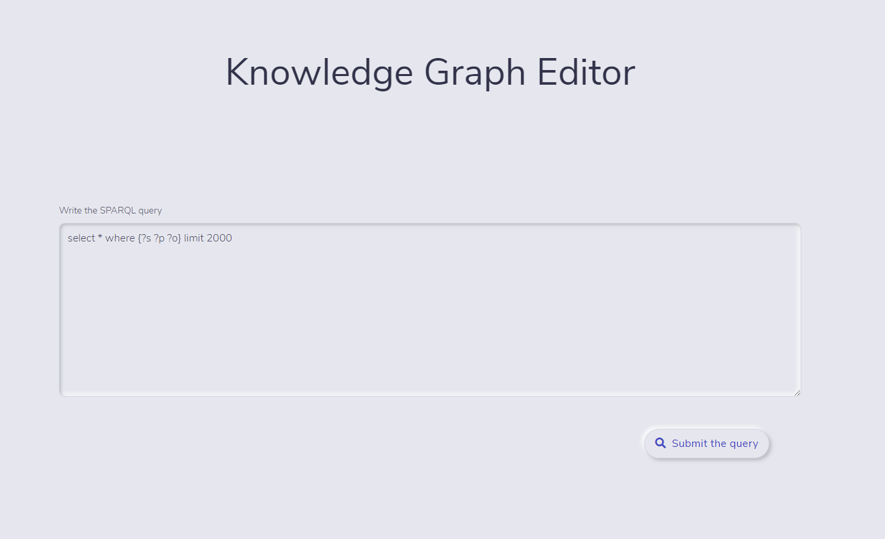
- Se la query richiede molto tempo, un'icona di caricamento comunica all'utente lo stato
interno del sistema.
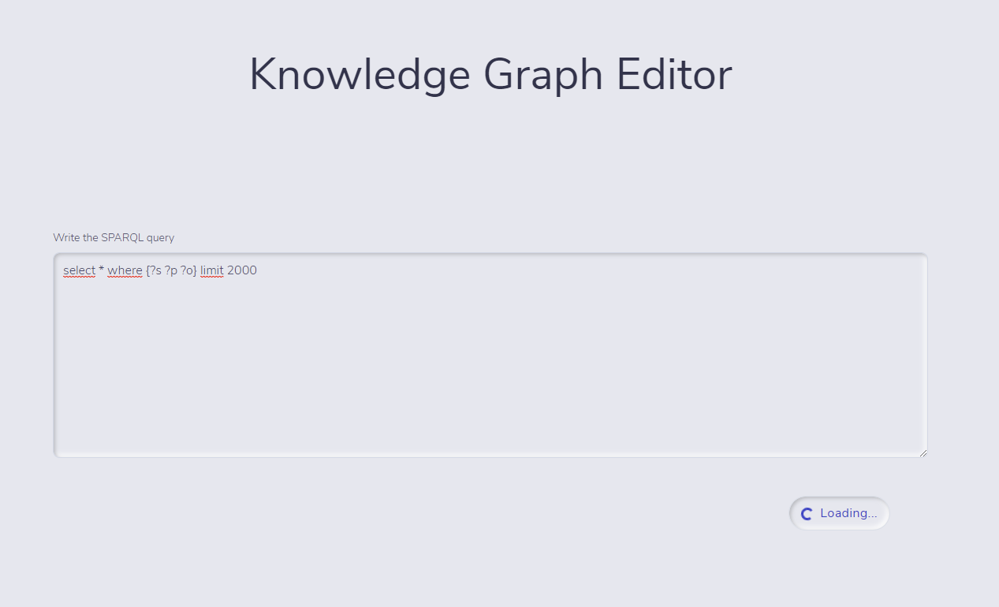
- L'output della query viene mostrato in una tabella, in cui ogni colonna rappresenta una
variabile della query stessa. Le entità vengono riportate come link, mentre non è possibile
interagire con i predicati, con gli oggetti di tipo literal e in generale con gli oggetti il
cui URI non contiene l'URI base del dataset.
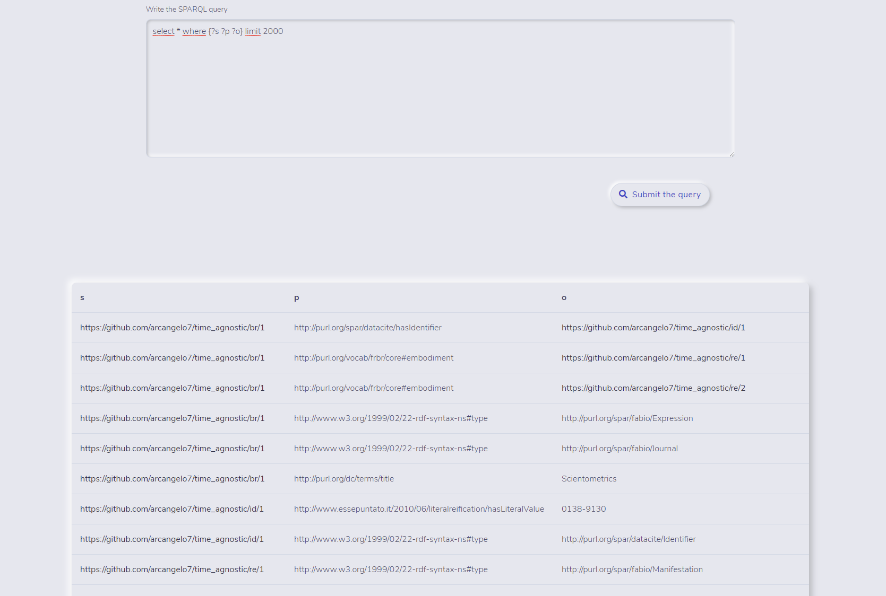
- Cliccando su un'entità, vengono mostrati tutti gli outgoing links e tutti gli incoming links
relativi a quell'entità.
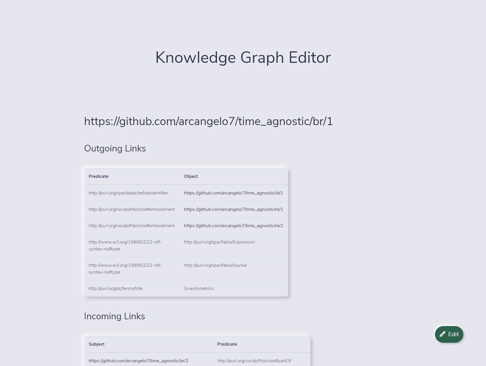
- Il pulsante "Edit" permette di accedere alla modalità di modifica.
- È stata aggiunta una textarea che permette di effettuare query SPARQL.
- Novità relative al metodo per ottenere i DOI names delle reference riportate da Crossref senza DOI.
- Il metodo add_reference_data_without_doi non utilizza più data di pubblicazione e ISBN per fare query su Crossref, mentre usa volume-title e series-title oltre al journal-title.
- Sono state aggiunti diversi metodi il cui scopo complessivo è quello di calcolare il
matching score tra due dizionari di metadati, ovvero quelli sintentici e
grezzi riportati da Crossref nel campo "reference" e quelli approfonditi risultanti da una
query. L'algoritmo è stato mutuato dai capitoli 3.2 and soprattuttutto dall'appendice
dell'articolo Large-scale comparison of bibliographic data.
sources: Scopus, Web of Science, Dimensions,
Crossref, and Microsoft Academic (Visser, Martijn et al., 2005), reperibile al
seguente indirizzo: https://arxiv.org/abs/2005.10732. La formula adottata, rispetto a
quella originale, non considera i DOI names, poiché, date le premesse, non sono mai presenti
nei metadati di partenza.
- Il metodo _do_heuristic_match combina gli score derivanti dai singoli match in un unico score finale.
- Il metodo _levenshtein_distance calcola la distanza di Levenshtein,
ovvero il minimo numero di modifiche (cancellazioni, aggiunte e sostituzioni)
necessarie per trasformare una stringa in un'altra. È stato adottato l'algoritmo
iterativo basato su una matrice, poiché le soluzioni ricorsiva e tramite tecnica di
dynamic programming richiedevano innumerevoli passaggi in più, risultando meno
efficienti.
Questa funzione vince il premio algoritmo più entusiasmante della settimana, se non del mese. È talmente bella che la riporto nel diario:
import numpy as np def levenshtein_distance(target:str, source:str) -> int: target = [k for k in "#" + target] source = [k for k in "#" + source] sol = np.zeros(shape=(len(source), len(target))) sol[0] = [j for j in range(len(target))] sol[:,0] = [j for j in range(len(source))] if target[1] != source[1]: sol[1,1] = 2 for c in range(1, len(target)): for r in range(1, len(source)): if target[c] != source[r]: sol[r,c] = min(sol[r-1,c], sol[r,c-1]) + 1 else: sol[r,c] = sol[r-1,c-1] min_edit_distance = int(sol[-1,-1]) return min_edit_distance -
Il metodo _match_first_author compara le iniziali del nome e il cognome dei primi autori dei due lavori, tramite la seguente formula:
𝑚firstauthor = 0.8 − 0.8𝐷(𝑙A, 𝑙B) ⁄ max(𝐿(𝑙A), 𝐿(𝑙B)) + 0.2𝐸(𝑓A, 𝑓B)Dove lX ed fX denotano rispettivamente il cognome e le iniziali del nome del primo autore del documento X. L(a) è uguale alla lunghezza della stringa. D(a,b) è la distanza di Levenshtein tra la stringa a e la stringa b. E(a,b) è uguale a 1 se a è uguale a b, altrimenti 0. Dunque, 𝑚firstauthor è uguale a 1 se i primi autori dei documenti A e B hanno gli stessi cognomi e iniziali dei nomi.
-
Il metodo _match_title compara i titoli dei due lavori, tramite la seguente formula:
𝑚title = 1 − 𝐷(𝑡A, 𝑡B) ⁄ max(𝐿(𝑡A), 𝐿(𝑡B))Anche in questo caso, 𝑚title è uguale a 1 se i titoli dei documenti A e B sono identici.
- Ho aperto il seguente issue: https://github.com/opencitations/oc_ocdm/issues/8.
Cosa non ho capito
-
Per effettuare un'operazione di aggiunta, cancellazione e modifica sulle triple del dataset attraverso il KGEditor, devo necessariamente utilizzare oc_ocdm. Se lanciassi query di update in autonomia, infatti, perderei tutte le informazioni contenute negli indici del dataset e della provenance, oltre al fatto che dovrei riscrivere lo stesso codice già scritto da Simone per effettuare le medesime operazioni. Problema: come dico a Python quale metodo di oc_ocdm invocare per fare un delete, un create o un update? Mi spiego meglio con un esempio: poniamo che l'utente voglia eliminare una delle triple in figura cliccando sull'apposito pulsante "-":
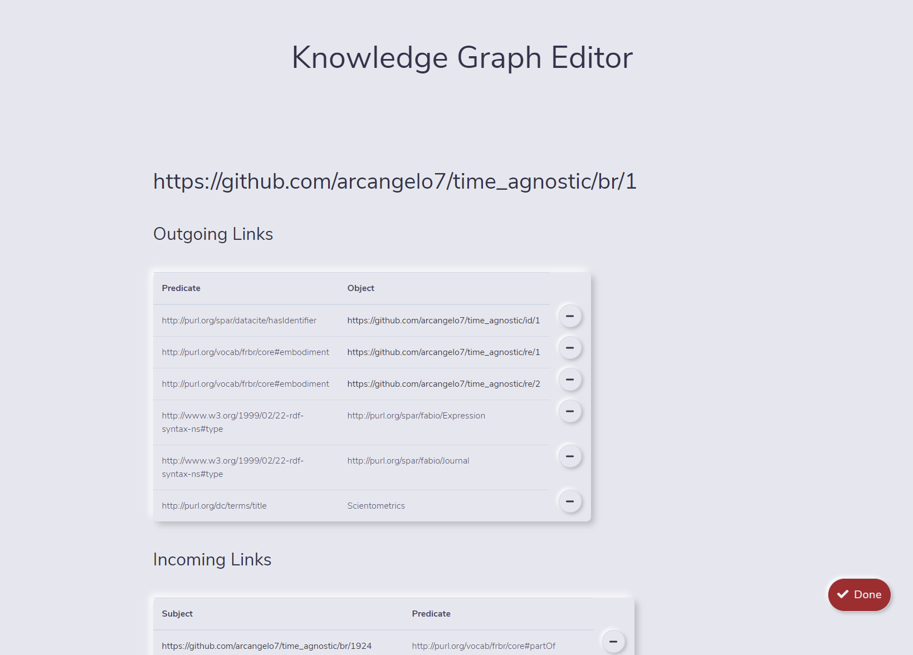Ad esempio, potrebbe voler eliminare la prima tripla:
<https://github.com/arcangelo7/time_agnostic/br/1> <http://purl.org/spar/datacite/hasIdentifier> <https://github.com/arcangelo7/time_agnostic/id/1>Niente di più facile, oc_ocdm mette a disposizione il metodo remove_identifier a questo scopo. Tuttavia, il pulsante "-" è generico e l'unica informazione per capire quale metodo di cancellazione invocare è il predicato
Cosa ho fatto
Tutte le novità di questa settimana sono relative al Knowledge Graph Editor.
- È stato creato un file di configurazione in formato json, che mappa diversi tipi di entità e predicato
con i relativi metodo di creazione e cancellazione di oc-ocdm. È possibile visualizzarlo a questo
indirizzo: https://raw.githubusercontent.com/arcangelo7/time_agnostic/main/KGEditor/static/config/config.json.
Se ne riporta qui un'anteprima.
"http://purl.org/spar/fabio/Expression": { "add": "add_br", "http://www.w3.org/1999/02/22-rdf-syntax-ns#type": { "create": "", "delete": "remove_type" }, "http://purl.org/spar/datacite/hasIdentifier": { "create": "has_identifier", "delete": "remove_identifier" }, "http://purl.org/dc/terms/title": { "create": "has_title", "delete": "remove_title" }, "http://purl.org/spar/fabio/hasSubtitle": { "create": "has_subtitle", "delete": "remove_subtitle" }, "http://purl.org/vocab/frbr/core#partOf": { "create": "is_part_of", "delete": "remove_is_part_of" }, "http://purl.org/spar/cito/cites": { "create": "has_citation", "delete": "remove_citation" }, "http://prismstandard.org/namespaces/basic/2.0/publicationDate": { "create": "has_pub_date", "delete": "remove_pub_date" }, "http://purl.org/vocab/frbr/core#embodiment": { "create": "has_format", "delete": "remove_format" }, "http://purl.org/spar/fabio/hasSequenceIdentifier": { "create": "has_number", "delete": "remove_number" }, "http://purl.org/vocab/frbr/core#part": { "create": "contains_in_reference_list", "delete": "remove_contained_in_reference_list" }, "http://purl.org/spar/pro/isDocumentContextFor": { "create": "has_contributor", "delete": "remove_contributor" } } - La funzione di cancellazione delle triple è ora funzionante. Tramite la reflection, viene dinamicamente invocato il metodo appropriato in base al soggetto e predicato selezionati dall'utente per la cancellazione. In particolare, viene utilizzata la funzione getattr per invocare il metodo vero e proprio. Nel caso in cui questo metodo voglia un argomento, viene passata l'entità relativa all'oggetto. Per capire quanti parametri siano richiesti dal metodo è stata usata la funzione signature del modulo inspect di Python.
-
Cliccando sul pulsante di cancellazione, la tripla viene decorata con un line-through e il bottone
diventa un pulsante di aggiunta per annullare l'azione precedente. Finché non viene cliccato il pulsante
"Done", tutte le query vengono salvate in un dizionario. Cliccando sul "+" viene cancellata dal
dizionario l'operazione di cancellazione corrispondente. Lo schema delle chiavi del dizionario di update
è "soggetto + predicato + oggetto".
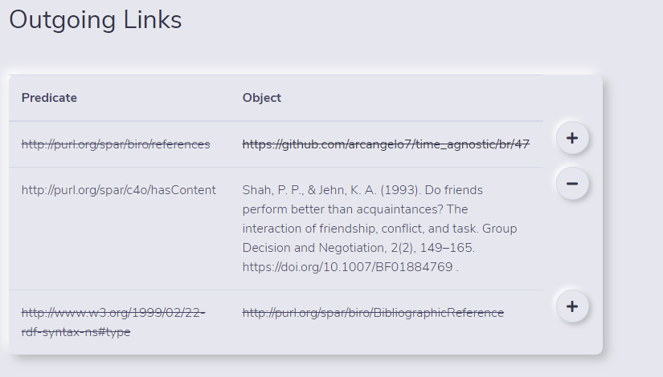
-
È stato introdotto il pulsante di update, contraddistinto dall'icona della matita,
poiché le modifiche sono reversibili finché non si preme il tasto "Done". Quest'ultimo, al contrario, è
contraddistinto dall'icona della penna a inchiostro, poiché causa la modifica permanente del dataset e
della provenance. Cliccando sul pulsante di update, la tripla da testo diventa input (textarea nel caso
di valori che contengono spazi) e si può modificare. Così facendo, la funzione di cancellazione viene
disabilitata. Viceversa, la funzione di cancellazione disabilita quella di update. Una volta completata
la modifica, è possibile premere il pulsante con l'icona del "check" per salvare la relativa query, che
non verrà effettuata fino al click sul tasto "Done".
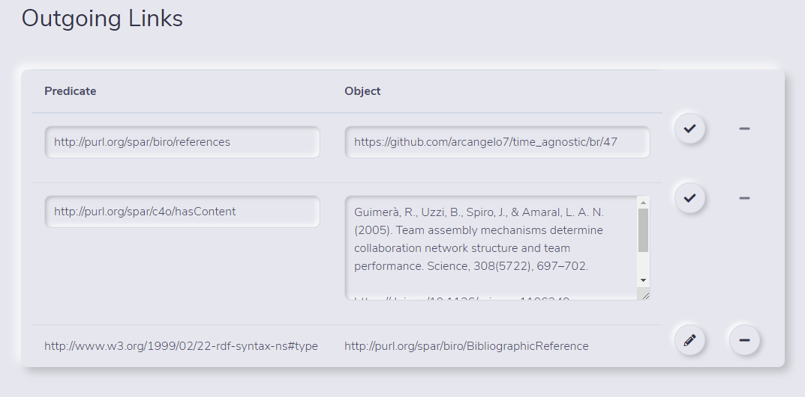
-
È stato introdotta la funzionalità per creare una nuova tripla. Cliccando sul pulsante
"+" di fianco a un'entità si apre un modale, nel quale è possibile inserire un nuovo predicato e un
nuovo oggetto per quell'entità. L'input del predicato è dotato di una funzione di auto-completamento,
che si basa sul medesimo file di configurazione utilizzato per mappare soggetti e predicati con relativi
metodi di aggiunta e cancellazione di oc-ocdm.
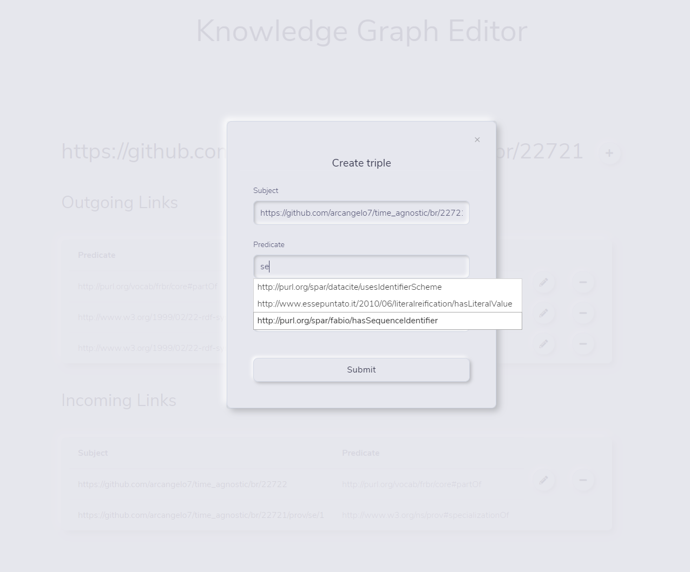
-
Nel caso in cui l'utente non si sia ancora autenticato tramite ORCID, cliccando sul pulsante "Edit"
viene aperto un modale per specificare il responsible agent.
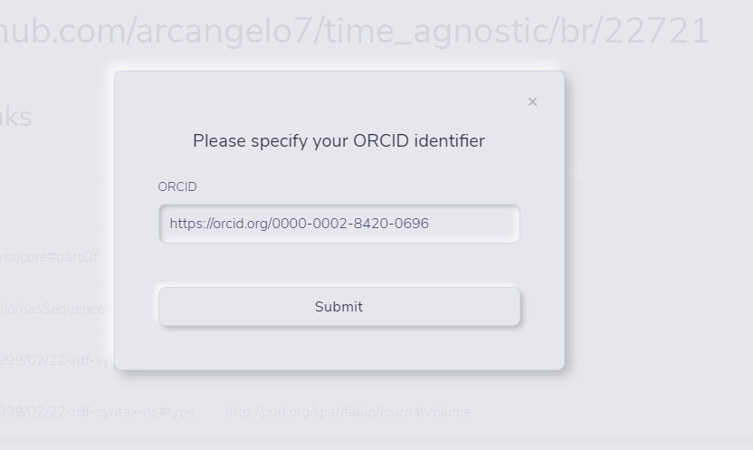Il valore inserito dev'essere necessariamente un ORCID. Il campo viene infatti validato tramite la seguente espressione regolare.Una volta specificato il responsible agent, viene generato un cookie e l'ORCID viene salvato nella sessione, per cui non verrà più chiesto.
/(https?:\/\/orcid.org\/)?([0-9]{4})-([0-9]{4})-([0-9]{4})-([0-9]{4})/i - Le triple di provenance sono adesso immutabili. Nel contesto di un'entità di provenance il pulsante di modifica non appare, mentre nel contesto di un qualunque altro tipo di entità non compaiono i pulsanti di modifica e cancellazione di fianco agli incoming links legati alla provenance.
- Risolto un bug per cui la rotella di caricamento girava all'infinito in caso di errori nella query o di database irraggiungibile.
Cosa non ho capito
-
Implementando l'operazione di update del KGEditor mi sono nuovamente imbattuto nel bug delle query
malformate, ovvero prive di ";" tra un'operazione di update e l'altra. L'update consiste infatti di due
operazione, una di cancellazione e una di aggiunta. In questo modo ho potuto astrarre il problema e scrivere del codice per riprodurlo, che riporto qui sotto:
Purtroppo non sarà possibile parlarne con Simone, perché ha già pubblicato la versione 6.0.0 di oc_ocdm e mi ha detto che non metterà più mano al codice.
from oc_ocdm.graph import GraphSet from oc_ocdm.storer import Storer from rdflib import URIRef, Graph from SPARQLWrapper import SPARQLWrapper, RDFXML def get_entity_from_res(res:URIRef, graphset:GraphSet, ts_url:str="http://localhost:9999/blazegraph/sparql", resp_agent="https://orcid.org/0000-0002-8420-0696"): query = f""" CONSTRUCT {{<{res}> ?p ?o}} WHERE {{<{res}> ?p ?o}} """ sparql = SPARQLWrapper(ts_url) sparql.setQuery(query) sparql.setReturnFormat(RDFXML) data = sparql.query().convert() graph = Graph().parse(data=data.serialize(format='xml'), format='xml') entity = graphset.add_br(resp_agent=resp_agent, res=res, preexisting_graph=graph) return entity graphset = GraphSet(base_iri="https://github.com/arcangelo7/time_agnostic/", wanted_label=False) br_16 = get_entity_from_res(res=URIRef("https://github.com/arcangelo7/time_agnostic/br/16"), graphset=graphset) br_19 = get_entity_from_res(res=URIRef("https://github.com/arcangelo7/time_agnostic/br/19"), graphset=graphset) br_99 = get_entity_from_res(res=URIRef("https://github.com/arcangelo7/time_agnostic/br/99"), graphset=graphset) br_16.remove_citation(br_19) br_16.has_citation(br_99) storer = Storer(graphset) storer.upload_all("http://localhost:9999/blazegraph/sparql")
Cosa ho fatto
- È stata ultimata la funzione add_reference_data_without_doi, che aggiunge al grafo
le reference senza DOI, dopo aver trovato il DOI tramite query a Crossref e match euristico dei
risultati.
- È stata implementata la funzione _match_other, che calcola il match
basandosi sull'anno di pubblicazione, il volume, l'issue e la pagina iniziale (quella finale
non è mai indicata nel campo reference, for reasons), secondo la seguente formula:
dove yx, vx, ix e bx denotano, rispettivamente, l'anno di pubblicazione, il numero del volume, il numero dell'issue e la pagina iniziale del documento x. E(a,b) è uguale a 1 se a e b sono identici, 0 in caso contrario. La formula originale proposta da Martijn Visser (https://arxiv.org/ftp/arxiv/papers/2005/2005.10732.pdf) prevede anche la pagina finale e assegna un moltiplicatore di 0.3 sia alla pagina finale che a quella finale: per far fronte all'assenza della pagina finale, si è assegnato un moltiplicatore di 0.6 a quella iniziale, in modo che il risultato finale oscilli tra 0 e 1.
matchother = 0.1𝐸(𝑦A, 𝑦B) + 0.2𝐸(𝑣A, 𝑣B) + 0.1𝐸(𝑖A, 𝑖B) + 0.6𝐸(𝑏A, 𝑏B) -
È stata implementata la funzione _is_a_match, che combina i match basati
sul primo autore, sul titolo, sulla fonte e sugli altri valori in un unico score finale,
secondo la seguente formula:
La formula originale prevedeva anche l'aggiunta di 15 punti per il match tra il DOI della fonte e del target, valore che è stato rimosso perché il DOI della fonte non è mai disponibile, essendo l'incognita che si intende individuare. Per questo motivo, è stato ridotto il threshold oltre il quale viene stabilito un match, che nel paper di Martijn Visser era fissato a 30, mentre nel nostro caso è di 15, ovvero 30 meno i 15 punti del match tra DOI.
similarityA,B = 7 * match_first_author + 14 * match_title + 5 * match_source + 14 * match_other
- È stata implementata la funzione _match_other, che calcola il match
basandosi sull'anno di pubblicazione, il volume, l'issue e la pagina iniziale (quella finale
non è mai indicata nel campo reference, for reasons), secondo la seguente formula:
-
Ho generato i seguenti livelli di provenance:
- Livello 0: creazione del grafo.
- Livello 1: aggiunta delle reference presenti in COCI e non nel grafo del livello 0, quindi creazione dei rispettivi br, id e ci. Se la reference era già presente nel livello 0, aggiunta del timespan e del tipo di citazione (journal self-citation o author self-citation).
- Livello 2: arricchimento dei dati delle reference tramite Crossref, in particolare aggiunta della rivista di origine (br, id, ra, ar), aggiunta del tipo di br della reference, del titolo, sottotitolo, data di pubblicazione, autore (ra, ar), volume, issue e resource embodiment.
- Livello 3 (in progress, è al 28% alle 11:36 del 12/05/2021): aggiunta di alcune citazioni andate perse poiché riportate da Crossref senza DOI.
- Ogni livello di provenance è stato salvato sia sul triplestore che in due file json (uno per i dati, l'altro per la provenance) . Inoltre, sono stati creati dei backup di ogni singolo stato del database, dei file json e degli info_dir.
- Nota bene: i livelli di provenance attuali sono temporanei. Servono soltanto ad avere una base su cui lavorare per la creazione del Time agnostic browser. Quando la funzione di merge sarà funzionante, essa verrà lanciata dopo ogni livello, in modo da ottimizzare i processi successivi, che dovendo lavorare su meno entità impiegheranno meno tempo e meno RAM.
-
Novità sul Knowledge Graph Editor:
- La funzione di update è ora pienamente funzionante. Simone ha infatti corretto il bug delle query malformate.
- L'editor crea e aggiorna i grafi di provenance.
- L'editor gestisce la creazione e l'update dei valori letterali degli identificatori.
- È adesso possibile creare e modificare il tipo delle entità di tipo pro:RoleInTime, fabio:Expression, foaf:Agent, fabio:Manifestation, datacite:Identifier, biro:BibliographicReference e cito:Citation.
Cosa non ho capito
-
La funzione di merge è stata modificata, ma i bug sono aumentati. Ora non solo ci sono tutti quelli
di cui abbiamo discusso (identificatori non uniti, incoming links a entità cancellate), ma ce n'è
uno nuovo, ovvero che, se A e B vengono uniti, A viene privata di tutti i suoi outgoing links meno
il tipo. Ti mostro il codice com'è adesso e provo a dare una spiegazione del perché non funziona.
La parte problematica è "triples_list = list(entity.g.triples((res, None, other.res)))". L'idea è quella di ottenere tutte le triple che puntano a other, in modo da poterle reindirizzare su self. Tuttavia la lista triples_list sarà pressoché sempre vuota, perché viene riempita da triple che da self puntano a other, condizione che non si verifica quasi mai. In generale, non è possibile risalire alle triple che hanno come oggetto self o other in questo modo, perché il preexisting_graph contiene solo le triple che hanno self o other come soggetto, mai come oggetto.
def merge(self, other: GraphEntity) -> None: # Here we must REDIRECT triples pointing # to 'other' to make them point to 'self': for res, entity in self.g_set.res_to_entity.items(): triples_list: List[Tuple] = list(entity.g.triples((res, None, other.res))) for triple in triples_list: entity.g.remove(triple) new_triple = (triple[0], triple[1], self.res) entity.g.add(new_triple) types: List[URIRef] = other.get_types() for cur_type in types: self._create_type(cur_type) label: Optional[str] = other.get_label() if label is not None: self.create_label(label) self._was_merged = True self._merge_list = (*self._merge_list, other) # 'other' must be deleted AFTER the redirection of # triples pointing to it, since mark_as_to_be_deleted # also removes every triple pointing to 'other' other.mark_as_to_be_deleted() -
Credo ci sia un bug in oc-ocdm per quanto riguarda la rimozione di triple che hanno come soggetto
un'entità di tipo foaf:Agent. Ad esempio, i metodi remove_name, remove_given_name,
remove_family_name non fanno alcunché. Purtroppo, il codice scritto da Simone mi sembra corretto,
non sono riuscito a capire cosa causi l'errore. Riporto del codice utile a riprodurre il problema:
from oc_ocdm.graph import GraphSet from oc_ocdm.storer import Storer from rdflib import URIRef, Graph from SPARQLWrapper import SPARQLWrapper, RDFXML def get_entity_from_res(res:URIRef, graphset:GraphSet, ts_url:str="http://localhost:9999/blazegraph/sparql", resp_agent="https://orcid.org/0000-0002-8420-0696"): query = f""" CONSTRUCT {{<{res}> ?p ?o}} WHERE {{<{res}> ?p ?o}} """ sparql = SPARQLWrapper(ts_url) sparql.setQuery(query) sparql.setReturnFormat(RDFXML) data = sparql.query().convert() graph = Graph().parse(data=data.serialize(format='xml'), format='xml') entity = graphset.add_ra(resp_agent=resp_agent, res=res, preexisting_graph=graph) return entity graphset = GraphSet(base_iri="https://github.com/arcangelo7/time_agnostic/", wanted_label=False) ra_399 = get_entity_from_res(res=URIRef("https://github.com/arcangelo7/time_agnostic/ra/339"), graphset=graphset) ra_399.remove_family_name() storer = Storer(graphset) storer.upload_all("http://localhost:9999/blazegraph/sparql") -
Credo ci sia un bug in oc-ocdm relativo alla creazione del grafo di provenance di entità di tipo
pro:RoleInTime e fabio:Expression. Qualunque sia la modifica all'entità, lo snapshot riporta come
update query la seguente stringa: "INSERT DATA { GRAPH { .} }". Riporto del codice utile a
riprodurre il problema.
from oc_ocdm.graph import GraphSet from oc_ocdm.prov import ProvSet from oc_ocdm.storer import Storer from rdflib import URIRef, Graph from SPARQLWrapper import SPARQLWrapper, RDFXML def get_entity_from_res(res:URIRef, graphset:GraphSet, ts_url:str="http://localhost:9999/blazegraph/sparql", resp_agent="https://orcid.org/0000-0002-8420-0696"): query = f""" CONSTRUCT {{<{res}> ?p ?o}} WHERE {{<{res}> ?p ?o}} """ sparql = SPARQLWrapper(ts_url) sparql.setQuery(query) sparql.setReturnFormat(RDFXML) data = sparql.query().convert() graph = Graph().parse(data=data.serialize(format='xml'), format='xml') entity = graphset.add_ar(resp_agent=resp_agent, res=res, preexisting_graph=graph) return entity graphset = GraphSet(base_iri="https://github.com/arcangelo7/time_agnostic/") ar_338 = get_entity_from_res(res=URIRef("https://github.com/arcangelo7/time_agnostic/ar/338"), graphset=graphset) ar_338.create_publisher() storer = Storer(graphset) provset = ProvSet(prov_subj_graph_set=graphset, base_iri="https://github.com/arcangelo7/time_agnostic/", info_dir="./data/info_dir/prov/") provset.generate_provenance() storer_prov = Storer(provset) storer.upload_all("http://localhost:9999/blazegraph/sparql") storer_prov.upload_all("http://localhost:9999/blazegraph/sparql")
Brainstorming sul Time Agnostic Browser
- La libreria si deve basare su RDF e dev'essere il più riutilizzabile possibile in diversi contesti, per tutti quei dataset che utilizzano lo stesso modello di provenance di OpenCitations.
- Modello usato per la provenance: PROV-O ontology + oco:hasUpdateQuery.
- oco:hasUpdateQuery: proprietà che registra le aggiunte e le cancellazioni come query SPARQL INSERT e DELETE, mentre l'uso di variabili SPARQL è proibito nelle query di update.
- Ogni entità del dataset è rappresentata da uno o più snapshot (cioè da un'istanza della classe pro:Entity).
- Ogni snapshot registra la composizione dell'entità in un preciso momento temporale, descritto tramite la proprietà pro:generatedAtTime. Ogni snapshot è collegato ai precedenti tramite la proprietà pro:wasDerivedFrom, all'entità descritta tramite pro:specializationOf e all'agente responsabile tramite pro:wasAttributedTo.
- Vantaggi:
- Facilità nell'ottenere gli statement correnti di un'entità, siccome sono quelli correntemente disponibili nel dataset.
- Facilità nel ripristinare un'entità a un certo snapshot applicando l'operazione inversa (INSERT anziché DELETE e viceversa).
- Cosa significa fare una query agnostica sul tempo?
- Poniamo che l'utente effettui la seguente ricerca:
Dove res è l'URI di una risorsa. Cosa avviene dietro le quinte?
CONSTRUCT { <res> ?p ?o } WHERE { <res> ?p ?o. }- La query viene arricchita in modo da includere informazioni sulla provenance e, in
particolare, sul tempo di generazione dello snapshot e sulla query di update:
Dal numero di triple di provenance ritornate è possibile dedurre quanti snapshot esistono di quella risorsa e, dal tempo in cui sono state generate, il loro ordine.
PREFIX oco: <https://w3id.org/oc/ontology/> PREFIX pro: <http://www.w3.org/ns/prov#> CONSTRUCT { <res> ?p ?o. ?snapshot pro:generatedAtTime ?t; oco:hasUpdateQuery ?updateQuery. } WHERE { <res> ?p ?o. ?snapshot pro:specializationOf <res>; pro:generatedAtTime ?t. OPTIONAL { ?snapshot oco:hasUpdateQuery ?updateQuery. } } -
Viene effettuata la query dell'utente arricchita, che restituisce lo stato corrente del
dataset rispetto a quella risorsa più le informazioni sulla provenance. Il risultato viene
salvato in un dizionario, che potrebbe avere la seguente struttura:
Dove le chiavi corrispondono alle proprietà pro:generatedAtTime degli snapshot ritornati. Da notare che il dizionario al tempo t-n non ha updateQuery, perché corrisponde al grafo dell'entità nel momento in cui è stata creata.
snapshots = { <t>: { "graph": <grafo della risorsa al tempo t>, "hasUpdateQuery": <update query> }, <t-1>: { "graph": <grafo della risorsa al tempo t-1>, "hasUpdateQuery": <update query> }, <t-n>: { "graph": <grafo della risorsa al tempo t-n>, "hasUpdateQuery": "" }, } - Se la query di update è presente, per ottenere lo stato del grafo rispetto alla risorsa al tempo t-1, bisogna effettuare la query inversa rispetto a quella di update. Per farlo, è sufficiente sostituire "DELETE" con "INSERT" e "INSERT" con "DELETE". Nota bene: la query di update non viene effettuata sul triplestore, ma sul grafo della risorsa al tempo t, in modo da non alterare lo stato del triplestore.
- Effettuata la query inversa, il nuovo stato della risorsa viene salvato alla chiave "graph" della chiave <t-1> del dizionario degli snapshots. Questa operazione viene effettuata ricorsivamente per ogni query di update n ritornata sul grafo della risorsa al tempo t-n+1.
- La query viene arricchita in modo da includere informazioni sulla provenance e, in
particolare, sul tempo di generazione dello snapshot e sulla query di update:
-
Problema: nel momento in cui ho una serie
di snapshot di un'entità, ogni serie potrebbe essere collegata ad altre entità, che a loro volta
hanno una serie di snapshot, quindi devono essere riallineate temporalmente per fare la query
corretta.
- Poniamo che l'utente voglia andare da una risorsa al tempo t-n a un'altra risorsa collegata che sia sempre al tempo t-n. Lo snapshot corretto della risorsa collegata è quello la cui proprietà pro:generatedAtTime è la minima antecedente o coincidente a t-n.
- Problema: è più conveniente allineare le risorse al momento della richiesta dell'utente o pre-processare l'intero dataset in modo da avere un nuovo dataset con le risorse allineate?
- Poniamo che l'utente effettui la seguente ricerca:
- RDFLib per la manipolazione delle triple RDF.
- sparqlwrapper per leggere i dati da un triplestore.
- Problema: devo prevedere la possibilità di lavorare anche su file?
- oc-ocdm, per mostrare un caso d'uso.
- Problema: solo un browser o anche un editor?
Cosa ho fatto
- Risolto il bug dell'updateQuery "DELETE DATA { GRAPH { .} }; INSERT DATA { GRAPH { .} }". Il bug era nel codice dell'editor, non in quello di oc-ocdm. La ragione del bug era che i caratteri riservati di HTML contenuti nella query di update non erano riportati come entità carattere e venivano interpretati dal browser come markup.
- Risolto un bug nel KG Editor per cui le proprietà oco:hasUpdateQuery e dc:description venivano visualizzate come link poiché contenevano l'URI base.
Cosa non ho capito
-
Il problema della funzione di merge non funzionante è più profondo del previsto. Ricapitolando, il merge
deve reindirizzare su self le triple che hanno come oggetto other. È Per farla funzionare occorre modificare
il design del preexisting graph così come è stato previsto dalla libreria, ovvero tutte le triple che hanno
un'entità come soggetto. Anche aggiungendo al preexisting_graph le triple che hanno l'entità come oggetto,
queste ultime vengono rimosse dal preexisting_graph, attraverso il seguente codice:
Come si vede, vengono considerate solo le triple che hanno self come soggetto. Perché il merge funzioni, ho modificato il codice nel seguente modo:
if preexisting_graph is not None: self.remove_every_triple() for p, o in preexisting_graph.predicate_objects(self.res): self.g.add((self.res, p, o)) self.preexisting_graph.add((self.res, p, o))if preexisting_graph is not None: self.remove_every_triple() for s, p, o in preexisting_graph.triples((None, None, None)): self.g.add((s, p, o)) self.preexisting_graph.add((s, p, o)) - Infine, ho modificato la funzione di merge, di cui riporto prima la versione attuale e poi quella
modificata.
Dopo queste modifiche, le triple che hanno come oggetto other vengono correttamente rendirizzate su self, eccetto le triple di provenance. Tuttavia, ci sono ancora due bug:
# Versione attuale def merge(self, other: GraphEntity) -> None: for res, entity in self.g_set.res_to_entity.items(): triples_list: List[Tuple] = list(entity.g.triples((res, None, other.res))) for triple in triples_list: entity.g.remove(triple) new_triple = (triple[0], triple[1], self.res) entity.g.add(new_triple) types: List[URIRef] = other.get_types() for cur_type in types: self._create_type(cur_type) label: Optional[str] = other.get_label() if label is not None: self.create_label(label) self._was_merged = True self._merge_list = (*self._merge_list, other) # 'other' must be deleted AFTER the redirection of # triples pointing to it, since mark_as_to_be_deleted # also removes every triple pointing to 'other' other.mark_as_to_be_deleted() # Versione modificata def merge(self, other: GraphEntity) -> None: # Il ciclo non avviene sul grafo di self, ma di other, # poiché è nel grafo di other che sono presenti le triple # che hanno other come oggetto. for _, entity in other.g_set.res_to_entity.items(): # res, entity -> _, entity, poiché res non viene utilizzata triples_list: List[Tuple] = list(entity.g.triples((None, None, other.res))) # Le triple considerate sono solo quelle che hanno other come oggetto for triple in triples_list: if triple[1] != URIRef("http://www.w3.org/ns/prov#specializationOf"): # Questa condizione è stata aggiunta per evitare che venga # associata a self la provenance di other. # Sarebbe meglio riferirsi a quel predicato # come PROV.iri_specialization_of, ma non posso importare # la classe perché si verifica un'importazione circolare # entity.g.remove(triple) è stato rimosso perché lo stesso # compito è assolto da other.mark_as_to_be_deleted() in fondo new_triple = (triple[0], triple[1], self.res) self.g.add(new_triple) types: List[URIRef] = other.get_types() for cur_type in types: self._create_type(cur_type) label: Optional[str] = other.get_label() if label is not None: self.create_label(label) self._was_merged = True self._merge_list = (*self._merge_list, other) other.mark_as_to_be_deleted()- Self viene spogliata di tutti i suoi outgoing links eccetto il tipo.
- Other viene correttamente spogliata di tutti i suoi outgoing links, ma non è stato possibile cancellare gli incoming links.
Proposta di modifica a oc-ocdm:
- Ho trovato e risolto i bug dei remove_name, remove_given_name e
remove_family_name non funzionanti. Per usare un termine tecnico, era una stronzata.
Riporto il codice con e senza il bug per quanto riguarda remove_family_name, ma vale lo stesso
discorso anche le altre due funzioni:
# Codice col bug: self.g non è il soggetto def remove_family_name(self) -> None: self.g.remove((self.g, GraphEntity.iri_family_name, None)) # Codice fixato: self.g -> self.res def remove_family_name(self) -> None: self.g.remove((self.res, GraphEntity.iri_family_name, None))
Cosa ho fatto
Tutte le novità sono relative al Time Agnostic Browser- Tre nuovi moduli: agnostic_query.py, sparql.py e support.py: il primo contiene la classe Agnostic_query, che rappresenta una query agnostica, il secondo contiene la classe Sparql, che gestisce le query, il terzo contiene la classe File_manager, per la gestione dei file. Nei punti successivi ogni classe verrà descritta separatamente:
- Agnostic_query: si istanzia passando come parametro una query SPARQL. Al momento
dispone di un metodo pensato per l'utente e due metodi privati. Il metodo utilizzabile dall'utente è
get_entity_history, che dato l'uri di una risorsa ne ricostruisce tutta la storia,
restituendo in output un dizionario secondo il seguente modello:
{ "URI_entità": { "istante_creazione_snapshot_1": grafo_al_tempo_1, "istante_creazione_snapshot_2": grafo_al_tempo_2, "istante_creazione_snapshot_n": grafo_al_tempo_n } }Cosa si intende per grafo? Per grafo si intendono tutte le triple che hanno l'entità come soggetto più le informazioni di provenance presenti al tempo t (non tutte quelle esistenti, solo quelle esistenti in quel dato istante).
Il metodo get_entity_history utilizza in sequenza due metodi privati, il cui principale scopo è quello di rendere il codice modulare e testabile:
- _get_entity_current_state dato l'uri di una risorsa restituisce in output un dizionario secondo lo schema già visto, ma popolando solo l'istante al tempo t, ovvero quello presente.
- _get_old_graphs preso in input l'output di _get_entity_current_state popola i grafi relativi agli snapshot passati della risorsa.
- La classe Sparql si istanzia passando come parametro il percorso di un file di
configurazione, la cui posizione predefinita è "./config.json". Il file di configurazione è un JSON il
cui modello è il seguente:
{ "": [ "url_1", "urltriplestore_url_2", "url_n" ], "file_path": [ "path_1", "path_2", "path_n" ] }Il metodo execute_query, data una query, restituisce il risultato della query. Al momento vengono supportati i SELECT (a uso dell'utente) e i CONSTRUCT (a uso della libreria). L'output del SELECT è sempre un set di tuple, dove l'ordine degli elementi della tupla corrisponde all'ordine delle variabili richieste dall'utente. L'output del CONSTRUCT, invece, è sempre un rdflib.graph.ConjunctiveGraph. Nota bene: l'utente e la libreria non dicono al metodo dove effettuare la query, ma predispongono il file di configurazione e invocano il metodo passando la query. È infatti il metodo stesso a occuparsi di gestire i vari casi in maniera automatica.
- Ecco un elenco dei casi gestiti e di come sono stati gestiti:
- L'utente/la libreria effettua un SELECT su più triplestore e più file: la query viene
effettuata su tutti i triplestore e tutti i file, i risultati uniti e ritornati come set
di tuple, dove l'ordine degli elementi nelle tuple corrisponde all'ordine delle
variabili indicate dall'utente.
- Perché un set di tuple e non una lista di tuple? Per eliminare le tuple duplicate.
- L'utente/la libreria indica un LIMIT: ottenuti i risultati, il set viene tagliato secondo il limite impostato dall'utente.
- La libreria (mai l'utente) effettua un CONSTRUCT su più triplestore e più file: la query viene effettuata su tutti i triplestore e tutti i file, i risultati uniti e ritornati come rdflib.graph.ConjunctiveGraph.
- La libreria (mai l'utente) indica un LIMIT sul CONSTRUCT: ottenuti i risultati, l'rdflib.graph.ConjunctiveGraph viene tagliato secondo il limite impostato.
- L'utente/la libreria effettua un SELECT su più triplestore e più file: la query viene
effettuata su tutti i triplestore e tutti i file, i risultati uniti e ritornati come set
di tuple, dove l'ordine degli elementi nelle tuple corrisponde all'ordine delle
variabili indicate dall'utente.
- A seconda del contenuto del file di configurazione, vengono invocati i metodi privati _query_endpoints, che effettua la ricerca su tutti gli endpoint indicati, e _query_files, che effettua la ricerca su tutti i file indicati.
- Ecco un elenco dei casi gestiti e di come sono stati gestiti:
- La classe File_manager contiene i metodi:
- import_json, che dato il percorso di un file json restituisce un dizionario con il contenuto del file.
- zip_data, che dato un percorso di un file restituisce il corrispondente file zippato.
- minify_json, che dato un percorso di un file json restituisce il medesimo file compresso.
Cosa non ho capito
- Tra i vari metodi implementati, _query_endpoints si occupa di eseguire una query dato uno o più triplestore. Come faccio a testare questo metodo in maniera riproducibile da altri? L'esito della query è infatti dipendente dai triplestore. Devo comprendere dei triplestore di test nella cartella di test?
- Il metodo get_entity_current_state ritorna un dizionario nella forma:
Ad esempio:
{ "URI_entità": { "istante_creazione": grafo } }Come faccio a testare un output simile? In particolare, non riesco a testare il valore corrispondente all'istanza di rdflib.graph.ConjunctiveGraph.{ 'https://github.com/arcangelo7/time_agnostic/id/1': { rdflib.term.Literal('2021-05-14T17:07:03+00:00', datatype=rdflib.term.URIRef('http://www.w3.org/2001/XMLSchema#dateTime')): None, rdflib.term.Literal('2021-05-21T19:08:56+00:00', datatype=rdflib.term.URIRef('http://www.w3.org/2001/XMLSchema#dateTime')): <Graph identifier=N23d8d6f82cea4e948cd74f55afeeeb13 (<class 'rdflib.graph.ConjunctiveGraph'>)> } } - Come faccio a testare un risultato randomico?
- Il metodo update della classe Graph di rdflib sembra non funzionare. Riporto un esempio di esecuzione e
il relativo output.
from sparql import Sparql from SPARQLWrapper import XML from rdflib import URIRef query = """ CONSTRUCT { <https://github.com/arcangelo7/time_agnostic/br/3> ?p ?o. } WHERE { <https://github.com/arcangelo7/time_agnostic/br/3> ?p ?o. } """ # Il seguente metodo è stato testato, non lo riporto per ragioni di sintesi graph = Sparql().execute_query(query=query) for triple in graph.triples((None, URIRef("http://prismstandard.org/namespaces/basic/2.0/publicationDate"), None)): print(str(triple[0]), str(triple[1]), str(triple[2])) print("\n") update_query = """ DELETE DATA { GRAPH <https://github.com/arcangelo7/time_agnostic/br/> { <https://github.com/arcangelo7/time_agnostic/br/3> <http://prismstandard.org/namespaces/basic/2.0/publicationDate> "2002"^^<http://www.w3.org/2001/XMLSchema#gYear> .} }; INSERT DATA { GRAPH <https://github.com/arcangelo7/time_agnostic/br/> { <https://github.com/arcangelo7/time_agnostic/br/3> <http://prismstandard.org/namespaces/basic/2.0/publicationDate> "2001"^^<http://www.w3.org/2001/XMLSchema#gYear> .} } """ graph.update(update_query) for triple in graph.triples((None, URIRef("http://prismstandard.org/namespaces/basic/2.0/publicationDate"), None)): print(str(triple[0]), str(triple[1]), str(triple[2])) # https://github.com/arcangelo7/time_agnostic/br/3 http://prismstandard.org/namespaces/basic/2.0/publicationDate 2002-01-01 # https://github.com/arcangelo7/time_agnostic/br/3 http://prismstandard.org/namespaces/basic/2.0/publicationDate 2001 # https://github.com/arcangelo7/time_agnostic/br/3 http://prismstandard.org/namespaces/basic/2.0/publicationDate 2002-01-01Come si vede, la nuova data è stata aggiunta, ma la precedente non è stata rimossa. Mi sta sfuggendo qualcosa? Ottengo lo stesso output anche utilizzando la funzione processUpdate del modulo rdflib.plugins.sparql.processor. Preciso infine che lanciando la medesima query di update tramite interfaccia grafica di Blazegraph ottengo il risultato previsto.
Sto tralasciando per un momento il fatto che una data riportata in formato gYear nel triplestore venga parsata da rdflib in un altro formato e che da 2002 diventi 2002-01-01, bug che conosci molto bene e che è descritto in https://github.com/RDFLib/rdflib/issues/806. Ad ogni modo, questo bug non coinvolge il fallimento dell'update, che tramite interfaccia Blazegraph funziona e che, per quanto riguarda il DELETE, fallisce in molteplici altri casi che non riguardano date.
- Per quanto riguarda il problema dei grafi di provenance e del dataset divisi su più file o più triplestore, ho voluto risolvere la questione secondo la filosofia "massima semplicità per l'utente, massima complessità per lo sviluppatore", ovvero tramite un file di configurazione dove vengono specificati tutti gli url e i percorsi. L'utente non deve indicare cosa contengano i vari triplestore o url e non deve aprire manualmente connessioni o file, deve solo compilare il file di configurazione ed effettuare la query, tutte le varie casistiche vengono gestite in maniera automatica. Vorrei sapere cosa ne pensi di questo approccio e se ti sembra ragionevole o ingenuo. Per un elenco dei casi gestiti ti rimando al punto 3.1.
- Può un grafo contenere triple duplicate? Risposta provvisoria: ni. Da quello che ho capito uno store di triple RDF è un set di triple, quindi per definizione triple identiche non possono apparire due volte. Tuttavia, molti store RDF sono cosiddetti "quad stores", ovvero set di grafi rdf anche noti come "datasets" e in quel caso le triple possono anche apparire più volte. Questo è qualche volta chiamato "contesto", a seconda dello store. Mi piacerebbe sviscerare ulteriormente la questione e ascoltare la tua risposta in merito.
- Posso riutilizzare metodi di oc-ocdm per svolgere compiti identici? Ad esempio, se ho bisogno di aprire un file json e parsarlo dentro un rdf.Graph, posso utilizzare il metodo load della classe Reader di oc-ocdm che fa precisamente la stessa cosa?
Cosa ho fatto
- Con grande soddisfazione riporto che il metodo merge_by_id è finalmente funzionante. Rispetto a prima, aggiunge al graphset le entità che hanno other come oggetto e arricchisce gli identificatori con le informazioni sullo schema e sul valore letterale, in modo da consentire il funzionamento del metodo remove_duplicated_identifiers sviluppato da Simone. Inoltre, utilizza la reflection per definire dinamicamente i metodi di aggiunta al graphset, tramite lo stesso file di configurazione realizzato per il KGEditor.
- Per venire incontro alle esigenze di Cristian, ho modificato la funzione merge_by_id in modo che permettesse di specificare non solo il tipo di entità da unire, ma anche l'IRI dello schema dell'identificatore in base al quale effettuare l'unione. In questo modo, adesso è possibile unire le risorse di tipo foaf:Agent che hanno come id un ISSN ma non un ORCID, ovvero gli editori ma non gli autori.
- Il metodo merge_by_id riceve infine un nuovo argomento, ovvero un numero a virgola mobile indicante i GB di RAM che si vogliono dedicare al processo. Quando la RAM occupata dal processo raggiunge il valore indicato, il grafo con i merge costruito fino a quel momento viene ritornato. Dopodiché, una funzione a parte si occupa di caricare le modifiche e la provenance sul triplestore, in modo da salvare il lavoro fatto. Tuttavia, non è stato ancora trovato un modo per liberare la RAM e rilanciare la funzione in automatico.
- Novità relative al Time Agnostic Browser:
- È stato risolto il problema relativo all'update non funzionante (25/05/2021, Cosa non ho capito, punto 4), quindi il metodo get_history e i relativi metodi _get_entity_current_state e _get_old_graphs restituiscono adesso l'output atteso. Per ulteriori dettagli su quale fosse il bug e come è stato risolto si veda il punto 1 nella sezione Cosa non ho capito.
- È stato implementato il metodo get_state_at_time, che dato un URI e un tempo
restituisce lo stato della risorsa a quel tempo e dei collegamenti agli stati precedenti e
successivi. Nello specifico, viene restituito un dizionario secondo il seguente modello:
{ "t": Grafo al tempo t "before": { "t-1": Grafo al tempo t-1, "t-n": Grafo al tempo t-n }, "after": { "t+1": Grafo al tempo t+1, "t+n": Grafo al tempo t+n } } - I metodi su menzionati non fanno più parte della classe Agnostic_query, bensì della classe AgnosticEntity, dato che si tratta di metodi per ottenere proprietà riguardanti una specifica entità in maniera agnostica sul tempo e non per effettuare query in maniera agnostica sul tempo. La classe AgnosticEntity si istanzia passando come argomenti l'URI dell'entità e, in maniera opzionale, un booleano per indicare se si vuole ottenere anche la storia delle entità correlate, ovvero di quelle che hanno l'URI dell'entità come oggetto e non come soggetto. Il parametro è impostato di default a False, è stato cioè preferito un comportamento lazy.
- È stata implementata la funzione get_entities_histories, che dato un set di URI restituisce la storia di tutte le relative entità. È anche possibile specificare tramite un booleano se si è interessati anche alla storia delle entità correlate. Questa funzione fa parte del modulo agnostic_entity ma non della classe AgnosticEntity: serve infatti a manipolare un gruppo di istanze di quella classe.
- Le query sulla provenance e sui dati sono adesso operazioni separate. Questa distinzione si
riflette su tutta l'architettura della libreria.
- Il modello del file di configurazione è cambiato. Si riporta uno schema di quello nuovo:
{ "dataset": { "triplestore_urls": ["url_1", "url_2", "url_n"], "file_paths": ["path_1", "path_2", "path_n"] }, "provenance": { "triplestore_urls": ["url_1", "url_2", "url_n"], "file_paths": ["path_1", "path_2", "path_n"] } } - All'interno della classe AgnosticEntity, il metodo _query_provenance ottiene informazioni sulla provenance, il metodo _query_dataset quelle sui dati. Il modo in cui vengono ottenuti i dati in modo da poterli salvare in grafi denominati è particolarmente interessante e viene approfondito al punto 2 della sezione Cosa non ho capito.
- La classe Sparql è stata completamente riscritta, sia per tenere conto
due due diversi tipi di query, sia perché la prima bozza era poco robusta. Sono stati
affrontati e risolti due problemi fondamentali:
- La differenza tra l'output di un SELECT e di un CONSTRUCT. Il CONSTRUCT ritorna
sempre un ConjunctiveGraph, mentre il SELECT ritorna sempre un set di tuple. Ora
le due modalità di query sono distinte in due metodi diversi,
run_construct_query e run_select_query, che a
loro volta chiamano i metodi _get_graph_from_files e
_get_graph_from_triplestores per il CONSTRUCT,
_get_tuples_from_files e
_get_tuples_from_triplestores per il SELECT. Perché non
utilizzare un metodo di query unico?
- Perché esiste uno specifico SELECT da cui si vuole ritornare un grafo e non un set di tuple, ovvero quello che ho chiamato SELECT hack e che serve per ottenere grafi denominati, come illustrato al punto 2 della sezione Cosa non ho capito. Per evitare di rendere l'hack un parametro della funzione e complicarne quindi l'utilizzo per l'utente, si è preferito occultare l'hack e separare le due funzioni. Quando io sviluppatore voglio ottenere un ConjunctiveGraph da un SELECT utilizzo run_construct_query anziché run_select_query.
- Inoltre, dato che l'utente effettua sempre dei SELECT e mai dei CONSTRUCT, separare le due logiche serve a snellire il processo che interessa realmente all'utente.
- È stato inoltre risolto il problema dei LIMIT, che non funzionano nel momento in cui una query viene eseguita su tante fonti diverse e i risultati uniti. È stato introdotto il metodo _cut_by_limit, che utilizza il metodo prepareQuery del modulo rdflib.plugins.sparql.processor per estrarre l'algebra della query e individuare il limite, dopodiché taglia l'output in base al limite ottenuto. Funziona anche per limiti innestati.
- La differenza tra l'output di un SELECT e di un CONSTRUCT. Il CONSTRUCT ritorna
sempre un ConjunctiveGraph, mentre il SELECT ritorna sempre un set di tuple. Ora
le due modalità di query sono distinte in due metodi diversi,
run_construct_query e run_select_query, che a
loro volta chiamano i metodi _get_graph_from_files e
_get_graph_from_triplestores per il CONSTRUCT,
_get_tuples_from_files e
_get_tuples_from_triplestores per il SELECT. Perché non
utilizzare un metodo di query unico?
- Il modello del file di configurazione è cambiato. Si riporta uno schema di quello nuovo:
- Tutti i metodi menzionati sono stati testati con esito positivo.
Tutte le classi e i metodi esposti all'utente sono stati documentati utilizzando il linguaggio di markup reStructuredText. Inoltre, è stato utilizzato Sphinx per generare automaticamente la documentazione in formato HTML.
Il risultato può essere visionato al seguente indirizzo: https://arcangelo7.github.io/time-agnostic-browser/.
Cosa non ho capito
- Ho capito perché i metodi di update di rdflib non sortissero effetto quando l'update
coinvolgeva un DELETE. La ragione è che i delete in questione non erano generici, ma specifici per dei
grafi denominati. Prendiamo ad esempio la seguente query:
DELETE DATA { GRAPH <https://github.com/arcangelo7/time_agnostic/br/> { <https://github.com/arcangelo7/time_agnostic/br/3> <http://prismstandard.org/namespaces/basic/2.0/publicationDate> "2002"^^<http://www.w3.org/2001/XMLSchema#gYear>. } }Questa query non cancella una generica tripla <https://github.com/arcangelo7/time_agnostic/br/3> prism:publicationDate "2002", ma cancella quella tripla all'interno del grafo di nome <https://github.com/arcangelo7/time_agnostic/br/>. Le query di update generate automaticamente da oc_ocdm specificano sempre il grafo a cui si riferiscono.
C'è però un problema: SPARQL 1.1 è bello e caro, ma non offre alcun modo per produrre quad RDF in grafi denominati e la clausola CONSTRUCT è limitata alla produzione di triple RDF. Quindi, poiché l'informazione sul contesto non era presente nel ConjunctiveGraph creato con un CONSTRUCT tramite SparqlWrapper, il DELETE DATA non sortiva effetto.
Il problema potrebbe essere risolto in futuro introducendo la seguente sintassi:
CONSTRUCT { GRAPH ?g { ?s ?p ?o } }Non pensi che potrebbe essere una valida proposta per SPARQL 1.2?
- In attesa di SPARQL 1.2, vedo due soluzioni al problema del punto 1: o cancello i
riferimenti al grafo denominato dalle query di update (poco lungimirante) o invece di un CONSTRUCT
effettuo un SELECT che ritorna una quadrupla il cui quarto elemento è il contesto, dopodiché genero il
ConjunctiveGraph passando la quadrupla al metodo add che, in caso di quadruple, interpreta il quarto
elemento come contesto, in questo modo:
query = """ SELECT ?s ?p ?o ?c WHERE { GRAPH ?c {?s ?p ?o} VALUES ?s {<res>} } """ # [...] cg = ConjunctiveGraph() for quad in results.quads(): cg.add(quad)Quest'ultima soluzione mi sembra più lungimirante, perché preserva l'informazione sul contesto e risolve il problema in maniera backwards e forwards-compatible. Che ne pensi?
- Quando viene fatto un merge tra A e B, lo snapshot associato ad A (pro:specializationOf ) viene fatto
derivare dallo snapshot di B (pro:wasDerivedFrom) precedente al merge. Per capirci, se A viene unita a
B, C e D, lo snapshot relativo al merge di A deriverà gli snapshot precedenti di B, C e D. Ti mostro in
foto quello a cui mi riferisco:
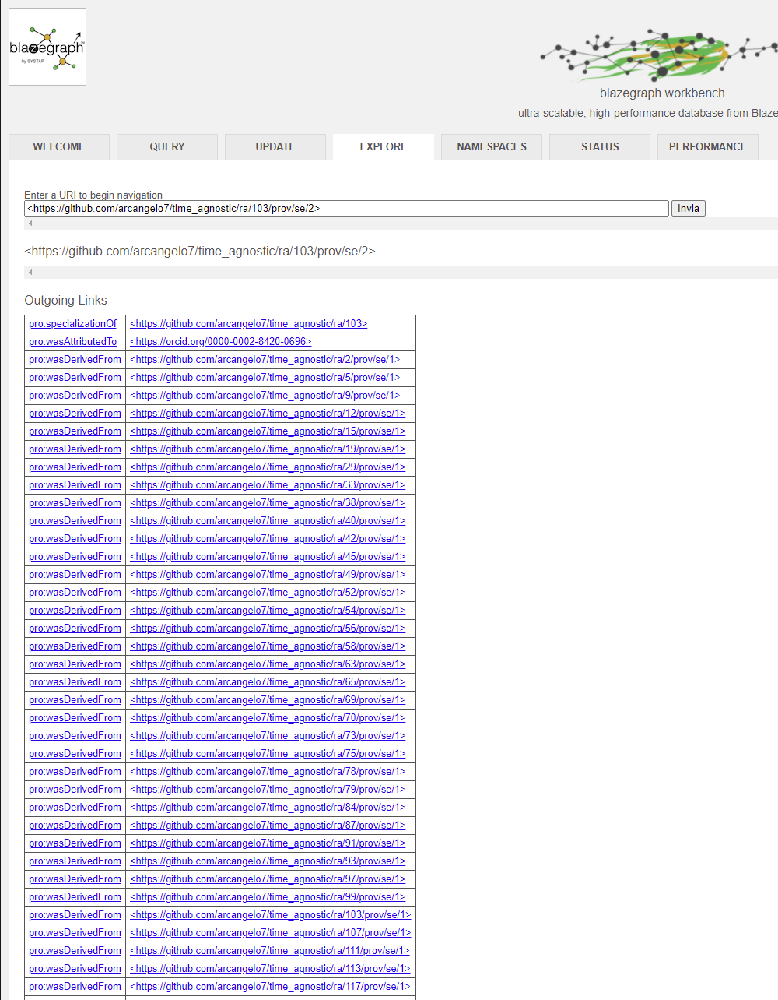
Analizzando il codice della classe ProvSet di oc-ocdm mi sono reso conto che questo comportamento non è un bug, è una feature, perché c'è un'intera funzione dedicata esclusivamente a causarlo, ovvero _get_snapshots_from_merge_list, che viene invocata all'interno del metodo generate_provenance. Ti chiedo quindi se è previsto che questo accada e perché.
- Come faccio a forzare Python a liberare la RAM senza interrompere un processo? Da quello che ho capito,
Python fa questo lavoro da solo tramite il Garbage Collector, che dovrebbe eliminare quegli oggetti con
zero riferimenti. Dato che in Python tutto è un oggetto, ciò significa qualunque tipo di variabile. Ho
letto che è possibile forzare l'intervento del Garbage Collector. In teoria, le seguenti righe di codice
dovrebbero liberare molta RAM.
import gc del graphset del provset gc.collect()Tuttavia, questo non avviene. Come mai? Possibile che la RAM non venga liberata fino a quando non finisce il processo?
- È possibile che un secondo snapshot non abbia query di update?
- La funzione processUpdate del modulo rdflib.plugins.sparql.processor solleva un'eccezione di tipo
RecursionError com messaggio "maximum recursion depth exceeded" nel caso in cui la query di update sia
troppo lunga. È un problema emerso in questo issue del 2015 e mai risolto: https://github.com/RDFLib/rdflib/issues/481/. Inoltre, aumentare il
limite di profondità della ricorsione tramite sys.setrecursionlimit da 1000 a 2000 fa crashare
l'applicativo. Tutti i valori precedenti sollevano l'eccezione RecursionError. Suggerimenti? Opinioni?
Riporto del codice per riprodurre l'errore:
from rdflib import ConjunctiveGraph from rdflib.plugins.sparql.processor import processUpdate cg = ConjunctiveGraph() update_query = """ INSERT DATA { GRAPH <https://github.com/arcangelo7/time_agnostic/br/> { <https://github.com/arcangelo7/time_agnostic/br/15655> <http://purl.org/spar/pro/isDocumentContextFor> <https://github.com/arcangelo7/time_agnostic/ar/2995> . <https://github.com/arcangelo7/time_agnostic/br/15655> <http://purl.org/spar/cito/cites> <https://github.com/arcangelo7/time_agnostic/br/15717> . <https://github.com/arcangelo7/time_agnostic/br/15655> <http://purl.org/vocab/frbr/core#part> <https://github.com/arcangelo7/time_agnostic/be/12885> . <https://github.com/arcangelo7/time_agnostic/br/15655> <http://purl.org/vocab/frbr/core#part> <https://github.com/arcangelo7/time_agnostic/be/12855> . <https://github.com/arcangelo7/time_agnostic/br/15655> <http://purl.org/vocab/frbr/core#part> <https://github.com/arcangelo7/time_agnostic/be/12894> . <https://github.com/arcangelo7/time_agnostic/br/15655> <http://purl.org/vocab/frbr/core#part> <https://github.com/arcangelo7/time_agnostic/be/12833> . <https://github.com/arcangelo7/time_agnostic/br/15655> <http://purl.org/vocab/frbr/core#part> <https://github.com/arcangelo7/time_agnostic/be/12875> . <https://github.com/arcangelo7/time_agnostic/br/15655> <http://purl.org/vocab/frbr/core#part> <https://github.com/arcangelo7/time_agnostic/be/12900> . <https://github.com/arcangelo7/time_agnostic/br/15655> <http://purl.org/dc/terms/title> "Citation histories of scientific publications. The data sources"^^<http://www.w3.org/2001/XMLSchema#string> . <https://github.com/arcangelo7/time_agnostic/br/15655> <http://purl.org/vocab/frbr/core#part> <https://github.com/arcangelo7/time_agnostic/be/12892> . <https://github.com/arcangelo7/time_agnostic/br/15655> <http://purl.org/vocab/frbr/core#part> <https://github.com/arcangelo7/time_agnostic/be/12872> . <https://github.com/arcangelo7/time_agnostic/br/15655> <http://purl.org/spar/cito/cites> <https://github.com/arcangelo7/time_agnostic/br/15713> . <https://github.com/arcangelo7/time_agnostic/br/15655> <http://purl.org/vocab/frbr/core#part> <https://github.com/arcangelo7/time_agnostic/be/12859> . <https://github.com/arcangelo7/time_agnostic/br/15655> <http://purl.org/vocab/frbr/core#part> <https://github.com/arcangelo7/time_agnostic/be/12883> . <https://github.com/arcangelo7/time_agnostic/br/15655> <http://purl.org/spar/cito/cites> <https://github.com/arcangelo7/time_agnostic/br/15665> . <https://github.com/arcangelo7/time_agnostic/br/15655> <http://purl.org/vocab/frbr/core#part> <https://github.com/arcangelo7/time_agnostic/be/12853> . <https://github.com/arcangelo7/time_agnostic/br/15655> <http://purl.org/spar/cito/cites> <https://github.com/arcangelo7/time_agnostic/br/15725> . <https://github.com/arcangelo7/time_agnostic/br/15655> <http://purl.org/vocab/frbr/core#part> <https://github.com/arcangelo7/time_agnostic/be/12870> . <https://github.com/arcangelo7/time_agnostic/br/15655> <http://purl.org/vocab/frbr/core#part> <https://github.com/arcangelo7/time_agnostic/be/12886> . <https://github.com/arcangelo7/time_agnostic/br/15655> <http://purl.org/vocab/frbr/core#part> <https://github.com/arcangelo7/time_agnostic/be/12824> . <https://github.com/arcangelo7/time_agnostic/br/15655> <http://purl.org/spar/cito/cites> <https://github.com/arcangelo7/time_agnostic/br/15723> . <https://github.com/arcangelo7/time_agnostic/br/15655> <http://purl.org/spar/cito/cites> <https://github.com/arcangelo7/time_agnostic/br/15660> . <https://github.com/arcangelo7/time_agnostic/br/15655> <http://purl.org/spar/cito/cites> <https://github.com/arcangelo7/time_agnostic/br/15702> . <https://github.com/arcangelo7/time_agnostic/br/15655> <http://purl.org/vocab/frbr/core#part> <https://github.com/arcangelo7/time_agnostic/be/12823> . <https://github.com/arcangelo7/time_agnostic/br/15655> <http://purl.org/vocab/frbr/core#part> <https://github.com/arcangelo7/time_agnostic/be/12864> . <https://github.com/arcangelo7/time_agnostic/br/15655> <http://purl.org/vocab/frbr/core#part> <https://github.com/arcangelo7/time_agnostic/be/12908> . <https://github.com/arcangelo7/time_agnostic/br/15655> <http://purl.org/vocab/frbr/core#part> <https://github.com/arcangelo7/time_agnostic/be/12917> . <https://github.com/arcangelo7/time_agnostic/br/15655> <http://purl.org/spar/cito/cites> <https://github.com/arcangelo7/time_agnostic/br/15748> . <https://github.com/arcangelo7/time_agnostic/br/15655> <http://purl.org/spar/cito/cites> <https://github.com/arcangelo7/time_agnostic/br/15686> . <https://github.com/arcangelo7/time_agnostic/br/15655> <http://purl.org/vocab/frbr/core#part> <https://github.com/arcangelo7/time_agnostic/be/12916> . <https://github.com/arcangelo7/time_agnostic/br/15655> <http://purl.org/spar/cito/cites> <https://github.com/arcangelo7/time_agnostic/br/15680> . <https://github.com/arcangelo7/time_agnostic/br/15655> <http://purl.org/spar/cito/cites> <https://github.com/arcangelo7/time_agnostic/br/15757> . <https://github.com/arcangelo7/time_agnostic/br/15655> <http://purl.org/spar/cito/cites> <https://github.com/arcangelo7/time_agnostic/br/15678> . <https://github.com/arcangelo7/time_agnostic/br/15655> <http://purl.org/vocab/frbr/core#part> <https://github.com/arcangelo7/time_agnostic/be/12844> . <https://github.com/arcangelo7/time_agnostic/br/15655> <http://purl.org/spar/cito/cites> <https://github.com/arcangelo7/time_agnostic/br/15746> . <https://github.com/arcangelo7/time_agnostic/br/15655> <http://purl.org/vocab/frbr/core#part> <https://github.com/arcangelo7/time_agnostic/be/12862> . <https://github.com/arcangelo7/time_agnostic/br/15655> <http://purl.org/vocab/frbr/core#part> <https://github.com/arcangelo7/time_agnostic/be/12921> . <https://github.com/arcangelo7/time_agnostic/br/15655> <http://purl.org/spar/cito/cites> <https://github.com/arcangelo7/time_agnostic/br/15739> . <https://github.com/arcangelo7/time_agnostic/br/15655> <http://purl.org/vocab/frbr/core#part> <https://github.com/arcangelo7/time_agnostic/be/12888> . <https://github.com/arcangelo7/time_agnostic/br/15655> <http://purl.org/spar/cito/cites> <https://github.com/arcangelo7/time_agnostic/br/15659> . <https://github.com/arcangelo7/time_agnostic/br/15655> <http://purl.org/spar/cito/cites> <https://github.com/arcangelo7/time_agnostic/br/15685> . <https://github.com/arcangelo7/time_agnostic/br/15655> <http://purl.org/vocab/frbr/core#part> <https://github.com/arcangelo7/time_agnostic/be/12832> . <https://github.com/arcangelo7/time_agnostic/br/15655> <http://purl.org/spar/cito/cites> <https://github.com/arcangelo7/time_agnostic/br/15704> . <https://github.com/arcangelo7/time_agnostic/br/15655> <http://purl.org/spar/cito/cites> <https://github.com/arcangelo7/time_agnostic/br/15735> . <https://github.com/arcangelo7/time_agnostic/br/15655> <http://purl.org/vocab/frbr/core#part> <https://github.com/arcangelo7/time_agnostic/be/12831> . <https://github.com/arcangelo7/time_agnostic/br/15655> <http://purl.org/vocab/frbr/core#part> <https://github.com/arcangelo7/time_agnostic/be/12882> . <https://github.com/arcangelo7/time_agnostic/br/15655> <http://purl.org/vocab/frbr/core#part> <https://github.com/arcangelo7/time_agnostic/be/12902> . <https://github.com/arcangelo7/time_agnostic/br/15655> <http://purl.org/spar/cito/cites> <https://github.com/arcangelo7/time_agnostic/br/15756> . <https://github.com/arcangelo7/time_agnostic/br/15655> <http://purl.org/vocab/frbr/core#part> <https://github.com/arcangelo7/time_agnostic/be/12877> . <https://github.com/arcangelo7/time_agnostic/br/15655> <http://purl.org/vocab/frbr/core#part> <https://github.com/arcangelo7/time_agnostic/be/12871> . <https://github.com/arcangelo7/time_agnostic/br/15655> <http://purl.org/spar/cito/cites> <https://github.com/arcangelo7/time_agnostic/br/15692> . <https://github.com/arcangelo7/time_agnostic/br/15655> <http://purl.org/spar/cito/cites> <https://github.com/arcangelo7/time_agnostic/br/15699> . <https://github.com/arcangelo7/time_agnostic/br/15655> <http://purl.org/vocab/frbr/core#part> <https://github.com/arcangelo7/time_agnostic/be/12881> . <https://github.com/arcangelo7/time_agnostic/br/15655> <http://purl.org/vocab/frbr/core#part> <https://github.com/arcangelo7/time_agnostic/be/12889> . <https://github.com/arcangelo7/time_agnostic/br/15655> <http://purl.org/vocab/frbr/core#part> <https://github.com/arcangelo7/time_agnostic/be/12825> . <https://github.com/arcangelo7/time_agnostic/br/15655> <http://purl.org/vocab/frbr/core#part> <https://github.com/arcangelo7/time_agnostic/be/12914> . <https://github.com/arcangelo7/time_agnostic/br/15655> <http://www.w3.org/1999/02/22-rdf-syntax-ns#type> <http://purl.org/spar/fabio/Expression> . <https://github.com/arcangelo7/time_agnostic/br/15655> <http://purl.org/vocab/frbr/core#part> <https://github.com/arcangelo7/time_agnostic/be/12912> . <https://github.com/arcangelo7/time_agnostic/br/15655> <http://purl.org/vocab/frbr/core#part> <https://github.com/arcangelo7/time_agnostic/be/12841> . <https://github.com/arcangelo7/time_agnostic/br/15655> <http://purl.org/vocab/frbr/core#part> <https://github.com/arcangelo7/time_agnostic/be/12913> . <https://github.com/arcangelo7/time_agnostic/br/15655> <http://purl.org/vocab/frbr/core#part> <https://github.com/arcangelo7/time_agnostic/be/12838> . <https://github.com/arcangelo7/time_agnostic/br/15655> <http://purl.org/spar/cito/cites> <https://github.com/arcangelo7/time_agnostic/br/15722> . <https://github.com/arcangelo7/time_agnostic/br/15655> <http://purl.org/spar/cito/cites> <https://github.com/arcangelo7/time_agnostic/br/15721> . <https://github.com/arcangelo7/time_agnostic/br/15655> <http://purl.org/vocab/frbr/core#part> <https://github.com/arcangelo7/time_agnostic/be/12865> . <https://github.com/arcangelo7/time_agnostic/br/15655> <http://purl.org/spar/cito/cites> <https://github.com/arcangelo7/time_agnostic/br/15733> . <https://github.com/arcangelo7/time_agnostic/br/15655> <http://purl.org/spar/cito/cites> <https://github.com/arcangelo7/time_agnostic/br/15726> . <https://github.com/arcangelo7/time_agnostic/br/15655> <http://purl.org/vocab/frbr/core#part> <https://github.com/arcangelo7/time_agnostic/be/12849> . <https://github.com/arcangelo7/time_agnostic/br/15655> <http://purl.org/spar/cito/cites> <https://github.com/arcangelo7/time_agnostic/br/15697> . <https://github.com/arcangelo7/time_agnostic/br/15655> <http://purl.org/vocab/frbr/core#part> <https://github.com/arcangelo7/time_agnostic/be/12884> . <https://github.com/arcangelo7/time_agnostic/br/15655> <http://purl.org/spar/cito/cites> <https://github.com/arcangelo7/time_agnostic/br/15698> . <https://github.com/arcangelo7/time_agnostic/br/15655> <http://purl.org/vocab/frbr/core#part> <https://github.com/arcangelo7/time_agnostic/be/12904> . <https://github.com/arcangelo7/time_agnostic/br/15655> <http://purl.org/spar/cito/cites> <https://github.com/arcangelo7/time_agnostic/br/15701> . <https://github.com/arcangelo7/time_agnostic/br/15655> <http://purl.org/vocab/frbr/core#partOf> <https://github.com/arcangelo7/time_agnostic/br/15657> . <https://github.com/arcangelo7/time_agnostic/br/15655> <http://purl.org/vocab/frbr/core#part> <https://github.com/arcangelo7/time_agnostic/be/12878> . <https://github.com/arcangelo7/time_agnostic/br/15655> <http://purl.org/vocab/frbr/core#part> <https://github.com/arcangelo7/time_agnostic/be/12876> . <https://github.com/arcangelo7/time_agnostic/br/15655> <http://purl.org/spar/cito/cites> <https://github.com/arcangelo7/time_agnostic/br/15681> . <https://github.com/arcangelo7/time_agnostic/br/15655> <http://purl.org/spar/cito/cites> <https://github.com/arcangelo7/time_agnostic/br/15716> . <https://github.com/arcangelo7/time_agnostic/br/15655> <http://purl.org/vocab/frbr/core#part> <https://github.com/arcangelo7/time_agnostic/be/12856> . <https://github.com/arcangelo7/time_agnostic/br/15655> <http://purl.org/spar/cito/cites> <https://github.com/arcangelo7/time_agnostic/br/15740> . <https://github.com/arcangelo7/time_agnostic/br/15655> <http://purl.org/vocab/frbr/core#part> <https://github.com/arcangelo7/time_agnostic/be/12879> . <https://github.com/arcangelo7/time_agnostic/br/15655> <http://purl.org/spar/cito/cites> <https://github.com/arcangelo7/time_agnostic/br/15658> . <https://github.com/arcangelo7/time_agnostic/br/15655> <http://purl.org/spar/cito/cites> <https://github.com/arcangelo7/time_agnostic/br/15719> . <https://github.com/arcangelo7/time_agnostic/br/15655> <http://purl.org/vocab/frbr/core#part> <https://github.com/arcangelo7/time_agnostic/be/12848> . <https://github.com/arcangelo7/time_agnostic/br/15655> <http://purl.org/vocab/frbr/core#part> <https://github.com/arcangelo7/time_agnostic/be/12822> . <https://github.com/arcangelo7/time_agnostic/br/15655> <http://purl.org/spar/cito/cites> <https://github.com/arcangelo7/time_agnostic/br/15693> . <https://github.com/arcangelo7/time_agnostic/br/15655> <http://purl.org/spar/cito/cites> <https://github.com/arcangelo7/time_agnostic/br/15664> . <https://github.com/arcangelo7/time_agnostic/br/15655> <http://purl.org/vocab/frbr/core#part> <https://github.com/arcangelo7/time_agnostic/be/12899> . <https://github.com/arcangelo7/time_agnostic/br/15655> <http://purl.org/vocab/frbr/core#part> <https://github.com/arcangelo7/time_agnostic/be/12905> . <https://github.com/arcangelo7/time_agnostic/br/15655> <http://purl.org/spar/cito/cites> <https://github.com/arcangelo7/time_agnostic/br/15663> . <https://github.com/arcangelo7/time_agnostic/br/15655> <http://purl.org/vocab/frbr/core#part> <https://github.com/arcangelo7/time_agnostic/be/12897> . <https://github.com/arcangelo7/time_agnostic/br/15655> <http://purl.org/vocab/frbr/core#part> <https://github.com/arcangelo7/time_agnostic/be/12827> . <https://github.com/arcangelo7/time_agnostic/br/15655> <http://purl.org/vocab/frbr/core#part> <https://github.com/arcangelo7/time_agnostic/be/12826> . <https://github.com/arcangelo7/time_agnostic/br/15655> <http://purl.org/spar/cito/cites> <https://github.com/arcangelo7/time_agnostic/br/15661> . <https://github.com/arcangelo7/time_agnostic/br/15655> <http://purl.org/spar/cito/cites> <https://github.com/arcangelo7/time_agnostic/br/15676> . <https://github.com/arcangelo7/time_agnostic/br/15655> <http://purl.org/spar/cito/cites> <https://github.com/arcangelo7/time_agnostic/br/15747> . <https://github.com/arcangelo7/time_agnostic/br/15655> <http://purl.org/spar/cito/cites> <https://github.com/arcangelo7/time_agnostic/br/15755> . <https://github.com/arcangelo7/time_agnostic/br/15655> <http://purl.org/spar/cito/cites> <https://github.com/arcangelo7/time_agnostic/br/15668> . <https://github.com/arcangelo7/time_agnostic/br/15655> <http://purl.org/spar/cito/cites> <https://github.com/arcangelo7/time_agnostic/br/15684> . <https://github.com/arcangelo7/time_agnostic/br/15655> <http://purl.org/spar/cito/cites> <https://github.com/arcangelo7/time_agnostic/br/15696> . <https://github.com/arcangelo7/time_agnostic/br/15655> <http://purl.org/spar/cito/cites> <https://github.com/arcangelo7/time_agnostic/br/15734> . <https://github.com/arcangelo7/time_agnostic/br/15655> <http://purl.org/vocab/frbr/core#part> <https://github.com/arcangelo7/time_agnostic/be/12919> . <https://github.com/arcangelo7/time_agnostic/br/15655> <http://purl.org/spar/cito/cites> <https://github.com/arcangelo7/time_agnostic/br/15683> . <https://github.com/arcangelo7/time_agnostic/br/15655> <http://purl.org/vocab/frbr/core#part> <https://github.com/arcangelo7/time_agnostic/be/12866> . <https://github.com/arcangelo7/time_agnostic/br/15655> <http://purl.org/spar/cito/cites> <https://github.com/arcangelo7/time_agnostic/br/15669> . <https://github.com/arcangelo7/time_agnostic/br/15655> <http://purl.org/spar/cito/cites> <https://github.com/arcangelo7/time_agnostic/br/15728> . <https://github.com/arcangelo7/time_agnostic/br/15655> <http://purl.org/vocab/frbr/core#part> <https://github.com/arcangelo7/time_agnostic/be/12911> . <https://github.com/arcangelo7/time_agnostic/br/15655> <http://purl.org/spar/cito/cites> <https://github.com/arcangelo7/time_agnostic/br/15743> . <https://github.com/arcangelo7/time_agnostic/br/15655> <http://purl.org/vocab/frbr/core#part> <https://github.com/arcangelo7/time_agnostic/be/12898> . <https://github.com/arcangelo7/time_agnostic/br/15655> <http://purl.org/spar/cito/cites> <https://github.com/arcangelo7/time_agnostic/br/15750> . <https://github.com/arcangelo7/time_agnostic/br/15655> <http://purl.org/vocab/frbr/core#part> <https://github.com/arcangelo7/time_agnostic/be/12907> . <https://github.com/arcangelo7/time_agnostic/br/15655> <http://purl.org/vocab/frbr/core#part> <https://github.com/arcangelo7/time_agnostic/be/12893> . <https://github.com/arcangelo7/time_agnostic/br/15655> <http://purl.org/spar/cito/cites> <https://github.com/arcangelo7/time_agnostic/br/15712> . <https://github.com/arcangelo7/time_agnostic/br/15655> <http://purl.org/vocab/frbr/core#part> <https://github.com/arcangelo7/time_agnostic/be/12869> . <https://github.com/arcangelo7/time_agnostic/br/15655> <http://purl.org/spar/cito/cites> <https://github.com/arcangelo7/time_agnostic/br/15674> . <https://github.com/arcangelo7/time_agnostic/br/15655> <http://purl.org/vocab/frbr/core#embodiment> <https://github.com/arcangelo7/time_agnostic/re/2015> . <https://github.com/arcangelo7/time_agnostic/br/15655> <http://purl.org/vocab/frbr/core#part> <https://github.com/arcangelo7/time_agnostic/be/12837> . <https://github.com/arcangelo7/time_agnostic/br/15655> <http://purl.org/spar/cito/cites> <https://github.com/arcangelo7/time_agnostic/br/15707> . <https://github.com/arcangelo7/time_agnostic/br/15655> <http://purl.org/spar/cito/cites> <https://github.com/arcangelo7/time_agnostic/br/15662> . <https://github.com/arcangelo7/time_agnostic/br/15655> <http://purl.org/spar/cito/cites> <https://github.com/arcangelo7/time_agnostic/br/15666> . <https://github.com/arcangelo7/time_agnostic/br/15655> <http://purl.org/spar/cito/cites> <https://github.com/arcangelo7/time_agnostic/br/15752> . <https://github.com/arcangelo7/time_agnostic/br/15655> <http://purl.org/vocab/frbr/core#part> <https://github.com/arcangelo7/time_agnostic/be/12920> . <https://github.com/arcangelo7/time_agnostic/br/15655> <http://purl.org/spar/cito/cites> <https://github.com/arcangelo7/time_agnostic/br/15718> . <https://github.com/arcangelo7/time_agnostic/br/15655> <http://purl.org/spar/cito/cites> <https://github.com/arcangelo7/time_agnostic/br/15738> . <https://github.com/arcangelo7/time_agnostic/br/15655> <http://purl.org/spar/cito/cites> <https://github.com/arcangelo7/time_agnostic/br/15753> . <https://github.com/arcangelo7/time_agnostic/br/15655> <http://purl.org/vocab/frbr/core#part> <https://github.com/arcangelo7/time_agnostic/be/12821> . <https://github.com/arcangelo7/time_agnostic/br/15655> <http://purl.org/vocab/frbr/core#part> <https://github.com/arcangelo7/time_agnostic/be/12846> . <https://github.com/arcangelo7/time_agnostic/br/15655> <http://purl.org/spar/cito/cites> <https://github.com/arcangelo7/time_agnostic/br/15689> . <https://github.com/arcangelo7/time_agnostic/br/15655> <http://purl.org/vocab/frbr/core#part> <https://github.com/arcangelo7/time_agnostic/be/12918> . <https://github.com/arcangelo7/time_agnostic/br/15655> <http://purl.org/spar/cito/cites> <https://github.com/arcangelo7/time_agnostic/br/15729> . <https://github.com/arcangelo7/time_agnostic/br/15655> <http://purl.org/vocab/frbr/core#part> <https://github.com/arcangelo7/time_agnostic/be/12903> . <https://github.com/arcangelo7/time_agnostic/br/15655> <http://purl.org/vocab/frbr/core#part> <https://github.com/arcangelo7/time_agnostic/be/12895> . <https://github.com/arcangelo7/time_agnostic/br/15655> <http://purl.org/vocab/frbr/core#part> <https://github.com/arcangelo7/time_agnostic/be/12836> . <https://github.com/arcangelo7/time_agnostic/br/15655> <http://purl.org/vocab/frbr/core#part> <https://github.com/arcangelo7/time_agnostic/be/12851> . <https://github.com/arcangelo7/time_agnostic/br/15655> <http://purl.org/spar/cito/cites> <https://github.com/arcangelo7/time_agnostic/br/15709> . <https://github.com/arcangelo7/time_agnostic/br/15655> <http://purl.org/spar/cito/cites> <https://github.com/arcangelo7/time_agnostic/br/15742> . <https://github.com/arcangelo7/time_agnostic/br/15655> <http://purl.org/vocab/frbr/core#part> <https://github.com/arcangelo7/time_agnostic/be/12861> . <https://github.com/arcangelo7/time_agnostic/br/15655> <http://purl.org/vocab/frbr/core#part> <https://github.com/arcangelo7/time_agnostic/be/12915> . <https://github.com/arcangelo7/time_agnostic/br/15655> <http://purl.org/spar/cito/cites> <https://github.com/arcangelo7/time_agnostic/br/15673> . <https://github.com/arcangelo7/time_agnostic/br/15655> <http://purl.org/spar/cito/cites> <https://github.com/arcangelo7/time_agnostic/br/15679> . <https://github.com/arcangelo7/time_agnostic/br/15655> <http://purl.org/spar/cito/cites> <https://github.com/arcangelo7/time_agnostic/br/15671> . <https://github.com/arcangelo7/time_agnostic/br/15655> <http://purl.org/spar/cito/cites> <https://github.com/arcangelo7/time_agnostic/br/15758> . <https://github.com/arcangelo7/time_agnostic/br/15655> <http://purl.org/spar/cito/cites> <https://github.com/arcangelo7/time_agnostic/br/15751> . <https://github.com/arcangelo7/time_agnostic/br/15655> <http://purl.org/spar/cito/cites> <https://github.com/arcangelo7/time_agnostic/br/15670> . <https://github.com/arcangelo7/time_agnostic/br/15655> <http://purl.org/vocab/frbr/core#part> <https://github.com/arcangelo7/time_agnostic/be/12867> . <https://github.com/arcangelo7/time_agnostic/br/15655> <http://purl.org/spar/cito/cites> <https://github.com/arcangelo7/time_agnostic/br/15691> . <https://github.com/arcangelo7/time_agnostic/br/15655> <http://purl.org/vocab/frbr/core#part> <https://github.com/arcangelo7/time_agnostic/be/12839> . <https://github.com/arcangelo7/time_agnostic/br/15655> <http://purl.org/vocab/frbr/core#part> <https://github.com/arcangelo7/time_agnostic/be/12896> . <https://github.com/arcangelo7/time_agnostic/br/15655> <http://purl.org/spar/cito/cites> <https://github.com/arcangelo7/time_agnostic/br/15675> . <https://github.com/arcangelo7/time_agnostic/br/15655> <http://purl.org/vocab/frbr/core#part> <https://github.com/arcangelo7/time_agnostic/be/12890> . <https://github.com/arcangelo7/time_agnostic/br/15655> <http://purl.org/spar/cito/cites> <https://github.com/arcangelo7/time_agnostic/br/15714> . <https://github.com/arcangelo7/time_agnostic/br/15655> <http://purl.org/vocab/frbr/core#part> <https://github.com/arcangelo7/time_agnostic/be/12842> . <https://github.com/arcangelo7/time_agnostic/br/15655> <http://prismstandard.org/namespaces/basic/2.0/publicationDate> "1985-01-01"^^<http://www.w3.org/2001/XMLSchema#gYear> . <https://github.com/arcangelo7/time_agnostic/br/15655> <http://purl.org/spar/cito/cites> <https://github.com/arcangelo7/time_agnostic/br/15754> . <https://github.com/arcangelo7/time_agnostic/br/15655> <http://purl.org/spar/cito/cites> <https://github.com/arcangelo7/time_agnostic/br/15727> . <https://github.com/arcangelo7/time_agnostic/br/15655> <http://purl.org/spar/cito/cites> <https://github.com/arcangelo7/time_agnostic/br/15688> . <https://github.com/arcangelo7/time_agnostic/br/15655> <http://purl.org/spar/cito/cites> <https://github.com/arcangelo7/time_agnostic/br/15737> . <https://github.com/arcangelo7/time_agnostic/br/15655> <http://purl.org/spar/cito/cites> <https://github.com/arcangelo7/time_agnostic/br/15690> . <https://github.com/arcangelo7/time_agnostic/br/15655> <http://purl.org/vocab/frbr/core#part> <https://github.com/arcangelo7/time_agnostic/be/12834> . <https://github.com/arcangelo7/time_agnostic/br/15655> <http://purl.org/spar/cito/cites> <https://github.com/arcangelo7/time_agnostic/br/15677> . <https://github.com/arcangelo7/time_agnostic/br/15655> <http://purl.org/vocab/frbr/core#part> <https://github.com/arcangelo7/time_agnostic/be/12860> . <https://github.com/arcangelo7/time_agnostic/br/15655> <http://purl.org/vocab/frbr/core#part> <https://github.com/arcangelo7/time_agnostic/be/12828> . <https://github.com/arcangelo7/time_agnostic/br/15655> <http://purl.org/spar/cito/cites> <https://github.com/arcangelo7/time_agnostic/br/15672> . <https://github.com/arcangelo7/time_agnostic/br/15655> <http://purl.org/spar/cito/cites> <https://github.com/arcangelo7/time_agnostic/br/15667> . <https://github.com/arcangelo7/time_agnostic/br/15655> <http://purl.org/spar/cito/cites> <https://github.com/arcangelo7/time_agnostic/br/15695> . <https://github.com/arcangelo7/time_agnostic/br/15655> <http://purl.org/spar/cito/cites> <https://github.com/arcangelo7/time_agnostic/br/15705> . <https://github.com/arcangelo7/time_agnostic/br/15655> <http://purl.org/spar/cito/cites> <https://github.com/arcangelo7/time_agnostic/br/15687> . <https://github.com/arcangelo7/time_agnostic/br/15655> <http://purl.org/vocab/frbr/core#part> <https://github.com/arcangelo7/time_agnostic/be/12857> . <https://github.com/arcangelo7/time_agnostic/br/15655> <http://purl.org/vocab/frbr/core#part> <https://github.com/arcangelo7/time_agnostic/be/12887> . <https://github.com/arcangelo7/time_agnostic/br/15655> <http://purl.org/spar/cito/cites> <https://github.com/arcangelo7/time_agnostic/br/15682> . <https://github.com/arcangelo7/time_agnostic/br/15655> <http://purl.org/vocab/frbr/core#part> <https://github.com/arcangelo7/time_agnostic/be/12847> . <https://github.com/arcangelo7/time_agnostic/br/15655> <http://purl.org/vocab/frbr/core#part> <https://github.com/arcangelo7/time_agnostic/be/12854> . <https://github.com/arcangelo7/time_agnostic/br/15655> <http://purl.org/spar/cito/cites> <https://github.com/arcangelo7/time_agnostic/br/15706> . <https://github.com/arcangelo7/time_agnostic/br/15655> <http://www.w3.org/1999/02/22-rdf-syntax-ns#type> <http://purl.org/spar/fabio/JournalArticle> . <https://github.com/arcangelo7/time_agnostic/br/15655> <http://purl.org/spar/cito/cites> <https://github.com/arcangelo7/time_agnostic/br/15715> . <https://github.com/arcangelo7/time_agnostic/br/15655> <http://purl.org/spar/datacite/hasIdentifier> <https://github.com/arcangelo7/time_agnostic/id/13890> . <https://github.com/arcangelo7/time_agnostic/br/15655> <http://purl.org/spar/cito/cites> <https://github.com/arcangelo7/time_agnostic/br/15736> . <https://github.com/arcangelo7/time_agnostic/br/15655> <http://purl.org/vocab/frbr/core#part> <https://github.com/arcangelo7/time_agnostic/be/12863> . <https://github.com/arcangelo7/time_agnostic/br/15655> <http://purl.org/spar/cito/cites> <https://github.com/arcangelo7/time_agnostic/br/15731> . <https://github.com/arcangelo7/time_agnostic/br/15655> <http://purl.org/spar/cito/cites> <https://github.com/arcangelo7/time_agnostic/br/15703> . <https://github.com/arcangelo7/time_agnostic/br/15655> <http://purl.org/vocab/frbr/core#part> <https://github.com/arcangelo7/time_agnostic/be/12910> . <https://github.com/arcangelo7/time_agnostic/br/15655> <http://purl.org/vocab/frbr/core#part> <https://github.com/arcangelo7/time_agnostic/be/12909> . <https://github.com/arcangelo7/time_agnostic/br/15655> <http://purl.org/spar/cito/cites> <https://github.com/arcangelo7/time_agnostic/br/15749> . <https://github.com/arcangelo7/time_agnostic/br/15655> <http://purl.org/vocab/frbr/core#part> <https://github.com/arcangelo7/time_agnostic/be/12840> . <https://github.com/arcangelo7/time_agnostic/br/15655> <http://purl.org/spar/cito/cites> <https://github.com/arcangelo7/time_agnostic/br/15710> . <https://github.com/arcangelo7/time_agnostic/br/15655> <http://purl.org/vocab/frbr/core#part> <https://github.com/arcangelo7/time_agnostic/be/12829> . <https://github.com/arcangelo7/time_agnostic/br/15655> <http://purl.org/spar/cito/cites> <https://github.com/arcangelo7/time_agnostic/br/15711> . <https://github.com/arcangelo7/time_agnostic/br/15655> <http://purl.org/spar/cito/cites> <https://github.com/arcangelo7/time_agnostic/br/15730> . <https://github.com/arcangelo7/time_agnostic/br/15655> <http://purl.org/vocab/frbr/core#part> <https://github.com/arcangelo7/time_agnostic/be/12891> . <https://github.com/arcangelo7/time_agnostic/br/15655> <http://purl.org/spar/cito/cites> <https://github.com/arcangelo7/time_agnostic/br/15744> . <https://github.com/arcangelo7/time_agnostic/br/15655> <http://purl.org/vocab/frbr/core#part> <https://github.com/arcangelo7/time_agnostic/be/12873> . <https://github.com/arcangelo7/time_agnostic/br/15655> <http://purl.org/spar/cito/cites> <https://github.com/arcangelo7/time_agnostic/br/15700> . <https://github.com/arcangelo7/time_agnostic/br/15655> <http://purl.org/vocab/frbr/core#part> <https://github.com/arcangelo7/time_agnostic/be/12852> . <https://github.com/arcangelo7/time_agnostic/br/15655> <http://purl.org/vocab/frbr/core#part> <https://github.com/arcangelo7/time_agnostic/be/12906> . <https://github.com/arcangelo7/time_agnostic/br/15655> <http://purl.org/spar/cito/cites> <https://github.com/arcangelo7/time_agnostic/br/15732> . <https://github.com/arcangelo7/time_agnostic/br/15655> <http://purl.org/vocab/frbr/core#part> <https://github.com/arcangelo7/time_agnostic/be/12858> . <https://github.com/arcangelo7/time_agnostic/br/15655> <http://purl.org/spar/cito/cites> <https://github.com/arcangelo7/time_agnostic/br/15720> . <https://github.com/arcangelo7/time_agnostic/br/15655> <http://purl.org/spar/cito/cites> <https://github.com/arcangelo7/time_agnostic/br/15724> . <https://github.com/arcangelo7/time_agnostic/br/15655> <http://purl.org/spar/cito/cites> <https://github.com/arcangelo7/time_agnostic/br/15708> . <https://github.com/arcangelo7/time_agnostic/br/15655> <http://purl.org/vocab/frbr/core#part> <https://github.com/arcangelo7/time_agnostic/be/12901> . <https://github.com/arcangelo7/time_agnostic/br/15655> <http://purl.org/vocab/frbr/core#part> <https://github.com/arcangelo7/time_agnostic/be/12880> . <https://github.com/arcangelo7/time_agnostic/br/15655> <http://purl.org/vocab/frbr/core#part> <https://github.com/arcangelo7/time_agnostic/be/12843> . <https://github.com/arcangelo7/time_agnostic/br/15655> <http://purl.org/vocab/frbr/core#part> <https://github.com/arcangelo7/time_agnostic/be/12835> . <https://github.com/arcangelo7/time_agnostic/br/15655> <http://purl.org/vocab/frbr/core#part> <https://github.com/arcangelo7/time_agnostic/be/12830> . <https://github.com/arcangelo7/time_agnostic/br/15655> <http://purl.org/vocab/frbr/core#part> <https://github.com/arcangelo7/time_agnostic/be/12874> . <https://github.com/arcangelo7/time_agnostic/br/15655> <http://purl.org/spar/cito/cites> <https://github.com/arcangelo7/time_agnostic/br/15745> . <https://github.com/arcangelo7/time_agnostic/br/15655> <http://purl.org/spar/cito/cites> <https://github.com/arcangelo7/time_agnostic/br/15694> . <https://github.com/arcangelo7/time_agnostic/br/15655> <http://purl.org/vocab/frbr/core#part> <https://github.com/arcangelo7/time_agnostic/be/12845> . <https://github.com/arcangelo7/time_agnostic/br/15655> <http://purl.org/vocab/frbr/core#part> <https://github.com/arcangelo7/time_agnostic/be/12868> . <https://github.com/arcangelo7/time_agnostic/br/15655> <http://purl.org/vocab/frbr/core#part> <https://github.com/arcangelo7/time_agnostic/be/12850> . <https://github.com/arcangelo7/time_agnostic/br/15655> <http://purl.org/spar/cito/cites> <https://github.com/arcangelo7/time_agnostic/br/15741> .} } """ processUpdate(cg, update_query) - La porzione di libreria finora sviluppata risolve il problema di ricreare un'entità agnostica sul tempo,
ovvero un'entità che contiene informazioni sul suo stato presente e su quelli passati. Ben altro
problema è quello di una query agnostica sul tempo, che non solo ritorna il risultato
in base allo stato corrente del triplestore, ma anche il risultato che ritornerebbe negli stati passati.
Dopo una lunga riflessione, sono giunto alla conclusione provvisoria che l'unico modo per raggiungere
questo risultato sia ricreare gli stati passati del triplestore ed effettuare la query agnostica sul
tempo su ciascuno stato. Per ottenere questo scopo, ho realizzato il seguente algoritmo, che vado prima
a spiegare a parole e di cui mostro successivamente il codice:
- Ottengo i valori temporali di tutti gli snapshots contenenti una query di update, ovvero quante volte il ConjunctiveGraph è cambiato.
- Per ogni valore temporale, ottengo gli URI di tutte le entità che sono cambiate in quel tempo, quindi creo un set contenente questi URI e lo associo allo snapshot in un dizionario.
- Per ogni tempo, per ogni entità cambiata a quel tempo ricostruisco il grafo di quell'entità in quel tempo, quindi sommo tutti i grafi ottenuti: il risultato è il delta tra lo stato del triplestore in quel tempo e quello immediatamente futuro. Infine, associo questo delta al tempo corrispondente in un nuovo dizionario, che ritorno in output.
- Impatto sulla RAM e sulla CPU molto basso, perché vengono processati e immagazzinati soltanto i delta.
- Una volta ottenute le informazioni, eseguire query agnostiche sul tempo diventa un problema triviale.
- A seconda delle dimensioni del dataset e del numero di snapshot, l'operazione può richiedere molto tempo. L'idea è quella di salvare il risultato su file in modo da doverla eseguire una volta sola.
L'algoritmo si chiama "calzino" perché invece di ottenere gli snapshot dalle entità ottiene le entità dagli snapshot, come un calzino che viene rivoltato. Inoltre, l'espressione "rivoltare come un calzino" significa "esaminare minuziosamente per conoscere a fondo", per cui la metafora mi sembrava calzante (scusa il gioco di parole).
from time_agnostic_browser.sparql import Sparql from time_agnostic_browser.prov_entity import ProvEntity from time_agnostic_browser.agnostic_entity import AgnosticEntity def run_the_sock(self): dict_of_snapshots = dict() query_times = f""" SELECT DISTINCT ?time WHERE {{ ?snapshot <{ProvEntity.iri_generated_at_time}> ?time; <{ProvEntity.iri_has_update_query}> ?updateQuery. }} """ times = Sparql().run_select_query(query_times) for time in times: query_entities_at_time = f""" SELECT DISTINCT ?s WHERE {{ ?snapshot <{ProvEntity.iri_generated_at_time}> "{time[0]}"^^<http://www.w3.org/2001/XMLSchema#dateTime>; <{ProvEntity.iri_specialization_of}> ?s. }} """ entities_at_time = Sparql().run_select_query(query_entities_at_time) for entity_at_time in entities_at_time: dict_of_snapshots.setdefault(time[0], set()) dict_of_snapshots[time[0]].add(entity_at_time[0]) sock = dict() for snapshot, set_of_entities in dict_of_snapshots.items(): graph_at_time = ConjunctiveGraph() for entity in set_of_entities: agnostic_entity = AgnosticEntity(res=entity, related_entities_history=False) state_at_time = agnostic_entity.get_state_at_time(time=snapshot, get_hooks=False) for time, state in state_at_time.items(): graph_at_time += state sock[snapshot] = graph_at_time return sockCosa ne pensi? Ti vengono in mente soluzioni alternative che permettano di eseguire query agnostiche sul tempo al volo?
Proposta di modifica a oc-ocdm:
oc-ocdm salva il tempo di generazione degli snapshot in formato %Y-%m-%dT%H:%M:%S, ovvero senza fuso orario. Quando il software verrà usato in tutto il mondo la mancanza del fuso orario sarà un problema, perché l'ordine di generazione degli snapshot è cruciale e la time-zone è un'informazione essenziale per determinare l'ordine, visto che altri corpora potrebbero usare nomenclature diverse da /prov/se/[iterative number]. Per questo motivo, la mia libreria assume che il tempo sia in formato %Y-%m-%dT%H:%M:%S%z. Pensi anche tu che questo debba essere un requisito? Se sì, propongo di modificare il formato del tempo degli snapshot prodotti da oc-ocdm per includere anche il fuso orario.
# Codice attuale
def generate_provenance(self, c_time: float = None) -> None:
time_string: str = '%Y-%m-%dT%H:%M:%S'
if c_time is None:
cur_time: str = datetime.now().strftime(time_string)
else:
cur_time: str = datetime.fromtimestamp(c_time).strftime(time_string)
# Codice modificato
def generate_provenance(self, c_time: float = None) -> None:
time_string: str = '%Y-%m-%dT%H:%M:%S%z' # <- La modifica è qui
if c_time is None:
cur_time: str = datetime.now().strftime(time_string)
else:
cur_time: str = datetime.fromtimestamp(c_time).strftime(time_string)
Cosa ho fatto
Miglioramenti e backtracking sul codice del tirocinio, ovvero bug che ho scoperto mentre cercavo la causa dei due bug discussi ai punti 1 e 2 della sezione Cosa non ho capito, ma che non c'entravano niente coi bug di partenza.
- Si è reso necessario modificare il funzionamento del Knowledge Graph Editor per renderlo compatibile con la versione 6.0.1 di oc-ocdm, che tra le varie novità introduce un safety check sui metodi add_*.
- Quando l'editor modifica o crea una data, utilizza adesso il formato ISO 8601 per funzionare con il metodo has_pub_date di oc-ocdm.
- Risolto un bug in generate_graph e add_coci_data per cui il metodo create_date di oc-ocdm riceveva in input sempre e solo l'anno, scartando eventuali mesi e giorni.
- Il metodo add_coci_data, che aggiunge al dataset le citazioni presenti in COCI ma non in Crossref free, cerca adesso i lavori tramite il tipo fabio:Expression o non più fabio:JournalArticle, dato che la gestione dei tipi è divenuta più sofisticata per considerare anche tutte le altre tipologie di lavori accademici.
- I namespaces richiamati in tutti i metodi della classe DatasetAutoEnhancer sono adesso delle variabili e vengono richiamati dalle proprietà della classe GraphEntity di oc-ocdm.
- È stato rimosso da tutti i metodi un passaggio superfluo per cui il grafo ritornato da SPARQLWrapper settando il formato a RDFXML veniva ulteriormente trasformato in un grafo.
Novità relative al Time Agnostic Browser
- Il metodo get_state_at_time è stato completamente riscritto ed è ora molto più potente. Ecco un elenco delle novità:
- Restituisce solo il conjunctive graph della risorsa al tempo specificato, senza computare i grafi intermedi. Questa magia è frutto di un'ipotesi che vorrei discutere con te e che illustro al punto 3 della sezione Cosa non ho capito.
- Il tempo specificato dall'utente non deve corrispondere precisamente a uno snapshot, può essere qualsiasi tempo. Se mi si chiede in che stato siano i miei baffi alle 13:19 del 06/06/2021, la risposta è che sono rasati anche se non li ho rasati esattamente in quell'istante: allo stesso modo, se un utente chiede lo stato di una risorsa a un certo tempo, viene restituito il grafo corrispondente all'ultima modifica prima di quel tempo.
- Il tempo specificato dall'utente può essere in qualunque formato standardizzato. La funzione parser del modulo dateutile si occupa di ricondurre tutti i formati a delle istanze della classe datetime.datetime.
- Se il parametro get_hooks è False (valore di default) viene ritornato il conjunctive graph della risorsa al tempo specificato. Se è True, viene ritornata una tupla, in cui il primo elemento è il conjunctive graph, mentre il secondo è un dizionario nella forma uri_snapshot:tempo_snapshot, ad esempio:
( <Graph identifier=N2fe380ea28e147249344a79f49647ddf (<class 'rdflib.graph.ConjunctiveGraph'>)>, { 'https://github.com/arcangelo7/time_agnostic/ar/1/prov/se/2': '2021-06-05T18:06:34.000Z', 'https://github.com/arcangelo7/time_agnostic/ar/1/prov/se/3': '2021-06-05T18:06:41.000Z', 'https://github.com/arcangelo7/time_agnostic/ar/1/prov/se/5': '2021-06-05T18:07:00.000Z' } )Gli snapshot nel dizionario sono tutti e soli quelli diversi dallo snapshot di cui è stato ritornato il conjunctive graph. In questo modo, all'utente basta rilanciare la funzione cambiando il tempo per ottenere un nuovo stato.
-
È stato introdotto il metodo _manage_update_queries, che aggira il bug di rdflib discusso al punto in 03/06/2021, Cosa non ho capito, punto 6, ovvero l'errore nella ricorsione in caso di query di update troppo lunghe. La soluzione adottata, come da te suggerito, è stata tagliare la query troppo lunga in query più brevi, soluzione che si è rilevata più complessa del previsto, dato che è proprio la funzione che si occupa di parsare la stringa della query a sollevare l'eccezione RecursionError. Ho quindi parsato autonomamente la query, gestendo anche il caso di query che contengano più query al loro interno, ciascuna delle quali viene ulteriormente suddivisa nel caso sia troppo lunga. Riporto il codice utilizzato:
@classmethod def _manage_update_queries(cls, graph: ConjunctiveGraph, update_query: str) -> None: update_query = update_query.replace("INSERT", "%temp%").replace("DELETE", "INSERT").replace("%temp%", "DELETE") triples_end_pattern = r">\s*\." operations_pattern = r"((?:DELETE|INSERT)\s(?:DATA)\s?{\s?(?:GRAPH)\s?<[\w\W]+?>\s{)" matches = re.split(triples_end_pattern, update_query) # 90 is the maximum number of triples after which recursion error occurs if len(matches) > 90: split_by_operations = re.split(operations_pattern, update_query, re.IGNORECASE) operations = split_by_operations[1::2] for operation in operations: triples = split_by_operations[split_by_operations.index(operation) + 1] operation_and_query = operation + triples matches = re.split(triples_end_pattern, operation_and_query) if len(matches) > 90: matches_left = len(matches) # Remove operation and trailing "} }" matches = [match.replace(operation, "") for match in matches][:-1] while matches_left > 0: cut_update_query = operation + "> .".join(matches[0:90]) + "> .} }" processUpdate(graph, cut_update_query) matches_left -= 90 matches = matches[90:] else: processUpdate(graph, operation_and_query) else: processUpdate(graph, update_query) - run_the_sock si chiama adesso _rebuild_past_graphs, un nome più esplicito. Rispetto a prima, utilizza il predicato pro:wasDerivedFrom per ottenere gli snapshot successivi al primo, dato che, come discusso, la query di update non è sempre presente. È stato inoltre risolto un bug per cui venivano ricreate tutte le entità, comprese quelle presenti, ma non quelle relative agli snapshot di creazione. Il comportamento desiderato è esattamente l'opposto: devono essere ricreati tutti e soli i grafi del passato, ovvero i grafi di entità che nel presente sono diverse rispetto al passato, per occupare meno risorse possibili sia sul disco che sulla RAM. Per la stessa ragione, sono state rimosse da questi grafi le informazioni sulla provenance, che possono essere recuperate dai grafi del presente in qualunque momento.
- Risolto un bug nel metodo _get_tuples_from_triplestores per cui gli elementi nella tupla non rispettavano l'ordine delle variabili nella query, ma l'ordine era casuale.
- Tutti i test sono stati aggiornati e superati.
- La documentazione è stata aggiornata.
- Ho aperto i seguenti issue:
- Ho creato la seguente pull request a oc-ocdm: https://github.com/opencitations/oc_ocdm/pull/16.
- Ho verificato che Sphinx sia compatibile con Read the Docs e lo è oltremodo. Basta configurare lo specifico progetto nella dashboard su readthedocs.org, passando come parametro il percorso del file conf.py, dopodiché la documentazione viene automaticamente ricostruita a ogni modifica.
Cosa non ho capito
-
C'è un problema nelle query di update per quanto riguarda la cancellazione e l'aggiunta di date. Probabilmente è in rdflib e quindi in SPARQLWrapper, ma oc-ocdm non lo gestisce come fa in altri casi. Le date in formato gYearMonth o in formato gYear vengono recuperate dal triplestore e parsate aggiungendo il mese e il giorno mancanti, per cui 2000 diventa 2000-01-01 e 2000-01 diventa parimenti 2000-01-01. Ho scritto del codice utile a riprodurre il problema.
from oc_ocdm.graph import GraphSet from oc_ocdm.prov import ProvSet from oc_ocdm.reader import Reader from oc_ocdm.storer import Storer from oc_ocdm.support import create_date my_graphset = GraphSet("http://dataset_base_iri/", info_dir="./data/info_dir/graph/") my_br = my_graphset.add_br("http://responsible_agent_uri/") date_string = create_date([2020, 5]) my_br.has_pub_date(date_string) my_provset = ProvSet(my_graphset, "http://dataset_base_iri/", info_dir="./data/info_dir/prov/") my_provset.generate_provenance() my_graph_storer = Storer(my_graphset) my_prov_storer = Storer(my_provset) my_graph_storer.upload_all("http://localhost:9999/blazegraph/sparql") my_prov_storer.upload_all("http://localhost:9999/blazegraph/sparql") another_graphset = GraphSet("http://dataset_base_iri/", info_dir="./data/info_dir/graph/") previous_br = Reader.import_entity_from_triplestore( g_set=another_graphset, ts_url="http://localhost:9999/blazegraph/sparql", res=URIRef("http://dataset_base_iri/br/1"), resp_agent="someone") same_date_string = create_date([2020, 5]) previous_br.has_pub_date(same_date_string) another_provset = ProvSet(another_graphset, "http://dataset_base_iri/", info_dir="./data/info_dir/prov/") another_provset.generate_provenance() another_graph_storer = Storer(another_graphset) another_prov_storer = Storer(another_provset) another_graph_storer.upload_all("http://localhost:9999/blazegraph/sparql") another_prov_storer.upload_all("http://localhost:9999/blazegraph/sparql")Quello che succede è che, nonostante la data non sia stata modificata, viene generato un nuovo snapshot con una query di update rivelatoria:
DELETE DATA { GRAPH <http://dataset_base_iri/br/> { <http://dataset_base_iri/br/1> <http://prismstandard.org/namespaces/basic/2.0/publicationDate> "2020-05-01"^^<http://www.w3.org/2001/XMLSchema#gYearMonth> . } }; INSERT DATA { GRAPH <http://dataset_base_iri/br/> { <http://dataset_base_iri/br/1> <http://prismstandard.org/namespaces/basic/2.0/publicationDate> "2020-05"^^<http://www.w3.org/2001/XMLSchema#gYearMonth> . } }Questo bug rompe il time agnostic browser che sto creando, perché DELETE DATA funziona solo se il match è perfetto e, dato che il formato di inserimento e di cancellazione cambiano, il DELETE DATA non funziona mai per le date.
-
C'è un problema nelle query di update per quanto riguarda la cancellazione e l'aggiunta di stringhe, come ad esempio un DOI. Quando la stringa viene cancellata, nella query di update viene riportato il tipo, quando viene aggiunta no. Questo è un problema perché, nel momento in cui vado a invertire la query per recuperare un grafo del passato, l'INSERT DATA diventa DELETE DATA e, senza l'indicazione del tipo, non trova la tripla e non cancella nulla. Riporto prima un esempio di query di update problematica e poi del codice per riprodurre il problema:
DELETE DATA { GRAPH <http://dataset_base_iri/id/> { <http://dataset_base_iri/id/1> <http://www.essepuntato.it/2010/06/literalreification/hasLiteralValue> "10.1007/978-3-319-90698-0_26"^^<http://www.w3.org/2001/XMLSchema#string> . } }; INSERT DATA { GRAPH <http://dataset_base_iri/id/> { <http://dataset_base_iri/id/1> <http://www.essepuntato.it/2010/06/literalreification/hasLiteralValue> "10.1016/j.jplph.2012.09.012" . } }from oc_ocdm.graph import GraphSet from oc_ocdm.prov import ProvSet from oc_ocdm.reader import Reader from oc_ocdm.storer import Storer my_graphset = GraphSet("http://dataset_base_iri/", info_dir="./data/info_dir/graph/") my_id = my_graphset.add_id("http://responsible_agent_uri/") my_id.create_doi("10.1007/978-3-319-90698-0_26") my_provset = ProvSet(my_graphset, "http://dataset_base_iri/", info_dir="./data/info_dir/prov/") my_provset.generate_provenance() my_graph_storer = Storer(my_graphset) my_prov_storer = Storer(my_provset) my_graph_storer.upload_all("http://localhost:9999/blazegraph/sparql") my_prov_storer.upload_all("http://localhost:9999/blazegraph/sparql") another_graphset = GraphSet("http://dataset_base_iri/", info_dir="./data/info_dir/graph/") previous_id = Reader.import_entity_from_triplestore( g_set=another_graphset, ts_url="http://localhost:9999/blazegraph/sparql", res=URIRef("http://dataset_base_iri/id/1"), resp_agent="someone") previous_id.remove_identifier_with_scheme() previous_id.create_doi("10.1016/j.jplph.2012.09.012") another_provset = ProvSet(another_graphset, "http://dataset_base_iri/", info_dir="./data/info_dir/prov/") another_provset.generate_provenance() another_graph_storer = Storer(another_graphset) another_prov_storer = Storer(another_provset) another_graph_storer.upload_all("http://localhost:9999/blazegraph/sparql") another_prov_storer.upload_all("http://localhost:9999/blazegraph/sparql") - Durante lo scorso incontro mi hai chiesto di modificare get_state_at_time in modo che restituisca solo il grafo al tempo t, senza calcolare quelli precedenti e successivi. Dopo aver studiato il problema mi sono reso conto che non è possibile ottenere il grafo al tempo t senza calcolare quelli successivi. Infatti, per ottenere il grafo al tempo t-2 ho bisogno del grafo al tempo t-1 e così via. Tuttavia, ho elaborato un'ipotesi che per il momento non sono riuscito a confutare, ovvero che sia possibile ottenere il grafo al tempo t-n sommando nel giusto ordine le stringhe delle query di update inverse da t a t-n+1. Dato che le varie operazioni vengono eseguite in maniera sequenziale, il grafo finale è finora risultato sempre corretto. Hai ragione di credere che non sia così?
Cosa ho fatto
- Tutti i metodi add_* di oc-ocdm utilizzati specificano adesso la fonte, ovvero Crossref.
- La funzione _hack_dates è stata introdotta ovunque ci sia un parsing ad opera di rdflib.
- Risolto un bug in _get_tuples_from_triplestores per cui il metodo crashava se la query conteneva un OPTIONAL. Ora il metodo ritorna tuple sempre della stessa lunghezza. In caso di valori opzionali mancanti, il valore inserito nella tupla è None.
- Risolti dei bug in _manage_update_queries per cui la funzione crashava in presenza di più INSERT DATA o più DELETE DATA in una stessa query di update.
- Novità relative a get_state_at_time:
- Il metodo ritorna sempre una tupla di tre elementi: il primo è il conjunctive graph della risorsa a quel tempo, il secondo sono i metadati sullo snapshot di cui è stato ritornato lo stato. Se il parametro get_hooks è True, il terzo elemento della tupla sono i metadati sugli altri snapshot, altrimenti un dizionario vuoto. Logica vuole che il terzo dizionario sia vuoto anche nel caso in cui esista un solo snapshot.
- I metadati sugli snapshot comprendono il tempo di generazione, l'agente responsabile e la fonte primaria.
- Ecco un esempio di possibile output:
( <Graph identifier=N75add58bd55b4d9f88082787e3e2c888 (<class 'rdflib.graph.ConjunctiveGraph'>)>, { 'https://github.com/arcangelo7/time_agnostic/id/1/prov/se/2': { 'http://www.w3.org/ns/prov#generatedAtTime': '2021-06-04T09:36:53.000Z', 'http://www.w3.org/ns/prov#hadPrimarySource': 'https://www.crossref.org/', 'http://www.w3.org/ns/prov#wasAttributedTo': 'https://orcid.org/0000-0002-8420-0696' } }, { 'https://github.com/arcangelo7/time_agnostic/id/1/prov/se/1': { 'http://www.w3.org/ns/prov#generatedAtTime': '2021-05-29T16:20:22.000Z', 'http://www.w3.org/ns/prov#hadPrimarySource': 'https://www.crossref.org/', 'http://www.w3.org/ns/prov#wasAttributedTo': 'https://orcid.org/0000-0002-8420-0696' }, 'https://github.com/arcangelo7/time_agnostic/id/1/prov/se/3': { 'http://www.w3.org/ns/prov#generatedAtTime': '2021-06-04T11:15:32.000Z', 'http://www.w3.org/ns/prov#hadPrimarySource': 'https://www.crossref.org/', 'http://www.w3.org/ns/prov#wasAttributedTo': 'https://orcid.org/0000-0002-8420-0696' } } ) - Risolto un bug per cui non veniva ritornato lo snapshot di creazione, in quanto privo di query di update.
- Il principale problema affrontato questa settimana ha riguardato la possibilità di effettuare query agnostiche sul tempo. Il problema è stato risolto, ma la soluzione trovata è un'arma di distruzione di hardware, come viene discusso al punto 5 della sezione Cosa non ho capito. Il codice completo può essere visionato su GitHub, mentre in questo paragrafo viene illustrato in dettaglio il procedimento adottato:
- La classe AgnosticQuery si istanzia passando come argomenti la posizione dei grafi del passato, la destinazione in cui salvarli nel caso non esistano, e la stringa di query. Se i grafi del passato non esistono, vengono automaticamente ricreati.
- È possibile passare come posizione e come destinazione dei grafi sia un percorso che un URL. Se viene passato un percorso i grafi vengono recuperati / salvati su un file JSON; se viene passato un URL i grafi vengono recuperati / salvati su un triplestore.
- Il metodo _rebuild_past_graphs viene lanciato automaticamente nel caso in cui l'utente non abbia specificato la posizione dei grafi del passato. La ricostruzione avviene in due passaggi: prima vengono ricostruiti i delta, poi i dataset interi a partire dai delta.
- Il metodo per ricostruire i delta, _rebuild_deltas, è il medesimo già discusso in 03/06/2021, Cosa non ho capito, punto 7.
- Il metodo per ricostruire i dataset del passato completi, _complete_past_graphs, è la vera arma di distruzione di hardware, perché richiede di recuperare l'intero dataset presente. A partire da esso, ricostruisce quelli passati nel giusto ordine, cancellando i preexisting graph delle entità di cui sono stati trovati dei delta e sostituendoli con i delta stessi.
- Il metodo _save_past_graphs, infine, salva i grafi del passato o su file o su triplestore.
- I conjunctive graph del passato vengono denominati tramite un URI che ha la forma "https://time_agnostic_browser/[snapshot_generation_time]". Inoltre a ciascuno di questi URI viene associata la data di generazione tramite predicato dcterms:date. Dopodiché, tutti i conjunctive graph del passato così denominati vengono uniti in un unico conjunctive graph.
- Infine, se la destinazione è un triplestore, il metodo genera la stringa di update ed effettua la query, mentre se la destinazione è un file, serializza il conjunctive graph in formato json-ld e lo salva.
- Nessuno dei precedenti metodi è esposto all'utente. L'unico metodo esposto all'utente di questa classe è run_agnostic_query, che lancia una query su ogni stato della conoscenza presente e passata. L'output è un dizionario, in cui le chiavi sono gli snapshot esistenti, mentre i valori sono set di tuple contenenti i risultati di quella query a quel tempo.
- Se la posizione dei grafi del passati è un URI, la query viene effettuata su un triplestore. Prima vengono recuperati tutti i grafi i cui URI hanno una proprietà dcterms:date. Dopodiché, la query viene effettuata cu ciascuno di essi, modificando la query dell'utente e aggiungendo "FROM [URI_del_grafo_passato]" prima del WHERE.
- Se la posizione dei grafi del passati è un percorso, la query viene effettuata su un file. Il contenuto del file viene parsato in un conjunctive graph, vengono recuperati i contesti esistenti e su ciascuno viene effettuata la query dell'utente, senza modificarla.
- La classe AgnosticQuery si istanzia passando come argomenti la posizione dei grafi del passato, la destinazione in cui salvarli nel caso non esistano, e la stringa di query. Se i grafi del passato non esistono, vengono automaticamente ricreati.
- Ho iniziato a disegnare l'interfaccia del Time Agnostic Browser.
Cosa non ho capito
- Ho scoperto che il problema discusso in 09/06/2021, Cosa non ho capito, punto 2 è causato da Blazegraph, perché non si verifica lavorando su file. Come faccio a configurare Blazegraph in modo che non aggiunga dei datatype che prima non c'erano?
- Qual è il modo migliore per lanciare Blazegraph da Python?
- Se voglio indicare Crossref come fonte primaria di uno snapshot, come lo indico? Immagino che l'URL "https://www.crossref.org/" non sia appropriato.
- Ha senso specificare la fonte primaria dello snapshot in caso di merge tra due entità?
-
Parliamo adesso della madre di tutti i problemi, ovvero le query agnostiche sul tempo. Dopo essere giunto alla conclusione che per effettuare una query agnostica sul tempo il presente non basti, ho esplorato la possibilità di effettuarla ricostruendo tutti i delta del passato.
L'idea era quella di ottenere i dataset per ogni snapshot al volo, a partire dai delta e dallo stato presente del dataset, utilizzando un meccanismo simile a quello di Git, ma con l'asse temporale invertito: Ogni volta che si fa un commit, Git scatta una foto di come appaiono tutti i file in quel momento e memorizza un riferimento a quell'istantanea. Se i file non sono cambiati, Git non memorizza nuovamente il file, ma solo un link al precedente file identico che ha già memorizzato. Invertendo l'asse temporale, se un'entità passata è diversa da quella nello snapshot immediatamente successivo, l'entità passata viene ricostruita e salvata; se non è diversa, viene recuperato lo stato immediatamente successivo della risorsa, senza creare copie.
Purtroppo, ad oggi non sono riuscito a replicare questo meccanismo e il codice che ho scritto ricrea i dataset per intero, quindi è impraticabile per dataset con milioni o miliardi di triple. Come faccio a replicare questo meccanismo?
Cosa ho fatto
- Il problema delle query agnostiche sul tempo è stato risolto ed è adesso possibile effettuare un considerevole numero di query a una velocità impensabile fino alla settimana scorsa. Per dare un'idea, effettuare una query agnostica su un triplestore con oltre 2 milioni di triple, 27 snapshot con in media 20,000 entità modificate a snapshot richiedeva circa 24 ore. Ora occorrono pochi istanti.
- Sono state testate con successo le seguenti query agnostiche sul tempo, ordinate dalla più semplice alla più complessa:
PREFIX pro: <http://purl.org/spar/pro/> PREFIX rdf: <http://www.w3.org/1999/02/22-rdf-syntax-ns#> SELECT DISTINCT ?o WHERE { <https://github.com/arcangelo7/time_agnostic/ar/15519> pro:isHeldBy ?o; rdf:type pro:RoleInTime. }PREFIX pro: <http://purl.org/spar/pro/> PREFIX rdf: <http://www.w3.org/1999/02/22-rdf-syntax-ns#> SELECT ?o WHERE { <https://github.com/arcangelo7/time_agnostic/ar/15519> pro:isHeldBy ?o. OPTIONAL {<https://github.com/arcangelo7/time_agnostic/ar/4> rdf:type pro:RoleInTime.} }PREFIX literal: <http://www.essepuntato.it/2010/06/literalreification/> PREFIX datacite: <http://purl.org/spar/datacite/> PREFIX pro: <http://purl.org/spar/pro/> PREFIX rdf: <http://www.w3.org/1999/02/22-rdf-syntax-ns#> SELECT DISTINCT ?o ?id ?value WHERE { <https://github.com/arcangelo7/time_agnostic/ar/15519> pro:isHeldBy ?o. OPTIONAL {<https://github.com/arcangelo7/time_agnostic/ar/15519> rdf:type pro:RoleInTime.} ?o datacite:hasIdentifier ?id. ?id literal:hasLiteralValue ?value. } - L'algoritmo adottato per effettuare query agnostiche sul tempo in maniera veloce verrà adesso illustrato nel dettaglio e accompagnato dal relativo codice. È inoltre possibile visionare il codice su GitHub.
- La classe AgnosticQuery viene istanziata passando come argomento una query.
- Al momento dell'inizializzazione, la query viene processata. Vengono anzitutto estrapolate le triple, sfruttando il metodo prepareQuery del processor di rdflib. Dal risultato, è possibile ricavare l'algebra della query. Per ottenere le triple dall'algebra occorre navigarne l'albero in maniera ricorsiva fino a trovare i valori delle chiavi "triples". In questo modo è possibile gestire qualunque struttura dell'albero, la cui variabilità è notevole a seconda della query.
- Il metodo _process_query si occupa infine di sollevare un'eccezione ValueError nel caso in cui la query dell'utente non sia valutabile, argomento che viene approfondito al punto 1 della sezione Cosa non ho capito.
def _process_query(self) -> List[Tuple]: algebra:CompValue = prepareQuery(self.query).algebra if algebra.name != "SelectQuery": raise ValueError("Only SELECT queries are allowed.") triples = list() # The algebra can be extremely variable in case of one or more OPTIONAL in the query: # it is necessary to navigate the dictionary recursively in search of the values of the "triples" keys. self._tree_traverse(algebra, "triples", triples) triples_with_hook = [triple for triple in triples if isinstance(triple[0], URIRef) or isinstance(triple[2], URIRef)] if not triples_with_hook: raise ValueError("Could not perform a generic time agnostic query. Please, specify at least one subject entity within the query.") triples_with_subject = [triple for triple in triples_with_hook if isinstance(triple[0], URIRef)] if not triples_with_subject: raise ValueError("Specify at least one subject.") triples_with_path = [triple for triple in triples_with_hook if isinstance(triple[1], Path)] if triples_with_path: raise ValueError("Cannot evaluate time agnostic queries containing paths.") return triples def _tree_traverse(self, tree:dict, key:str, values:List[Tuple]) -> None: for k, v in tree.items(): if k == key: values.extend(v) elif isinstance(v, dict): found = self._tree_traverse(v, key, values) if found is not None: values.extend(found) - A partire dalle triple viene ricostruita la storia delle entità rilevanti tramite il metodo _rebuild_relevant_graphs, in due passaggi: prima vengono ricostruiti i grafi del passato delle entità esplicite nella query, poi vengono ricostruiti anche i grafi delle entità ricavate esplicitando le variabili nella query.
- Il metodo _rebuild_relevant_entity si occupa appunto di ricostruire la storia di un'entità, verificando che sia effettivamente un'entità, che non sia già stata ricostruita e infine che l'entità sia mai esistita nel dataset.
- Infine, _align_snapshots allinea gli snapshots di tutte le entità ricostruite. Prima unisce i grafi delle entità basandosi sugli snapshots, dopodiché copia le entità che non sono cambiate se si verificano le seguenti condizioni:
- l'entità è presente in tn-1 ma non in tn;
- l'entità è assente in tn perché non è cambiata e non perché è stata cancellata.
def _rebuild_relevant_graphs(self) -> None: # First, the graphs of the hooks are reconstructed for triple in self.triples: self._rebuild_relevant_entity(triple[0]) self._rebuild_relevant_entity(triple[2]) self._align_snapshots() # Then, the graphs of the entities obtained from the hooks are reconstructed self._solve_variables() def _rebuild_relevant_entity(self, entity:Union[URIRef, Literal]): if isinstance(entity, URIRef) and entity not in self.reconstructed_entities: agnostic_entity = AgnosticEntity(entity, False) entity_history = agnostic_entity.get_history() if entity_history[entity]: self.relevant_entities_graphs.update(entity_history) self.reconstructed_entities.add(entity) def _align_snapshots(self) -> None: # Merge entities based on snapshots for _, snapshots in self.relevant_entities_graphs.items(): for snapshot, graph in snapshots.items(): if snapshot in self.relevant_graphs: for quad in graph.quads(): self.relevant_graphs[snapshot].add(quad) else: self.relevant_graphs[snapshot] = deepcopy(graph) # If an entity hasn't changed, copy it ordered_data: List[Tuple[str, ConjunctiveGraph]] = sorted( self.relevant_graphs.items(), key=lambda x: parser.parse(x[0]), reverse=False # That is, from past to present, assuming that the past influences the present and not the opposite like in Dark ) for index, se_cg in enumerate(ordered_data): se = se_cg[0] cg = se_cg[1] if index > 0: previous_se = ordered_data[index-1][0] for subject in self.relevant_graphs[previous_se].subjects(): # To copy the entity two conditions must be met: # 1) the entity is present in tn but not in tn+1; # 2) the entity is absent in tn+1 because it has not changed # and not because it has been deleted. if (subject, None, None, None) not in cg: if subject in self.relevant_entities_graphs: if se not in self.relevant_entities_graphs[subject]: for quad in self.relevant_graphs[previous_se].quads((subject, None, None, None)): self.relevant_graphs[se].add(quad) - Il metodo _solve_variables si occupa di ricostuire i grafi delle entità che nella query appaiono come variabili, declinati nei vari tempi.
- _get_vars_to_explicit_by_time, basandosi sui grafi degli hooks e sulle triple estrapolate dalla query, genera il dizionario self.vars_to_explicit_by_time, in cui agli snapshots vengono associati dei dizionari che hanno come chiavi le variabili della query e come valore le triple in cui quelle variabili compaiono.
- _explicit_solvable_variables si occupa appunto di esplicitare le variabili nelle triple del dizionario precedentemente generato e, contemporaneamente, di aggiornare la proprietà self.relevant_graphs con i grafi ricostruiti delle entità nel frattempo esplicitate.
- Infine, _update_vars_to_explicit aggiorna il dizionario self.vars_to_explicit_by_time sostituendo alle variabili gli URI scoperti, così da poter ripetere il ciclo finché non vengono scoperti tutti.
def _solve_variables(self) -> None: runs = self._get_vars_to_explicit_by_time() while runs: solved_variables = self._explicit_solvable_variables() if not solved_variables: return self._update_vars_to_explicit(solved_variables) runs -= 1 def _get_vars_to_explicit_by_time(self) -> int: number_of_vars = set() for se, _ in self.relevant_graphs.items(): self.vars_to_explicit_by_time[se] = dict() for triple in self.triples: variables = [el for el in triple if isinstance(el, Variable)] number_of_vars.update(variables) for variable in variables: self.vars_to_explicit_by_time[se].setdefault(variable, list()) self.vars_to_explicit_by_time[se][variable].append(triple) return len(number_of_vars) def _explicit_solvable_variables(self) -> Dict[str, Dict[str, str]]: explicit_triples:Dict[str, Dict[str, str]] = dict() for se, vars in self.vars_to_explicit_by_time.items(): for var, triples in vars.items(): for triple in triples: solvable_triple = [el.n3() for el in triple] variables = [x for x in solvable_triple if x.startswith("?")] if len(variables) == 1: variable = variables[0] variable_index = solvable_triple.index(variable) query_to_identify = f""" CONSTRUCT {{{solvable_triple[0]} {solvable_triple[1]} {solvable_triple[2]}}} WHERE {{{solvable_triple[0]} {solvable_triple[1]} {solvable_triple[2]}}} """ results = self.relevant_graphs[se].query(query_to_identify) for result in results: explicit_var = result[variable_index] explicit_triples.setdefault(se, dict()) explicit_triples[se][var] = explicit_var self._rebuild_relevant_entity(explicit_var) self._align_snapshots() return explicit_triples def _update_vars_to_explicit(self, solved_variables:Dict[str, Dict[str, str]]) -> None: for se, vars in self.vars_to_explicit_by_time.items(): for var, triples in vars.items(): for triple in triples: for explicit_var, explicit_el in solved_variables[se].items(): new_triple = tuple(explicit_el if el == explicit_var else el for el in triple) new_list_of_triples = [new_triple if x == triple else x for x in self.vars_to_explicit_by_time[se][var]] self.vars_to_explicit_by_time[se][var] = new_list_of_triples - Una volta che i grafi rilevanti per risolvere la query sono stati ricostruiti, effettuare la query agnostica sul tempo diventa un problema triviale: run_agnostic_query cicla su tutti gli snapshot e su tutti i grafi ricostruiti e restituisce un dizionario in cui a ciascuno snapshot sono associati i set di tuple corrispondenti al risultato di quella query in quel tempo.
def run_agnostic_query(self) -> Dict[str, Set[Tuple]]: agnostic_result = dict() for snapshot, graph in self.relevant_graphs.items(): results = graph.query(self.query) output = set() for result in results: result_tuple = tuple(str(var) for var in result) output.add(result_tuple) agnostic_result[snapshot] = output return agnostic_result
Cosa non ho capito
- Ci sono query agnostiche che non è possibile effettuare con l'approccio adottato, ovvero le seguenti tre categorie di query:
- Query che non specificano alcun URI come soggetto o oggetto.
- Query in cui gli URI specificati sono solo oggetti. Occorrerebbe ricostruire tutte le entità del dataset per scoprire quali entità hanno avuto quell'oggetto nel passato.
- Query in cui sono presenti dei path. Quest'ultimo caso richiede un discorso a parte e viene affrontato nel prossimo punto.
Ritieni che la libreria debba supportare anche queste tre tipologie di query? Se no, la libreria solleva già dei ValueError. Se sì, mi piacerebbe discutere il come.
- Discutiamo il come relativo alle property paths. Esistono cinque tipi di property paths: sequence path, alternative path, multiple path, inverse path e negated path (https://www.w3.org/2009/sparql/docs/property-paths/Overview.xml):
- Una sequence path ha la forma elt1 / elt2, dove elt è un elemento del path. È il caso più semplice e può essere risolto riscrivendo la query aggiungendo delle variabili placeholder tra un elemento del path e l'altro. In questo modo:
PREFIX literal: <http://www.essepuntato.it/2010/06/literalreification/> PREFIX datacite: <http://purl.org/spar/datacite/> PREFIX pro: <http://purl.org/spar/pro/> SELECT DISTINCT ?value WHERE { <https://github.com/arcangelo7/time_agnostic/ar/15519> pro:isHeldBy/datacite:hasIdentifier/literal:hasLiteralValue ?value. } # La precedente query può essere riscritta come: SELECT DISTINCT ?value WHERE { <https://github.com/arcangelo7/time_agnostic/ar/15519> pro:isHeldBy ?a. ?a datacite:hasIdentifier ?b. ?b literal:hasLiteralValue ?value. } - Una multiple path ha la forma elt* o elt+ o elt? o elt{n,m} o elt{n} o elt{n,} o elt{,n}. Questo caso è simile al precedente, con la differenza che il numero di variabili placeholder da inserire non è noto. Una soluzione potrebbe essere inserire variabili placeholder in maniera progressiva, risolverle, ricostruire le relative entità e continuare questo processo finché il CONSTRUCT ricavato dalla query dell'utente non porta a identificare un'entità concreta.
Problema: cosa succede se non è possibile risolvere tutte le variabili perché la query è sbagliata? Con quale criterio si evita il loop infinito?
- Un'alternative path ha la forma elt1 | elt2. Una soluzione potrebbe essere quella di valutare tutte le possibili alternative e di ricostruire tutte le entità così ottenute.
- Un'inverse path ha la forma ^elt. L'inverse path trasforma il soggetto in oggetto e genera un caso riconducibile a quello già discusso al punto 1.2 di questa sezione, per il quale non vedo soluzioni che non siano ricostruire tutti i dataset del passato.
- Una negated path ha la forma !uri o !(uri1|...|urin). Questo caso non sembra costituire alcun problema. Tutti gli oggetti collegati a un soggetto noto da URI diversi da quelli negati vengono ricostruiti.
- Una sequence path ha la forma elt1 / elt2, dove elt è un elemento del path. È il caso più semplice e può essere risolto riscrivendo la query aggiungendo delle variabili placeholder tra un elemento del path e l'altro. In questo modo:
-
C'è un altro problema collegato alle property path e cioè che queste possono essere combinate tra di loro. La priorità con cui vengono valutate è la seguente, dalla più alta alla più bassa: negated path, multiple path, inverse path, sequence path, alternative path (https://www.w3.org/2009/sparql/docs/property-paths/Overview.xml). Tuttavia, poiché lo scopo nel parsare la query non è quello di valutarla ma quello di estrapolare le entità rilevanti, non sembra necessario rispettare tale priorità, di cui già si occupano rdflib e il triplestore.
Poniamo il seguente caso, che comprende una sequence path e una multiple path.
PREFIX fabio: <http://purl.org/spar/fabio/> PREFIX datacite: <http://purl.org/spar/datacite/> PREFIX frbr: <http://purl.org/vocab/frbr/core#> PREFIX literal: <http://www.essepuntato.it/2010/06/literalreification/> PREFIX cito: <http://purl.org/spar/cito/> SELECT DISTINCT ?citingDOI ?citedDOI WHERE { ?res a fabio:Expression; datacite:hasIdentifier ?doiEntity; frbr:partOf+/datacite:hasIdentifier/literal:hasLiteralValue "0138-9130". ?doiEntity literal:hasLiteralValue ?citingDOI. OPTIONAL { ?res cito:cites/datacite:hasIdentifier/literal:hasLiteralValue ?citedDOI. } } # Può essere riscritta come SELECT DISTINCT ?citingDOI ?citedDOI WHERE { ?res a fabio:Expression; datacite:hasIdentifier ?doiEntity; frbr:partOf ?a ?a datacite:hasIdentifier ?b. ?b literal:hasLiteralValue "0138-9130". ?doiEntity literal:hasLiteralValue ?citingDOI. OPTIONAL { ?res cito:cites ?c. ?c datacite:hasIdentifier ?d. ?d literal:hasLiteralValue ?citedDOI. } } # Nel caso in cui il CONSTRUCT ricavato dalla query # non porti alla risoluzione di tutte le variabili, # la query viene ulteriormente riscritta nel seguente modo: SELECT DISTINCT ?citingDOI ?citedDOI WHERE { ?res a fabio:Expression; datacite:hasIdentifier ?doiEntity; frbr:partOf ?a1. ?a1 frbr:partOf ?a. ?a datacite:hasIdentifier ?b. ?b literal:hasLiteralValue "0138-9130". ?doiEntity literal:hasLiteralValue ?citingDOI. OPTIONAL { ?res cito:cites ?c. ?c datacite:hasIdentifier ?d. ?d literal:hasLiteralValue ?citedDOI. } } # E così via finché non vengono risolte tutte le variabiliCosa ne pensi di questo ragionamento?
- Per quanto riguarda l'interfaccia del browser, vorrei discutere un aspetto di usabilità che potrebbe andare a discapito della sua genericità: se voglio mostrare all'utente dei metadati human comprehensible e non delle triple devo tradurre gli URI in inglese. Questa operazione è però specifica per l'OpenCitations Data Model, non è generica. Cosa ne pensi?
- È ora possibile effettuare query agnostiche sul tempo contenenti triple isolate. Una tripla è isolata quando si verificano le seguenti condizioni:
- La tripla contiene una variabile in luogo di soggetto.
- La variabile del soggetto non compare come oggetto in nessun'altra tripla della query.
- Il metodo _is_isolated si occupa di verificare se una tripla è isolata o meno, con il seguente codice:
def _is_isolated(self, triple:tuple) -> bool: if isinstance(triple[2], Variable) and isinstance(triple[0], URIRef): return False variables = [el for el in triple if isinstance(el, Variable)] if not variables: return False for variable in variables: other_triples = {t for t in self.triples if t != triple} for other_triple in other_triples: if variable in other_triple and other_triple.index(variable) == 2: return False return True - Tutte e sole le triple isolate vengono processate separatamente in due passaggi:
- Prima vengono identificate le entità rilevanti nel presente, che potrebbero non comparire in nessuna query di update nel caso in cui non abbiano mai subito modifiche.
- Dopodiché vengono ricercate le entità rilevanti nelle query di update. Se ne occupa il metodo _find_entities_in_update_queries, con il seguente codice:
def _find_entities_in_update_queries(self, triple:tuple): uris_in_triple = {el for el in triple if isinstance(el, URIRef)} relevant_entities_found = set() query_to_identify = f""" PREFIX oco: <https://w3id.org/oc/ontology/> PREFIX prov: <http://www.w3.org/ns/prov#> SELECT DISTINCT ?updateQuery WHERE {{ ?snapshot oco:hasUpdateQuery ?updateQuery. """ for uri in uris_in_triple: if triple.index(uri) == 0 or triple.index(uri) == 2: self._rebuild_relevant_entity(uri) query_to_identify += f"FILTER CONTAINS (?updateQuery, '<{uri}>')" query_to_identify += "}" results = Sparql(query_to_identify).run_select_query() pbar = tqdm(total=len(results)) print(f"[AgnosticQuery:INFO] Searching for relevant entities in relevant update queries.") for result in results: try: update = parseUpdate(result[0]) for request in update["request"]: for quadsNotTriples in request["quads"]["quadsNotTriples"]: for triple in quadsNotTriples["triples"]: triple = [el["string"] if "string" in el else el for el in triple] relevant_entities = (set(triple).difference(uris_in_triple) if len(uris_in_triple.intersection(triple)) == len(uris_in_triple) else None) if relevant_entities is not None: relevant_entities_found.update(relevant_entities) pbar.update(1) except RecursionError: # print(f"[AgnosticQuery:INFO] The following update query raised a RecursionError: {result[0]}") pbar.update(1) pbar.close() print(f"[AgnosticQuery:INFO] Rebuilding relevant entities' history.") pbar = tqdm(total=len(relevant_entities_found)) for relevant_entity_found in relevant_entities_found: self._rebuild_relevant_entity(relevant_entity_found) pbar.update(1) pbar.close()Nota bene: le query di update vengono parsate tramite il metodo parseUpdate del processor di rdflib, per cui non è necessario che le triple compaiano come triple e possono presentare prefissi. Tuttavia, com'è noto, il metodo crasha in caso di query di update contenenti più di 90 triple. Per quegli sfortunati casi, è presente un try except che salta quelle query e con esse le entità al loro interno. A questo proposito, si veda il punto 3 della sezione Cosa non ho capito.
Il metodo _find_entities_in_update_queries verrà prossimamente migliorato rendendo la query una variabile impostabile tramite file di configurazione, che permetta di specificare i predicati "magici" di Blazegraph per effettuare ricerche testuali. Inoltre, il metodo verrà migliorato aggiungendo un parametro che permetta di specificare il tipo di entità rilevanti.
- Ecco tre query agnostiche sul tempo prima impossibili che sono state testate con successo.
# Query in cui è presente una tripla con una variabile come soggetto, # variabile che non è ricavabile dal resto della query. # Solo tale tripla isolata viene esplicitata cercando tra le query di update. prefix literal: <http://www.essepuntato.it/2010/06/literalreification/> prefix datacite: <http://purl.org/spar/datacite/> prefix pro: <http://purl.org/spar/pro/> SELECT DISTINCT ?a ?id WHERE { <https://github.com/arcangelo7/time_agnostic/ra/4> datacite:hasIdentifier ?id. ?id literal:hasLiteralValue ?literalValue. OPTIONAL {?a pro:isHeldBy <https://github.com/arcangelo7/time_agnostic/ra/15519>.} }# Query simile alla precedente, ma in cui la tripla isolata ha # come variabili sia il soggetto che il predicato prefix literal: <http://www.essepuntato.it/2010/06/literalreification/> prefix datacite: <http://purl.org/spar/datacite/> prefix pro: <http://purl.org/spar/pro/> SELECT DISTINCT ?s ?p WHERE { <https://github.com/arcangelo7/time_agnostic/ra/4> datacite:hasIdentifier ?id. ?id literal:hasLiteralValue ?literalValue. OPTIONAL {?s ?p <https://github.com/arcangelo7/time_agnostic/ra/15519>.} }# Query in cui una tripla isolata ha come variabili sia il soggetto che l'oggetto. # Quest'ultima query funziona, ma richiede ore per essere portata a termine, # mentre le precedenti si completano nell'arco di pochi istanti o secondi a parità # di dataset. prefix pro: <http://purl.org/spar/pro/> SELECT DISTINCT ?s ?o WHERE { ?s pro:isHeldBy ?o. } - Il metodo _solve_variables è stato reso più efficiente, poiché conclude il ciclo appena sono state esplicitate tutte le variabili o finché non si è raggiunto un punto morto, come in caso di entità inesistenti. Prima ciclava tante volte quante erano le variabili, ma c'erano dei casi in cui alcuni cicli erano a vuoto poiché in solo ciclo veniva esplicitata più di una variabile. Il controllo sulla presenza di variabili avviene tramite il nuovo metodo _there_are_variables, con il seguente codice:
def _there_are_variables(self) -> bool: for _, variables in self.vars_to_explicit_by_time.items(): for _, triples in variables.items(): for triple in triples: vars = [el for el in triple if isinstance(el, Variable)] if vars: return True return False - Risolto un bug nel codice per costruire il dataset per cui non veniva creato il collegamento tra le entità di tipo fabio:Expression e quelle di tipo pro:RoleInTime nel caso in cui l'agent role fosse pro:withRole pro:publisher. Il bug è stato individuato da Cristian.
- Il codice per costruire il dataset e la provenance specifica ora la fonte delle entità tramite un preciso riferimento all'URL dell'API da cui sono state ricavate le informazioni.
- Gli oggetti della classe Sparql si istanziano adesso passando la query come argomento. In questo modo si evita molto codice ripetuto, dato che la query viene processata nell'inizializzazione e non in ogni singolo metodo.
- Tutti i nuovi metodi introdotti e quelli modificati sono stati testati con esito positivo.
Cosa non ho capito
- Se la provenance si trova insieme ai dati nello stesso triplestore o nello stesso file, è possibile che da una query agnostica sul tempo vengano ritornati elementi legati alla provenance. Bisogna ometterli? Se non li si omette, ecco un possibile output:
# Data la query query = """ SELECT DISTINCT ?s ?p WHERE { ?s ?p <https://github.com/arcangelo7/time_agnostic/ra/4>. } """ # L'output di una query agnostica è il seguente output = { '2021-05-07 09:59:15': {('https://github.com/arcangelo7/time_agnostic/ar/4', 'http://purl.org/spar/pro/isHeldBy'), ('https://github.com/arcangelo7/time_agnostic/ra/4/prov/se/1', 'http://www.w3.org/ns/prov#specializationOf')}, '2021-05-31 18:19:47': {('https://github.com/arcangelo7/time_agnostic/ar/4', 'http://purl.org/spar/pro/isHeldBy'), ('https://github.com/arcangelo7/time_agnostic/ra/4/prov/se/1', 'http://www.w3.org/ns/prov#specializationOf')}, '2021-06-01 18:46:41': {('https://github.com/arcangelo7/time_agnostic/ar/15519', 'http://purl.org/spar/pro/isHeldBy'), ('https://github.com/arcangelo7/time_agnostic/ar/4', 'http://purl.org/spar/pro/isHeldBy'), ('https://github.com/arcangelo7/time_agnostic/ra/4/prov/se/1', 'http://www.w3.org/ns/prov#specializationOf'), ('https://github.com/arcangelo7/time_agnostic/ra/4/prov/se/2', 'http://www.w3.org/ns/prov#specializationOf')} } - Chi lancia il triplestore? La libreria o l'utente? Se l'utente, occorre istruirlo su come ricostruire l'indice testuale del triplestore. Se la libreria, il problema è complesso, perché l'utente dovrebbe fornire nel file di configurazione non l'URL del triplestore ma la cartella in cui si trova e il tipo di triplestore, dopodiché la libreria dovrebbe cercare tutti i file compatibili all'interno di tutte le cartelle fornite a aprire le connessioni cambiando di volta in volta la porta adoperata, dopo aver verificato se la porta è già in uso.
- L'issue su rdflib che ho aperto riguardo problemi di ricorsione in caso di query di update con più di 90 triple ha portato a un fix: https://github.com/RDFLib/rdflib/issues/1336. Tuttavia, non è ancora stata rilasciata una nuova versione della libreria che includa il fix. In passato, la libreria ha avuto una release ogni due / tre anni e l'ultima è stata nel 2020. Una soluzione temporanea, che però mi sembra assurda dato che la soluzione vera esiste già, è applicare nel nuovo contesto il metodo da me già realizzato che spezza la query di update in più parti e ne parsa le parti. Che ne pensi?
- Nel caso in cui la query agnostica sul tempo contenga una o più triple isolate in cui viene specificato solo il predicato il tempo di esecuzione si misura in ore se il dataset contiene milioni di triple.
La ragione è che sono numerose le query di update che possono contenere un singolo predicato e, anche specificando il tipo del soggetto e dell'oggetto, non si passa dalle ore ai secondi, ma occorrono comunque ore.
Pensi che sia un compromesso accettabile o ritieni che occorra individuare una strategia ancora più scaltra di quella già scaltra adottata?
La difficoltà nel portare a termine questo genere di query è la ragione per cui non sono ancora riuscito a testare il seguente boss di fine livello:
# Dammi tutte le entità che nella storia hanno avuto due diversi id associati # e dimmi quando questa condizione si è verificata. prefix cito: <http://purl.org/spar/cito/> prefix datacite: <http://purl.org/spar/datacite/> prefix literal: <http://www.essepuntato.it/2010/06/literalreification/> select distinct ?elt_1 where { ?elt_1 datacite:hasIdentifier ?id_1; datacite:hasIdentifier ?id_2. ?id_1 literal:hasLiteralValue ?literal_1. ?id_2 literal:hasLiteralValue ?literal_2. FILTER (?literal_1 != ?literal_2) }
Cosa ho fatto
-
I metodi che restituiscono la storia di un'entità e delle entità correlate ricevono un nuovo argomento, include_prov_metadata che, se impostato a True, permette di ottenere metadati sulla provenance. Nella fattispecie, il metodo get_history ritorna ora sempre una tupla, il cui primo elemento è la risposta secca a quale sia la storia dell'entità secondo la struttura già descritta in passato, il secondo elemento è un dizionario con i metadati sulla provenance. Se include_prov_metadata è False, la tupla ha un elemento, se True ne ha due. Ecco un esempio di possibile output:
( { 'https://github.com/arcangelo7/time_agnostic/ar/15519': { '2021-06-01T18:46:41': ConjunctiveGraph, '2021-05-07T09:59:15': ConjunctiveGraph, '2021-05-31T18:19:47': ConjunctiveGraph } }, { 'https://github.com/arcangelo7/time_agnostic/ar/15519': { 'https://github.com/arcangelo7/time_agnostic/ar/15519/prov/se/3': { 'http://www.w3.org/ns/prov#generatedAtTime': '2021-06-01T18:46:41', 'http://www.w3.org/ns/prov#wasAttributedTo': 'https://orcid.org/0000-0002-8420-0696', 'http://www.w3.org/ns/prov#hadPrimarySource': None }, 'https://github.com/arcangelo7/time_agnostic/ar/15519/prov/se/1': { 'http://www.w3.org/ns/prov#generatedAtTime': '2021-05-07T09:59:15', 'http://www.w3.org/ns/prov#wasAttributedTo': 'https://orcid.org/0000-0002-8420-0696', 'http://www.w3.org/ns/prov#hadPrimarySource': None }, 'https://github.com/arcangelo7/time_agnostic/ar/15519/prov/se/2': { 'http://www.w3.org/ns/prov#generatedAtTime': '2021-05-31T18:19:47', 'http://www.w3.org/ns/prov#wasAttributedTo': 'https://orcid.org/0000-0002-8420-0696', 'http://www.w3.org/ns/prov#hadPrimarySource': None } } } ) -
È stato risolto un bug per cui non veniva gestito il caso in cui una variabile all'interno di una query agnostica, oltre ad assumere valori diversi in diversi tempi, assumeva valori diversi nello stesso tempo. Ecco un esempio di query prima impossibile e ora testata e funzionante:
# La variabile ?br assume tanti valori quante sono le risorse bibliografiche citate # da <br/2> in ciascun tempo. Ognuno di questi valori viene adesso considerato # per individuare i rispettivi ?id e ?value. PREFIX literal: <http://www.essepuntato.it/2010/06/literalreification/> PREFIX cito: <http://purl.org/spar/cito/> PREFIX datacite: <http://purl.org/spar/datacite/> SELECT DISTINCT ?br ?id ?value WHERE { <https://github.com/arcangelo7/time_agnostic/br/2> cito:cites ?br. ?br datacite:hasIdentifier ?id. ?id literal:hasLiteralValue ?value. } -
vars_to_explicit_by_time, ovvero la struttura dati che memorizza il valore delle variabili in una query in tempi diversi e nello stesso tempo, è stata semplificata. Le triple non vengono più suddivise per tempo e per variabile, ma solo per tempo, dato che la seconda suddivisione si è rivelata non solo superflua, ma prona a causare ripetizioni e inefficienza.
-
La definizione di tripla isolata è stata perfezionata: una triade si dice isolata quando per nessuno dei suoi nodi esiste una relazione transitiva con gli altri nodi del grafo. Nella fattispecie, il grafo è quello costituito dalle triple all'interno della query. È stato quindi introdotto il metodo _there_is_transitive_closure, che cerca in maniera ricorsiva un cammino tra una data variabile e un URI soggetto all'interno della query: se lo trova ritorna True, altrimenti ritorna False.
-
È adesso possibile specificare il tipo di entità di cui interessa risolvere una query agnostica sul tempo. I tipi vengono specificati in un set e agiscono come filtri, in questo modo:
query = """ prefix cito: <http://purl.org/spar/cito/> prefix datacite: <http://purl.org/spar/datacite/> prefix literal: <http://www.essepuntato.it/2010/06/literalreification/> select distinct ?elt_1 where { ?elt_1 datacite:hasIdentifier ?id_1; datacite:hasIdentifier ?id_2. ?id_1 literal:hasLiteralValue ?literal_1. ?id_2 literal:hasLiteralValue ?literal_2. FILTER (?literal_1 != ?literal_2) } """ entity_types = {"http://purl.org/spar/fabio/Expression"} agnostic_query = AgnosticQuery(query, entity_types) agnostic_query.run_agnostic_query() -
È adesso possibile velocizzare le query agnostiche sul tempo utilizzando la funzionalità di ricerca testuale messa a disposizione da Blazegraph. Nella fattispecie, è stata introdotta la classe BlazegraphQuery, figlia di AgnosticQuery, che ne eredita tutti i metodi e le proprietà andando a sovrascrivere il metodo _get_query_to_identify, che serve appunto a generare la query per cercare le updateQuery rilevanti. L'utente informa la libreria di aver ricostruito l'indice testuale del triplestore passando un valore affermativo nel campo "blazegraph_full_text_search" del file di configurazione, che di default è settato a "no", in questo modo:
{ "dataset": { "triplestore_urls": ["http://localhost:9999/blazegraph/sparql"], "file_paths": [] }, "provenance": { "triplestore_urls": ["http://localhost:9999/blazegraph/sparql"], "file_paths": [] }, "blazegraph_full_text_search": "no" }Poiché per l'essere umano riconoscere è più facile che ricordare, la voce del file di configurazione è esplicita e l'utente deve solo decidere se settarla a vera o a falsa. Il valore di default è "no", non "false", perché la logica booleana potrebbe non essere di immediata comprensione. Ad ogni modo, la libreria accetta un gran numero di valori, convertendoli internamente a True o False, ovvero: "true", "1", 1, "t", "y", "yes", "ok", "false", "0", 0, "n", "f", "no". Infine, i valori sono case insensitive.
- Perché introdurre una nuova classe e contemporaneamente una nuova voce nel file di configurazione per una singola funzionalità? Non sarebbe stato sufficiente modificare la classe originale? Sì, sarebbe stato sufficiente ma, immaginando di aggiungere molte nuove funzionalità in futuro, avere delle classi dedicate e delle voci nel file di configurazione renderà il codice più modulare, mantenibile e facile da espandere. Per esempio, è facile immaginare che in futuro possano essere aggiunti altri acceleratori per lo stesso triplestore e per triplestore diversi.
-
La ricerca di entità rilevanti nelle query di update è una procedura dispendiosa e deve avvenire solo se è strettamente necessario. È stato quindi aggiunto un nuovo controllo: non solo la tripla dev'essere isolata, ma dev'essere anche nuova e non deve contenere gli stessi URI di una tripla già analizzata. Ad esempio, nella seguente query, le triple segnate con # 1 / # 2 e # 3 / #4 porterebbero allo stesso esito in caso di ricerca di quegli URI nelle query di update:
prefix cito: <http://purl.org/spar/cito/> prefix datacite: <http://purl.org/spar/datacite/> prefix literal: <http://www.essepuntato.it/2010/06/literalreification/> select distinct ?elt_1 where { ?elt_1 datacite:hasIdentifier ?id_1; # 1 datacite:hasIdentifier ?id_2. # 2 ?id_1 literal:hasLiteralValue ?literal_1. # 3 ?id_2 literal:hasLiteralValue ?literal_2. # 4 FILTER (?literal_1 != ?literal_2) } - Novità relative all'interfaccia:
-
Il tempo di generazione degli snapshot viene mostrato in formato leggibile e accompagnato da un'etichetta esplicita, ad esempio: Generated at time: 07 May 2021, 09:59:15.
-
Vengono mostrati più metadati sulla provenance, ovvero l'agente responsabile e la fonte dei dati, oltre al già presente tempo di generazione. Inoltre, l'agente responsabile e la fonte dei dati diventano dei link nel caso siano URL.
-
Nella vista sulla storia di un'entità, il nome dell'entità viene ripetuto in ogni card relativa a un suo snapshot, perché il contesto rimanga esplicito in ogni posizione della pagina.
-
È stato introdotto un file di configurazione per personalizzare l'interfaccia.
- È possibile indicare gli URI base all'interno di una lista. Se ne viene indicato almeno uno, solo gli elementi contenenti quell'URI base vengono mostrati dall'interfaccia come link. Se non viene indicato alcun URI, si assume che tutti gli URL siano entità e tutti vengono mostrati come link. L'URI base viene anche sfruttato per mostrare le entità in maniera leggibile, omettendo appunto l'URI base stesso. L'URI completo viene mostrato in un tooltip.
- È possibile indicare delle regole sull'ordine delle proprietà. Le regole sono specifiche per il tipo di entità e consistono in un dizionario nella forma [nome_proprietà]: [intero], dove il valore è un numero intero indicante la posizione dell'elemento. Il tipo di entità è impostato di default a 0. Se non viene impostata alcuna regola, prevale l'ordine alfabetico delle proprietà.
- Ecco un esempio di file di configurazione:
{ "base_urls": ["https://github.com/arcangelo7/time_agnostic/"], "rules_on_properties_order": { "http://purl.org/spar/datacite/Identifier": { "http://www.w3.org/1999/02/22-rdf-syntax-ns#type": 0, "http://purl.org/spar/datacite/usesIdentifierScheme": 1 }, "http://purl.org/spar/pro/RoleInTime": { "http://www.w3.org/1999/02/22-rdf-syntax-ns#type": 0, "http://purl.org/spar/pro/withRole": 1 }, "http://purl.org/spar/biro/BibliographicReference": { "http://www.w3.org/1999/02/22-rdf-syntax-ns#type": 0 }, "http://purl.org/spar/fabio/Expression": { "http://www.w3.org/1999/02/22-rdf-syntax-ns#type": 0 }, "http://purl.org/spar/cito/Citation": { "http://www.w3.org/1999/02/22-rdf-syntax-ns#type": 0 }, "http://purl.org/spar/fabio/Manifestation": { "http://www.w3.org/1999/02/22-rdf-syntax-ns#type": 0 }, "http://xmlns.com/foaf/0.1/Agent": { "http://www.w3.org/1999/02/22-rdf-syntax-ns#type": 0 } } }
-
I predicati vengono mostrati in formato leggibile automaticamente, prendendo l'ultimo elemento dopo uno "/", poi l'ultimo dopo un "#" e infine separando il camel case e aggiungendo la maiuscola al primo termine e la minuscola ai successivi. Inoltre, al passaggio del mouse viene mostrato un tooltip contenente l'URI originale. Lo stesso discorso vale anche per gli oggetti, ma solo se nel file di configurazione è stato specificato l'URI base, altrimenti gli oggetti vengono mostrati per esteso. Infine, le stringhe che dopo le varie trasformazioni risultano appartenere a una lista nota di acronimi (e.g. ORCID, DOI), vengono mostrati con tutte le lettere maiuscole, mentre i rispettivi valori letterali vengono mostrati come link.
-
I caratteri riportati da Crossref in formato Unicode vengono convertiti in formato stringa.
-
È ora possibile effettuare query agnostiche sul tempo tramite l'interfaccia.
-
Cosa non ho capito
-
Per ovviare alla lentezza delle query agnostiche effettuate su grafi in locale, abbiamo discusso della possibilità di caricare i grafi del passato su un triplestore creato ad hoc. Problema: per farlo c'è bisogno del file .jar di Blazegraph. Pensi che la libreria dovrebbe scaricarlo al volo, magari sfruttando il multithreading?
Cosa ho fatto
- Ho scritto la prima versione del capitolo sulla literature review. È coerente dall'inizio alla fine, ma incompleto. Può essere scaricato cliccando sul seguente bottone: Download literature review 1.0.0-alpha
- Documenti studiati e inclusi nella literature review:
- Barabucci, G. (2013). Introduction to the Universal Delta Model. Proceedings of the 2013 ACM Symposium on Document Engineering (p. 47–56). Florence, Italy: Association for Computing Machinery. doi:10.1145/2494266.2494284
- Barabucci, G., Ciancarini, P., Iorio, A. D., & Vitali, F. (2016). Measuring the quality of diff algorithms: a formalization. Computer Standards & Interfaces, 46, 52-65. doi:10.1016/j.csi.2015.12.005
- Berners-Lee, T. (1999). Weaving the Web: the original design and ultimate destiny of the World Wide Web. San Francisco: Harper San Francisco
- Berners-Lee, T., & Connolly, D. (2004). Delta: an ontology for the distribution of differences between RDF graphs. Retrieved from https://www.w3.org/DesignIssues/lncs04/Diff.pdf
- Caplan, P. (2017). Understanding PREMIS: an overview of the PREMIS Data Dictionary for Preservation Metadata. Library of Congress. Retrieved from Library of Congress: https://www.loc.gov/standards/premis/understanding-premis-rev2017.pdf
- Carroll, J. J., Bizer, C., Hayes, P., & Stickler, P. (2005). Named graphs, provenance and trust. Proceedings of the 14th international conference on World Wide Web (p. 613–622). New York: Association for Computing Machinery. doi:10.1145/1060745.1060835
- Ciccarese, P., Wu, E., Kinoshita, J., Wong, G. T., Ocana, M., Ruttenberg, A., & Clark, T. (2008). The SWAN Scientific Discourse Ontology. Journal of biomedical informatics, 41(5), 739–751. doi:10.1016/j.jbi.2008.04.010
- Daquino, M., Peroni, S., Shotton, D., Colavizza, G., Ghavimi, B., Lauscher, A., . . . Zumstein, P. (2020). The OpenCitations Data Model. In J. Z. Pan, V. Tamma, C. d’Amato, K. Janowicz, B. Fu, A. Polleres, . . . L. Kagal (A cura di), International Semantic Web Conference. 12507, p. 447-463. Springer, Cham. doi:10.1007/978-3-030-62466-8_28
- DCMI Metadata Terms. (2020, 01 20). Retrieved 07 16, 2021, from Dublin Core Metadata Initiative: http://dublincore.org/specifications/dublin-core/dcmi-terms/2020-01-20/
- Ding, L., Finin, T., Peng, Y., Silva, P. P., & L., D. (2005). Tracking RDF Graph Provenance. Technical report. Retrieved from http://ebiquity.umbc.edu/get/a/publication/178.pdf
- Gil, Y., & Miles, S. (Eds.). (2013, 04 30). PROV Model Primer. Retrieved 07 16, 2021, from W3C: http://www.w3.org/TR/2013/NOTE-prov-primer-20130430/
- Lebo, T., Sahoo, S., & McGuinness, D. (Eds.). (2013, 04 30). PROV-O: The PROV Ontology. Retrieved 07 16, 2021, from W3C: http://www.w3.org/TR/2013/REC-prov-o-20130430/
- Moreau, L., & Missier, P. (Eds.). (2013, 04 30). PROV-DM: The PROV Data Model. Retrieved 07 16, 2021, from W3C: http://www.w3.org/TR/2013/REC-prov-dm-20130430/
- Moreau, L., Clifford, B., Freire, J., Futrelle, J., Gil, Y., Groth, P., . . . Bussche, J. V. (2011). The Open Provenance Model core specification (v1.1). Future Generation Computer Systems,, 27(6), 743-756. doi:10.1016/j.future.2010.07.005
- Ognyanov, D., & Kiryakov, A. (2002). Tracking Changes in RDF(S) Repositories. In G.-P. A., & B. V.R. (Ed.), Knowledge Engineering and Knowledge Management: Ontologies and the Semantic Web (pp. 373-378). Berlin, Heidelberg: Springer. doi:10.1007/3-540-45810-7_33
- Peroni, S., Shotton, D., & Vitali, F. (2016). A Document-inspired Way for Tracking Changes of RDF Data. In L. Hollink, S. Darányi, A. M. Peñuela, & E. Kontopoulos (Ed.), Detection, Representation and Management of Concept Drift in Linked Open Data. 1799, pp. 26-33. Bologna: CEUR Workshop Proceedings. Retrieved from http://ceur-ws.org/Vol-1799/Drift-a-LOD2016_paper_4.pdf
- Provenance Incubator Group Charter. (2010). Retrieved July 15, 2021, from https://www.w3.org/2005/Incubator/prov/charter
- (08 December 2010). Provenance XG Final Report. W3C. Retrieved from http://www.w3.org/2005/Incubator/prov/XGR-prov-20101214/
- Sahoo, S. S., & Sheth, A. P. (2009). Provenir Ontology: Towards a Framework for eScience Provenance Management. Retrieved from https://corescholar.libraries.wright.edu/knoesis/80
- Documenti studiati ma esclusi dalla literature review perché poco pertinenti o per ragioni di sintesi:
- Aggelen, A.V., Hollink, L., & Ossenbruggen, J.V. (2016). Combining Distributional Semantics and Structured Data to Study Lexical Change. Drift-a-LOD@EKAW
- Berliner, B. (1990). CVS II: Parallelizing Software Development. Prisma Inc. Retrieved from https://docs.freebsd.org/44doc/psd/28.cvs/paper.pdf
- Fokkens, A. S., ter Braake, S., Maks, E., & Ceolin, D. (2016). On the Semantics of Concept Drift: Towards Formal Definitions of Semantic Change. In S. Darányi, L. Hollink, A. Meroño Peñuela, & E. Kontopoulos (Eds.), Proceedings of Drift-a-LOD
- Ding, L., Finin, T., Joshi, A., Pan, R., Scott Cost, R., Peng, Y., Reddivari, P., Doshi, V., and Sachs, J. (2004). Swoogle: a search and metadata engine for the semantic web. In Proceedings of the thirteenth ACM international conference on Information and knowledge management (CIKM '04). Association for Computing Machinery, New York, NY, USA, 652–659. DOI:https://doi.org/10.1145/1031171.1031289
- Meroño-Peñuela, A., Wittek, P., & Darányi, S. (2016). Visualizing the Drift of Linked Open Data Using Self-Organizing Maps. Drift-a-LOD@EKAW
- Recchia, G., Jones, E., Nulty, P., Regan, J., & Bolla, P.D. (2016). Tracing Shifting Conceptual Vocabularies Through Time. Drift-a-LOD@EKAW
- Stavropoulos, Thanos G., Andreadis, Stelios, Kontopoulos, Efstratios, Riga, Marina, Mitzias, Panagiotis, & Kompatsiaris, Ioannis. (2017). SemaDrift: A Protégé Plugin for Measuring Semantic Drift in Ontologies. Presented at the Detection, Representation and Management of Concept Drift in Linked Open Data (Drift-a-LOD), Bologna, Italy: Zenodo. http://doi.org/10.5281/zenodo.345374
- Tichy, W. F. (1984). RCS: A System for Version Control. Department of Computer Science Technical Reports. Paper 394. https://docs.lib.purdue.edu/cstech/394
- Il metodo get_history restituisce sempre una tupla di due elementi. Il secondo elemento è un dizionario con metadati sulla provenance se il parametro include_prov_metadata è True, altrimenti è None. Allo stesso modo, il metodo get_state_at_time restituisce sempre una tupla di tre elementi, dove il terzo elemento è un dizionario con metadati sulla provenance se il parametro include_prov_metadata è True, altrimenti è None.
- Il metodo get_history riporta anche la dc:description dello snapshot in caso di parametro include_prov_metadata passato a True. Di conseguenza, anche l'interfaccia riporta questa informazione, particolarmente informativa in caso di merge tra entità o cancellazione. All'interno della descrizione, le entità vengono rese più leggibili nel caso in cui l'utente abbia fornito uno o più URI base nel file di configurazione. Inoltre, le entità nella descrizione vengono mostrate come link, cliccando sui quali viene ricostruita la storia dell'entità corrispondente.
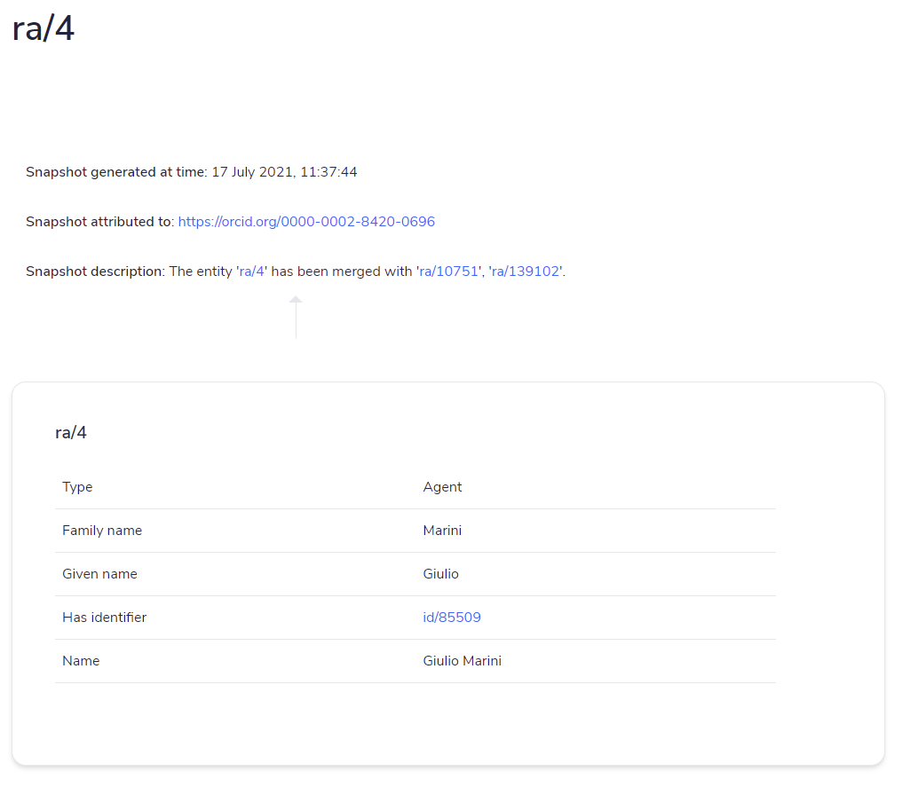
Cosa non ho capito
- Domande relative all'articolo A document-inspired way for tracking changes of RDF data (Peroni, et al., 2016):
- Nell'articolo si legge:
[...] while preserving provenance information of such addition/deletion actions in an appropriate contextual space, i.e. the provenance graph associated to such entity (as also suggested in [16]).
[16] sarebbe l'articolo Tracking RDF Graph Provenance using RDF Molecules (Ding, et al., 2005). Ho studiato l'articolo citato e non sono riuscito a capire in che modo questo suggerisca di utilizzare il grafo associato a un'entità come contesto per registrare la provenance. L'articolo sembra piuttosto suggerire come livello appropriato una "molecola RDF", ovvero una tripla in assenza di blank nodes, il risultato di un algoritmo di decomposizione secondo un'ontologia data in caso di blank nodes.
- Nel secondo capitolo dell'articolo vengono discussi due approcci per tenere traccia dei cambiamenti in dati RDF, ovvero l'approccio statement-centric e resource-centric: non ho capito se questa tassonomia sia un contributo originale dell'articolo o esista altrove. Nel caso, mi piacerebbe approfondire perché non mi è del tutto chiara.
- Tra gli approcci di tipo statement-centric viene menzionato il massive statement reification. Si riferisce a RDF reification? Ovvero all'unica sintassi standard per catturare provenance RDF (https://www.w3.org/TR/2004/REC-rdf-primer-20040210/#reification).
- Nell'articolo si legge:
- Potresti suggerirmi della bibliografia in materia di change tracking sui documenti testuali? In particolare, mi piacerebbe ricostruire in che modo l'approccio sulla provenance dell'OCDM si ispira a Microsoft Word e OpenOffice Writer.
- È legittimo inserire in bibliografia testi che non corrispondono ad alcuna citazione intratestuale? Ovvero documenti che sono risultati utili alla comprensione del problema, ma che per ragioni di sintesi non sono stati menzionati nel discorso.
- Oltre a EXCITE, al Linked Open Citation Database e al Venice Scholar Index, esistono altre repository o progetti che hanno adottato l'OCDM?
- Esistono casi in cui un documento RDF costruito seguendo l'OCDM contenga blank nodes?
Cosa ho fatto
- Ho scritto una sezione della literature review in cui introduco tutti i metadata representation models per la provenance esistenti, o almeno questo è l'obiettivo (difficile dire se siano realmente tutti, ogni volta che leggo un nuovo articolo ne scopro di nuovi). Riporto due tabelle che riassumono l'intero discorso a riguardo.
TYPE OF APPROACH METADATA REPRESENTATION MODELS Quadruples Named graphs, RDF/S graphsets, RDF triple coloring Extension of the RDF data model Notation 3 Logic, RDF+, annotated RDF (aRDF) and Annotated RDF Schema, SPOTL(X), RDF* Encapsulating Provenance with RDF Triples PaCE, singleton property Data models alternative to RDF GSMM, mapping entities to vectors Knowledge organisation system OPM, PML, Provenir, PREMIS, SWAN, DC, PROV, OCDM APPROACH TUPLE TYPE COMPLIANCE WITH THE RDF DATA MODEL COMPLIANCE WITH SPARQL RDF SERIALISATIONS EXTERNAL VOCABULARY SCALABLE Named graphs Quadruple + + TriG, TriX, N-Quads - + RDF/S graphsets Quadruple - - TriG, TriX, N-Quads - + RDF triple coloring Quadruple + + TriG, TriX, N-Quads - + N3Logic Triple (in N3) - + N3 N3 Logic Vocabulary + aRDF Nonstandard - - - - + Annotated RDF Schema Nonstandard - - - - + RDF+ Quintuple - - - - - SPOTL(X) Quintuple/sextuple - - - - - RDF* Nonstandard - - - - - PaCE Triple + + RDF/XML, N3, Turtle, N-Triples, RDF-JSON, JSON-LD, RDFa, HTML5 Microdata Provenir ontology - Singleton property Triple + + RDF/XML, N3, Turtle, N-Triples, RDF-JSON, JSON-LD, RDFa, HTML5 Microdata singletonPropertyOf property - -
Nuovi documenti studiati e citati:
- Beckett, D. (2010, April 10). RDF Syntaxes 2.0. Retrieved 07 22, 2021, from W3C: https://www.w3.org/2009/12/rdf-ws/papers/ws11
- Damiani, E., Oliboni, B., Quintarelli, E., & Tanca , L. (2019). A graph-based meta-model for heterogeneous data management. Knowledge and Information Systems, 61(1), 107–136. doi:10.1007/s10115-018-1305-8
- Dividino, R., Sizov, S., Staab, S., & Schueler, B. (2009). Querying for provenance, trust, uncertainty and other meta knowledge in RDF. Journal of Web Semantics, 7(3), 204-219. doi:10.1016/j.websem.2009.07.004
- Flouris, G., Fundulaki, I., Pediaditis, P., Theoharis, Y., & Christophides, V. (2009). Coloring RDF Triples to Capture Provenance. The Semantic Web - ISWC 2009. Springer, Berlin, Heidelberg. doi:10.1007/978-3-642-04930-9_13
- Groth, P., Gibson, A., & Velterop, J. (2010, 09 21). The anatomy of a nanopublication. Information Services & Use, 30(1-2), 51-56. doi:10.3233/ISU-2010-0613
- Hartig, O., & Thompson, B. (2019, March 20). Foundations of an Alternative Approach to Reification in RDF. Retrieved from https://arxiv.org/abs/1406.3399
- Hoffart, J., Suchanek, F. M., Berberich, K., & Weikum, G. (2013). YAGO2: A spatially and temporally enhanced knowledge base. Artificial Intelligence, 194, 28-61. doi:10.1016/j.artint.2012.06.001
- Keskisärkkä, R., Blomqvist, E., Lind, L., & Hartig, O. (2019, November 04). RSP-QL* : Enabling Statement-Level Annotations in RDF Streams. The Power of AI and Knowledge Graphs. SEMANTiCS 2019. Lecture Notes in Computer Science. 11702. Karlsruhe, Germany: Springer, Cham. doi:10.1007/978-3-030-33220-4_11
- Manola, F., & Miller, E. (Eds.). (2004, February 10). RDF Primer. Retrieved 07 22, 2021, from W3C: http://www.w3.org/TR/2004/REC-rdf-primer-20040210/
- Nguyen, V., Bodenreider, O., & Sheth, A. (2014). Don't like RDF reification?: making statements about statements using singleton property. WWW '14: Proceedings of the 23rd international conference on World wide web (pp. 759–770). New York, NY, USA: Association for Computing Machinery. doi:10.1145/2566486.2567973
- Noy, N., & Rector, A. (Eds.). (2006, 04 12). Defining N-ary Relations on the Semantic Web. Retrieved 07 22, 2021, from W3C: http://www.w3.org/TR/2006/NOTE-swbp-n-aryRelations-20060412/
- Pediaditis, P., Flouris, G., Fundulaki, I., & Christophides, V. (2009). On Explicit Provenance Management in RDF/S Graphs. First Workshop on the Theory and Practice of Provenance. San Francisco, CA, USA: USENIX. Retrieved from https://www.usenix.org/legacy/event/tapp09/tech/full_papers/pediaditis/pediaditis.pdf
- Pinheiro da Silva, P., McGuinness, D. L., & Fikes, R. (2006). A proof markup language for Semantic Web services. Information Systems, 31(4–5), 381-395. doi:10.1016/j.is.2005.02.003
- Sahoo, S. S., Bodenreider, O., Hitzler, P., Sheth, A., & Thirunarayan, K. (2010). Provenance Context Entity (PaCE): Scalable Provenance Tracking for Scientific RDF Data. In G. M., & L. B., Scientific and Statistical Database Management (Vol. 6187, pp. 461-470). Berlin, Heidelberg: Springer. doi:10.1007/978-3-642-13818-8_32
- Sikos, L., & Philp, D. (2020). Provenance-Aware Knowledge Representation: A Survey of Data Models and Contextualized Knowledge Graphs. Data Science and Engineering, 5(3), 293-316. doi:10.1007/s41019-020-00118-0
- Suchanek, F. M., Lajus, J., Boschin, A., & Weikum, G. (2019). Knowledge Representation and Rule. In M. Krötzsch, & D. Stepanova (Ed.), Reasoning Web. Explainable Artificial Intelligence: 15th International Summer School 2019, Bolzano, Italy, September 20-24, 2019, Tutorial Lectures (pp. 110-152). Springer International Publishing. doi:10.1007/978-3-030-31423-1_4
- Udrea, O., Recupero, D. R., & Subrahmanian, V. S. (2010, January). Annotated RDF. ACM Transactions on Computational Logic, 11(2), 1–41. doi:10.1145/1656242.1656245
- Zimmermann, A., Lopes, N., Polleres, A., & Straccia, U. (2012). A general framework for representing, reasoning and querying with annotated Semantic Web data. Journal of Web Semantics, 11, 72-95. doi:10.1016/j.websem.2011.08.006
- Lo stato corrente del capitolo sulla literature review può essere scaricato cliccando sul seguente bottone: Download literature review 1.0.0-alpha
Cosa non ho capito
- C'è un'aurea di mistero intorno all'articolo Context in graphs, di tale Hogan A (2018). Viene citato da https://doi.org/10.1007/s41019-020-00118-0 e https://doi.org/10.1007/978-3-030-67681-0 a proposito della Hoganification, una tecnica per catturare la provenance di un grafo. Ecco la citazione completa, identica in entrambe le fonti:
Hogan A (2018) Context in graphs. In: Proceedings of the 1st International Workshop on Conceptualized Knowledge Graphs. RWTH Aachen University, Aachen
Tuttavia, tale documento sembra non esistere. Non è nemmeno menzionato sul sito personale dell'autore (https://aidanhogan.com/) o su quello istituzionale (https://dblp.org/pid/h/AidanHogan.html). Conosci la Hoganification? Conosci fonti a riguardo? Mi piacerebbe parlarne per completezza, ma non trovo informazioni significative.
- Ha senso inserire una sezione della literature review in cui si parla di algoritmi di delta tra dati RDF?
Punto della situazione
In questa sezione ricapitolo cosa rimane da fare.
Per quanto riguarda il codice:
- Supporto per le inverse path nelle query SPARQL.
- Nuovo parametro di configurazione che permetta di caricare i grafi del passato ricostruiti su un triplestore, al fine di rendere più veloci le successive query agnostiche.
Per quanto riguarda la literature review:
- Sezione sul change tracking. La stesura è già avviata, proseguirà dopo la pubblicazione del diario.
Cosa ho fatto
- Ho scritto l'ultima sezione della literature review, in cui indago lo stato dell'arte sul change tracking in RDF, introduco le possibili politiche di archiviazione, le tipologie di query, riporto casi d'uso e li catalogo. Riporto tre tabelle che riassumono l'intero discorso a riguardo.
Table 1 Datasets and software divided by storage policy. Archiving policy Datasets / Software Independent copies (IC) DBPedia, Wikidata, YAGO, Dynamic Linked Data Observatory, SemVersion, PromptDiff Change-based (CB) (Im, Lee, & Kim, 2012), (Papavasileiou, Flouris, Fundulaki, Kotzinos, & Christophides, 2013), R&Wbase Timestamp-based (TB) x-RDF-3X, v-RDFCSA Hybrid OSTRICH (CB/TB), OpenCitations Corpus (CB/TB), (Tanon & Suchanek, 2019) (IC/CB/TB) Table 2 Retrieval functionalities according to (Fernández, Umbrich, Polleres, & Knuth, 2016). Materialization Structured queries Single time Cross time Version Version materialization
Get snapshot at time ti
Single-version structured queries
Articles written by a specific author at time ti
Cross-version structured queries
Articles associated with the same DOI simultaneously
Delta Delta materialization
Get delta at time ti
Single-delta structured queries
DOI modified between two consecutive snapshots
Cross-delta structured queries
The most significant change in the number of articles in the history of the dataset
Table 3 Software catalogued by allowed query types and the need for indexing. Software Version materialization Delta materialization Single version structured query Cross version structured query Single delta structured query Cross delta structured query On the fly PromptDiff + + - - - - + SemVersion + + - - - - + (Im, Lee, & Kim, 2012) + + + - + + - R&Wbase + + + - - - + x-RDF-3X + - + + - - - v-RDFCSA + + + + + + - OSTRICH + + + - - - - (Tanon & Suchanek, 2019) + + + + + + - -
Nuovi documenti studiati e citati:
- Barabucci, G., Tomasi, F., & Vitali, F. (2021). Supporting Complexity and Conjectures in Cultural Heritage Descriptions. CEUR Workshop Proceedings, 2810, 104-115. Retrieved from http://ceur-ws.org/Vol-2810/paper9.pdf
- Cerdeira-Pena, A., Farina, A., Fernández, J. D., & Martınez-Prieto, M. A. (2016). Self-indexing rdf archives. Proceedings of IEEE Data Compression Conference.
- Dooley, P., & Božić, B. (2019). Towards Linked Data for Wikidata Revisions and Twitter. iiWAS2019: Proceedings of the 21st International Conference on Information Integration and Web-based Applications & Services (pp. 166–175). New York, NY, USA: Association for Computing Machinery. doi:10.1145/3366030.3366048
- Erxleben, F., Günther, M., Krötzsch, M., Mendez, J., & Vrandečić, D. (2014). Introducing Wikidata to the Linked Data Web. The Semantic Web – ISWC 2014 (pp. 50–65). Springer International Publishing.
- Fernández, J. D., Polleres, A., & Umbrich, J. (2015). Towards Efficient Archiving of Dynamic Linked. DIACRON@ESWC (pp. 34–49). Portorož, Slovenia : Computer Science.
- Fernández, J. D., Umbrich, J., Polleres, A., & Knuth, M. (2016). Evaluating Query and Storage Strategies for RDF Archives. Proceedings of the 12th International Conference on Semantic Systems.
- Käfer, T., Abdelrahman, A., Umbrich, J., Byrne, P. O., & Hogan, A. (2013). Observing Linked Data Dynamics. The Semantic Web: Semantics and Big Data (pp. 213-227). Berlin, Heidelberg: Springer. Retrieved from https://link.springer.com/content/pdf/10.1007%2F978-3-642-38288-8_15.pdf
- Im, D.-H., Lee, S.-W., & Kim, H.-J. (2012). A Version Management Framework for RDF Triple Stores. International Journal of Software Engineering and Knowledge Engineering, 22, 85-106. doi:10.1142/S0218194012500040
- Lehmann, J., Isele, R., Jakob, M., Jentzsch, A., Kontokostas, D., Mendes, P. N., . . . Bizer, C. (2015). DBpedia – A large-scale, multilingual knowledge base extracted from Wikipedia. Semantic Web, 6(2), 167-195. doi:10.3233/SW-140134
- Neumann, T., & Weikum, G. (2010). x-RDF-3X: Fast Querying, High Update Rates, and Consistency for RDF Databases. Proceedings of the VLDB Endowment, 3, pp. 256–263.
- Noy, N. F., & Musen, M. A. (2002). Promptdiff: A Fixed-Point Algorithm for Comparing Ontology Versions. Proc. of IAAI, (pp. 744–750).
- Sande, M. V., Colpaert, P., Verborgh, R., Coppens, S., Mannens, E., & Walle, R. V. (2013). R&Wbase: Git for triples. Proceedings of the 6th Workshop on Linked Data on the Web. 996. CEUR Workshop Proceedings.
- Snodgrass, R. (1986). Temporal Databases. IEEE Computer, 19, 35–42. Retrieved from https://citeseerx.ist.psu.edu/viewdoc/download?doi=10.1.1.464.8688&rep=rep1&type=pdf
- Orlandi, F., & Passant, A. (2011). Modelling provenance of DBpedia resources using Wikipedia contributions. Journal of Web Semantics, 9(2), 149-164. doi:10.1016/j.websem.2011.03.002
- Papavasileiou, V., Flouris, G., Fundulaki, I., Kotzinos, D., & Christophides, V. (2013). High-level Change Detection in RDF(S) KBs. ACM Transactions on Database Systems, 38(1). doi:10.1145/2445583.2445584
- Taelman, R., Sande, M. V., & Verborgh, R. (2018). OSTRICH: Versioned Random-Access Triple Store. Companion Proceedings of the Web Conference 2018, (pp. 127-130). Retrieved from https://core.ac.uk/download/pdf/157574975.pdf
- Tanon, T. P., & Suchanek, F. M. (2019). Querying the Edit History of Wikidata. Extended Semantic Web Conference, (pp. 161-166). Portorož, Slovenia. doi:10.1007/978-3-030-32327-1_32
- Tanon, T. P., Weikum, G., & Suchanek, F. (2020). YAGO 4: A Reason-able Knowledge Base. The Semantic Web. ESWC 2020 (pp. 583-596). Cham: Springer.
- Umbrich, J., Hausenblas, M., Hogan, A., Polleres, A., & Decker, S. (2010). Towards Dataset Dynamics: Change Frequency of Linked Open Data Sources. In C. Bizer, T. Heath, T. Berners-Lee, & M. Hausenblas (Ed.), Proceedings of the WWW2010 Workshop on Linked Data on the Web. Raleigh, USA: CEUR Workshop Proceedings. Retrieved from http://ceur-ws.org/Vol-628/ldow2010_paper12.pdf
- Völkel, M., Winkler, W., Sure, Y., Kruk, S., & Synak, M. (2005). SemVersion: A Versioning System for RDF and Ontologies. Proc. of ESWC.
-
Modifiche apportate in seguito alle tue considerazioni:
-
There is a shorthand notation, the rdf:ID attribute in RDF/XML (Figure 2), but RDF Reification has no syntactic support for other serialisations.There is a shorthand notation, the rdf:ID attribute in RDF/XML (Figure 2), but it is not present in other serializations.
- La didascalia di Figura 1 non copre più parte dell'immagine.
- Quando parlo di "valid time" apro una finestra sulla complessità del problema, citando il proceeding Supporting Complexity and Conjectures in Cultural Heritage Descriptions di Barabucci, Tomasi e Vitali.
- Conclusa la rassegna di software e datasets rilevanti per il change tracking, sottolineo come i software per effettuare time-travel queries esistenti necessitino tutti di pre-indicizzazioni, a differenza del mio che, grazie al modello di provenance dell'OpenCitations Data Model, può elaborare la richiesta al volo.
- È stato adottato Chigago XV edizione come stile di citazione, al posto di APA VI edizione.
- L'indice prevede ora i seguenti capitoli:
- Table of Contents
- Abstract
- Introduction
- Literature review
- Materials and Methods
- The Time Agnostic Library
- Library implementation
- Discussion
- Conclusion
- References
- Modifiche di layout, sulla base di https://corsi.unibo.it/2cycle/DigitalHumanitiesKnowledge/information-on-writing-a-dissertation:
- Font: Times New Roman, 12pt.
- Interlinea: 1.5.
- Margini: 2-2-2-2.
- Ho aggiunto il frontespizio.
-
- Considero il capitolo potenzialmente concluso. Pertanto, avanzo la versione da alpha a beta: Download literature review 1.0.0-beta
Cosa non ho capito
- Ho scoperto che Wikidata utilizza la reificazione solo a livello metadatale, ma per il change tracking utilizza dei veri e propri phisical snapshots. Ogni volta che c'è una revisione, l'intero stato della risorsa dopo la revisione viene salvato. Nella literature review ho incluso una descrizione più dettagliata di cosa avviene. Sei d'accordo nel catalogare la politica di archiviazione di Wikipedia come independent-copies/physical snapshots?
- Consideriamo un autore di nome Dong-Hyuk Im, dove Dong-Hyuk è il nome. Come va abbreviato per citarlo in APA style? Im, D.-H.? Im, D.? Im, D.H.?
- Cristian vorrebbe citare il mio dataset. Come si potrebbe fare? Momentaneamente l'ho caricato su Zenodo con questo DOI: https://doi.org/10.5281/zenodo.5151264.
- Qual è il miglior modo per citare l'API di Crossref?
- Alla luce della classificazione riassunta in Tabella 2, il mio software al momento è in grafo di effettuare una version materialization (get_state_at_time) e una cross-version structured query (run_agnostic_query). Non è in grado di effettuare una single-version structured query, ovvero una query soddisfatta in un tempo specifico, né un qualsiasi tipo di query sui delta. Infine, la delta materialization è possibile by design, perché oco:hasUpdateQuery contiene già il delta tra due risorse. Sei d'accordo con queste affermazioni?
- Quali sono le parole italiane solitamente utilizzate per tradurre proceeding e literature review?
- Il font prescritto per la tesi è "Times o simili". È possibile utilizzare un'alternativa senza grazie?
- Tra le regole di layout per la tesi non ci sono indicazioni circa la spaziatura tra paragrafi. Solitamente, lascio 10 pt dopo ogni paragrafo, perché mi sembra una soluzione più leggibile dell'indentazione, ma so che le dissertazioni scientifiche usano l'indentazione. Cosa mi suggerisci di usare?
- Relativamente al frontespizio, qual è la materia di riferimento per la tesi? Computational thinking? Open Science?